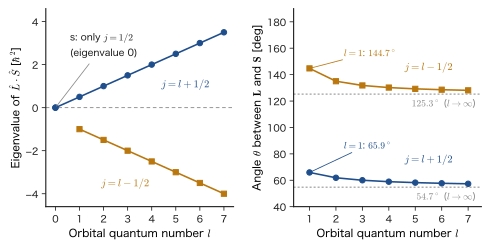
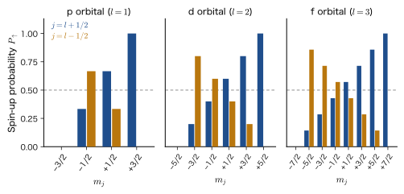

Chapter 25Addition of Angular Momenta and the Eigenvalue Problem of $\hat{\bm{L}}\cdot\hat{\bm{S}}$
The low-pressure sodium lamps used for street lights and tunnel lighting glow a vivid yellow. If we split this light with a prism and look closely, we find that it actually consists of two very closely spaced lines (the D lines of Na), with wavelengths $589.0\ \mathrm{nm}$ and $589.6\ \mathrm{nm}$. Both are light emitted when the sodium atom makes the transition from the 3p state to the 3s state. However, in the picture of the hydrogen-like atom that we learned in the previous chapters, the 3p state should be a single level (in the absence of a magnetic field) in which the three states $m=-1,0,1$ have the same energy, so there is no reason for it to split into two lines. The light splits into two lines because the 3p level is slightly split into two, and the cause of this is the interaction (the spin–orbit interaction) acting between the magnetism produced by the orbital motion of the electron and the magnetism carried by the spin of the electron.
What we need in order to treat this interaction in quantum mechanics is the subject of this chapter: the addition of angular momenta—adding the orbital angular momentum $\hat{\bm{L}}$ (Chapter 21 and Chapter 22) and the spin angular momentum $\hat{\bm{S}}$ (Chapter 23) to form the total angular momentum $\hat{\bm{J}}=\hat{\bm{L}}+\hat{\bm{S}}$—and the eigenvalue problem of $\hat{\bm{L}}\cdot\hat{\bm{S}}$, the form of the interaction. In classical mechanics (AD 03, “Introductory University Physics”), angular momentum is an ordinary vector, so the sum of two angular momenta is found simply by adding arrows. In quantum mechanics, the length and the direction of an angular momentum are not both “sharply determined at the same time,” so the addition takes a little more work. The result, however, is very beautiful: the sum $\hat{\bm{J}}$ also satisfies the commutation relations of angular momentum, its eigenvalues take the form $j(j+1)\hbar^2$, and the energy of the spin–orbit interaction is given by the simple expression $\tfrac{\hbar^2}{2}\bigl[j(j+1)-l(l+1)-s(s+1)\bigr]$.
In this chapter, we first rewrite $\hat{\bm{L}}\cdot\hat{\bm{S}}$ in terms of the ladder operators, apply it to the p orbitals ($l=1$, $6$ states) to build a $6\times6$ matrix, and then actually diagonalize that matrix to find the eigenvalues and eigenvectors. Next we repeat the same procedure for the d orbitals ($l=2$, a $10\times10$ matrix), and then go on to a formula that holds for general $l$, including the f orbitals ($l=3$, $14\times14$). We will see that the matrix splits into “blocks”; that the coefficients $\sqrt{1/3}$ and $\sqrt{2/3}$ of the eigenvectors are Clebsch–Gordan coefficients; that adding two electron spins produces a singlet and a triplet; and that the singlet–triplet splitting of the excited states of the helium atom is a concrete example of the fact that “the energy of an electron changes with the direction of its spin.” The tools acquired here are used repeatedly in Chapter 26 (The Physics of Spin–Orbit Interaction and Atoms in a Magnetic Field), in the degenerate perturbation theory of Part V, in the term symbols of many-electron atoms in Part VII, and in the ligand field of Part VIII.
- Define the total angular momentum $\hat{\bm{J}}=\hat{\bm{L}}+\hat{\bm{S}}$, and derive $[\hat{J}_x,\hat{J}_y]=i\hbar\hat{J}_z$ and the like from the fact that $\hat{\bm{L}}$ and $\hat{\bm{S}}$ act on separate variables and therefore commute
- Explain the meaning of the eigenvalue problem of $\hat{\bm{L}}\cdot\hat{\bm{S}}$ starting from $\hat{J}^2=\hat{L}^2+2\hat{\bm{L}}\cdot\hat{\bm{S}}+\hat{S}^2$, and derive $\hat{\bm{L}}\cdot\hat{\bm{S}}=\tfrac12(\hat{L}_+\hat{S}_-+\hat{L}_-\hat{S}_+)+\hat{L}_z\hat{S}_z$ without skipping any lines
- Apply $\hat{\bm{L}}\cdot\hat{\bm{S}}$ to the six functions $R\,Y_1^m\alpha$ and $R\,Y_1^m\beta$ of the p orbitals to build the $6\times6$ matrix (showing the breakdown into three terms explicitly), and explain why the conservation of $m_j=m+m_s$ splits it into $1\times1$ and $2\times2$ blocks
- Diagonalize the blocks to find the eigenvalues $\tfrac12\hbar^2$ (fourfold, $j=\tfrac32$) and $-\hbar^2$ (twofold, $j=\tfrac12$) and the eigenvectors (Clebsch–Gordan coefficients)
- Block-diagonalize in the same way for the d orbitals ($10\times10$) and the f orbitals ($14\times14$), see that for general $l$ the eigenvalues are $\tfrac{l}{2}\hbar^2$ ($j=l+\tfrac12$) and $-\tfrac{l+1}{2}\hbar^2$ ($j=l-\tfrac12$), and derive the center-of-gravity rule and the Landé interval rule
- Work with the general theory of the addition of two angular momenta ($j=\lvert j_1-j_2\rvert,\dots,j_1+j_2$), the triplet and singlet of two spins $\tfrac12$, and the general formula for the Clebsch–Gordan coefficients of $l\otimes\tfrac12$ (the addition of the orbital $l$ and the spin $\tfrac12$)
- Explain the singlet–triplet splitting of the 1s2s state of the helium atom (about $0.80\ \mathrm{eV}$) as a spin-dependent energy arising from the exchange integral $J_{ab}$
Source notes: Yasuhide Mochizuki, “Physics Notes: Quantum Mechanics 3,” pp. 11–18.
25.1 Combining Orbital and Spin Angular Momenta — The Total Angular Momentum $\hat{\bm{J}}=\hat{\bm{L}}+\hat{\bm{S}}$
25.1.1 An electron has two angular momenta
An electron in an atom has two kinds of angular momentum. One is the orbital angular momentum $\hat{\bm{L}}=\hat{\bm{r}}\times\hat{\bm{p}}$ associated with the motion around the nucleus (orbital motion); the eigenvalue of $\hat{L}^2$ is $l(l+1)\hbar^2$, and the eigenvalue of $\hat{L}_z$ is $m\hbar$ ($m=-l,-l+1,\dots,l$) (Chapter 21, Chapter 22). The other is the spin angular momentum $\hat{\bm{S}}$, which the electron has independently of its orbital motion; for the electron, the eigenvalue of $\hat{S}^2$ is $s(s+1)\hbar^2=\tfrac34\hbar^2$ (spin quantum number $s=\tfrac12$), and the eigenvalue of $\hat{S}_z$ is $m_s\hbar$ ($m_s=\pm\tfrac12$) (Chapter 23). In this book, the quantum numbers of a single electron are written in lowercase ($l,s,j$), and those that combine several electrons are written in uppercase ($L,S,J$). This chapter is about a single electron ($s=\tfrac12$).
In the chapters so far that dealt with the hydrogen atom, we treated the two angular momenta separately. The state of the electron was written as the product of the spatial hydrogen-like orbital $R_{nl}(r)\,Y_l^m(\theta,\varphi)$ and the spin part:
\begin{equation} \Psi(r,\theta,\varphi,\sigma)=R(r)\,Y_l^m(\theta,\varphi)\,\gamma(\sigma)\qquad(\gamma=\alpha\ \text{or}\ \beta) \label{eq:25-product} \end{equation}Here $R(r)=R_{nl}(r)$ is the radial function (Chapter 15), $\sigma=\pm\tfrac12$ is the spin variable (a variable that expresses the orientation of the spin, distinct from the Pauli matrices $\sigma_x,\sigma_y,\sigma_z$), and the spin function $\alpha(\sigma)$ is the state with $\hat{S}_z=+\tfrac12\hbar$ (spin-up $\ket{\uparrow}$), while $\beta(\sigma)$ is the state with $\hat{S}_z=-\tfrac12\hbar$ (spin-down $\ket{\downarrow}$). $\hat{\bm{L}}$ acts only on the coordinates $(r,\theta,\varphi)$, and $\hat{\bm{S}}$ acts only on the spin variable $\sigma$. For example, $\hat{L}_z$ acts on $Y_l^m$ and $\hat{S}_z$ acts on $\gamma$, so that
$$ \hat{L}_z\bigl[R\,Y_l^m\,\gamma\bigr]=m\hbar\,\bigl[R\,Y_l^m\,\gamma\bigr],\qquad \hat{S}_z\bigl[R\,Y_l^m\,\alpha\bigr]=+\tfrac12\hbar\,\bigl[R\,Y_l^m\,\alpha\bigr],\quad \hat{S}_z\bigl[R\,Y_l^m\,\beta\bigr]=-\tfrac12\hbar\,\bigl[R\,Y_l^m\,\beta\bigr] $$When the principal quantum number $n$ and the azimuthal quantum number $l$ are fixed, there are $2l+1$ choices of $m$ and two choices of spin, so there are $2(2l+1)$ such states in all. For a p orbital ($l=1$) there are $6$ of them, and for a d orbital ($l=2$) there are $10$.
25.1.2 Orbital magnetism and spin magnetism affect each other
Are the two angular momenta really unrelated, then? As we saw in Chapter 23, each of the two angular momenta is accompanied by a magnetic moment of the electron (a tiny magnet). An electron in orbital motion is equivalent to a circular current, so it has an orbital magnetic moment $\bm{\mu}_L=-\dfrac{e_0}{2m_{\mathrm e}}\bm{L}$, and the spin also has a magnetic moment, $\bm{\mu}_S=-g_s\dfrac{e_0}{2m_{\mathrm e}}\bm{S}$ ($g_s\approx2.0023$) (the negative sign expresses the fact that, because the electron's charge is $-e_0$, the magnetic moment points in the opposite direction to the angular momentum).
Intuition: The interaction of two small magnets
If you place two bar magnets on a desk, they attract or repel each other depending on their relative orientation. The interaction energy between the two changes with the orientation. The same holds for the two “magnets” inside an electron. The spin magnet is placed in the magnetic field created by the orbital motion. Because the energy of a magnet in a magnetic field depends on its orientation (for magnetic moments, see AD 03, “Introductory University Physics,” Chapter 38, Section 38.6 (in Japanese)), an energy appears that depends on the relative orientation of the orbital angular momentum $\bm{L}$ and the spin $\bm{S}$. The quantity that expresses the relation between the orientations of two vectors by a single number is the inner product $\bm{L}\cdot\bm{S}=\lvert\bm{L}\rvert\lvert\bm{S}\rvert\cos\theta$ ($\theta$ is the angle between the two), so the interaction Hamiltonian takes a form proportional to $\hat{\bm{L}}\cdot\hat{\bm{S}}$. However, the actual spin–orbit interaction is not a direct magnetic interaction between the two magnetic moments, orbital and spin (which is very small, of the order of $10^{-4}\ \mathrm{eV}$); it is the interaction between the spin magnetic moment and the magnetic field created by the nucleus circling around the electron, as seen from the electron (Chapter 26). Please take the bar-magnet picture as an intuitive illustration of the form “the energy is determined by the relative orientation of $\bm{L}$ and $\bm{S}$.”
The value of the coefficient of this spin–orbit interaction and its exact derivation (the magnetic field in the electron's rest frame and the Thomas factor) are given in Chapter 26. In this chapter we simply accept that the interaction has the form $\hat{H}_{\mathrm{SO}}=\xi(r)\,\hat{\bm{L}}\cdot\hat{\bm{S}}$ ($\xi(r)$ is a function of the radial coordinate $r$ only), and solve the eigenvalue problem of the operator $\hat{\bm{L}}\cdot\hat{\bm{S}}$ mathematically.
When a term $\hat{\bm{L}}\cdot\hat{\bm{S}}$ is present, we can no longer classify the states by specifying $m$ and $m_s$ separately, as we have done so far (we will see this in Section 25.4). Instead, the quantity obtained by adding the two angular momenta becomes convenient.
25.1.3 Definition of the combined angular momentum
Definition 25.1: Combined angular momentum (total angular momentum)
The magnetic moment associated with an electron's orbital angular momentum and the magnetic moment associated with its spin angular momentum interact with each other (the spin–orbit interaction). We therefore treat the two angular momenta together. Let $\bm{L}$ be the electron's orbital angular momentum vector and $\bm{S}$ its spin angular momentum vector; their sum
\begin{equation} \bm{J}=\bm{L}+\bm{S} \label{eq:25-J} \end{equation}is called the combined angular momentum (or total angular momentum). In quantum mechanics, we define the sum of the orbital angular momentum operator $\hat{\bm{L}}$ and the spin angular momentum operator $\hat{\bm{S}}$
\begin{equation} \hat{\bm{J}}=\hat{\bm{L}}+\hat{\bm{S}}\qquad\text{that is}\qquad \begin{cases} \hat{J}_x=\hat{L}_x+\hat{S}_x\\ \hat{J}_y=\hat{L}_y+\hat{S}_y\\ \hat{J}_z=\hat{L}_z+\hat{S}_z \end{cases} \label{eq:25-Jop} \end{equation}to be the combined angular momentum operator. Let $\hat{J}^2=\hat{J}_x^2+\hat{J}_y^2+\hat{J}_z^2=\lvert\hat{\bm{J}}\rvert^2$.
In classical mechanics, when for example a spinning top rotates about its own axis (spin) and at the same time revolves about another axis (orbit), the total angular momentum is the sum of those two vectors. Eq. \eqref{eq:25-J} is the quantum version of this. Because $\hat{\bm{L}}$ acts only on the spatial coordinates and $\hat{\bm{S}}$ acts only on the spin variable, operators of different kinds, such as $\hat{L}_x$ and $\hat{S}_y$, give the same result when their order is interchanged (we verify this in Section 25.2).
25.1.4 The quantum number $j$ of the total angular momentum — preview
As we will show in the following sections, $\hat{\bm{J}}$ also satisfies the commutation relations of angular momentum. Then, by the general theory of angular momentum learned in Chapter 24, the eigenvalue of $\hat{J}^2$ takes the form $j(j+1)\hbar^2$ ($j=0,\tfrac12,1,\tfrac32,\dots$), and the eigenvalue of $\hat{J}_z$ takes the form $m_j\hbar$ ($m_j=-j,-j+1,\dots,j$). When the orbital angular momentum $l$ and the spin $s=\tfrac12$ are combined, the values that $j$ can take are
$$ j=l+\tfrac12\quad\text{and}\quad j=l-\tfrac12\qquad(l\ge1),\qquad j=\tfrac12\quad(l=0) $$(we confirm this by counting in Section 25.4 and extend it to the general case in Section 25.8). For example, a p orbital ($l=1$) splits into $j=\tfrac32$ and $j=\tfrac12$. For a sum of classical vectors, the length of the sum of vectors of lengths $\lvert\bm{L}\rvert$ and $\lvert\bm{S}\rvert$ varies continuously from the value when the two directions are aligned ($\lvert\bm{L}\rvert+\lvert\bm{S}\rvert$) to the value when they are opposite ($\bigl\lvert\lvert\bm{L}\rvert-\lvert\bm{S}\rvert\bigr\rvert$). The difference in quantum mechanics is that $j$ is restricted to just two values, $l+\tfrac12$ and $l-\tfrac12$ (it is discrete).
The combinations of $l$ and $j$, the spectroscopic symbols, and the numbers of states are summarized in Table 25.1.
| Orbital | $l$ | $j$ | Number of states $2j+1$ | Electronic state symbol $nl_j$ | Term symbol ${}^{2S+1}L_J$ |
|---|---|---|---|---|---|
| s | 0 | $\tfrac12$ | 2 | $n\mathrm{s}_{1/2}$ | ${}^2\mathrm{S}_{1/2}$ |
| p | 1 | $\tfrac32$ | 4 | $n\mathrm{p}_{3/2}$ | ${}^2\mathrm{P}_{3/2}$ |
| $\tfrac12$ | 2 | $n\mathrm{p}_{1/2}$ | ${}^2\mathrm{P}_{1/2}$ | ||
| d | 2 | $\tfrac52$ | 6 | $n\mathrm{d}_{5/2}$ | ${}^2\mathrm{D}_{5/2}$ |
| $\tfrac32$ | 4 | $n\mathrm{d}_{3/2}$ | ${}^2\mathrm{D}_{3/2}$ | ||
| f | 3 | $\tfrac72$ | 8 | $n\mathrm{f}_{7/2}$ | ${}^2\mathrm{F}_{7/2}$ |
| $\tfrac52$ | 6 | $n\mathrm{f}_{5/2}$ | ${}^2\mathrm{F}_{5/2}$ |
In the symbol $n\mathrm{p}_{3/2}$ used to write an electronic state, $n$ is the principal quantum number, the letter gives the kind of orbital (s, p, d, f correspond to $l=0,1,2,3$), and the subscript is the quantum number $j$ of the total angular momentum. For example, $2\mathrm{p}_{3/2}$ is the state with principal quantum number $2$, $l=1$, and $j=\tfrac32$. The superscript $2S+1=2$ at the upper left of the term symbol ${}^{2S+1}L_J$ is the spin multiplicity; for a single electron, $S=s=\tfrac12$, $L=l$, and $J=j$ (term symbols of many-electron atoms are treated in Chapter 34). For every $l$ in the table, adding up the numbers of states for the values of $j$ gives $2(2l+1)$ ($2$ for s, $4+2=6$ for p, $6+4=10$ for d, and $8+6=14$ for f). This agrees with the total number of states counted in Section 25.1.1.
Example 25.1: $j$ and the number of states of 3d and 4f electrons
(1) Find all the values of the total angular momentum quantum number $j$ for a 3d electron ($l=2$, $s=\tfrac12$), and write the number of states and the electronic state symbol for each. (2) Do the same for a 4f electron ($l=3$). (3) Verify that in both cases the total number of states agrees with $(2l+1)(2s+1)$.
Solution. (1) From $j=l\pm\tfrac12$, we have $j=2+\tfrac12=\tfrac52$ and $j=2-\tfrac12=\tfrac32$. For each $j$ there are $2j+1$ states, $m_j=-j,\dots,+j$, so $j=\tfrac52$ has $2\cdot\tfrac52+1=6$ states and $j=\tfrac32$ has $2\cdot\tfrac32+1=4$ states. The electronic state symbols are $3\mathrm{d}_{5/2}$ (six states) and $3\mathrm{d}_{3/2}$ (four states), and the term symbols are ${}^2\mathrm{D}_{5/2}$ and ${}^2\mathrm{D}_{3/2}$.
(2) Since $l=3$, $j=\tfrac72$ and $j=\tfrac52$. The numbers of states are $2\cdot\tfrac72+1=8$ and $2\cdot\tfrac52+1=6$. The symbols are $4\mathrm{f}_{7/2}$ (eight states) and $4\mathrm{f}_{5/2}$ (six states), and the term symbols are ${}^2\mathrm{F}_{7/2}$ and ${}^2\mathrm{F}_{5/2}$.
(3) For 3d: $6+4=10$ and $(2l+1)(2s+1)=5\times2=10$, which agree. For 4f: $8+6=14$ and $(2l+1)(2s+1)=7\times2=14$, which agree. For general $l$, $(2l+2)+2l=4l+2=2(2l+1)$.
Application: Why the sodium D line splits into two
The outermost-shell electron of the sodium atom is in the 3s orbital ($l=0$). The 3s state has only $j=\tfrac12$ and does not split. On the other hand, the excited 3p electron ($l=1$) splits into two levels, $3\mathrm{p}_{3/2}$ and $3\mathrm{p}_{1/2}$, and the energy difference is about $17\ \mathrm{cm^{-1}}$ in wavenumber (since $1\ \mathrm{cm^{-1}}=0.1240\ \mathrm{meV}$, about $2.1\ \mathrm{meV}$). The wavelengths of the transitions to 3s (values in air) are $588.995\ \mathrm{nm}$ for $3\mathrm{p}_{3/2}\to3\mathrm{s}$ (the D2 line) and $589.592\ \mathrm{nm}$ for $3\mathrm{p}_{1/2}\to3\mathrm{s}$ (the D1 line); to the naked eye they look like nearly the same yellow, but in a spectroscope they separate into two lines. The formula for the size of this splitting is derived in Section 25.7 (Example 25.11). The larger the atomic number of the element, the stronger the spin–orbit interaction and the larger the splitting (Chapter 26).
25.2 Commutation Relations of the Combined Angular Momentum — $\hat{\bm{J}}$ Is Also an Angular Momentum
25.2.1 Why examine the commutation relations?
We can call $\hat{\bm{L}}$ the “orbital angular momentum” and $\hat{\bm{S}}$ the “spin angular momentum” because both satisfy the same commutation relations
$$ [\hat{L}_x,\hat{L}_y]=i\hbar\hat{L}_z,\quad[\hat{L}_y,\hat{L}_z]=i\hbar\hat{L}_x,\quad[\hat{L}_z,\hat{L}_x]=i\hbar\hat{L}_y, \qquad [\hat{S}_x,\hat{S}_y]=i\hbar\hat{S}_z,\quad[\hat{S}_y,\hat{S}_z]=i\hbar\hat{S}_x,\quad[\hat{S}_z,\hat{S}_x]=i\hbar\hat{S}_y $$(Chapter 21, Section 21.3, Chapter 23). Properties such as the eigenvalues of angular momentum taking the forms $j(j+1)\hbar^2$ and $m\hbar$, and the states lining up like the rungs of a ladder under the ladder operators, are all derived from these commutation relations alone (Chapter 24). Therefore, if we show that the sum $\hat{\bm{J}}=\hat{\bm{L}}+\hat{\bm{S}}$ also satisfies the same commutation relations, the general theory of angular momentum can be applied to $\hat{\bm{J}}$ as it stands.
25.2.2 $\hat{L}$ and $\hat{S}$ commute
Before starting the calculation, let us confirm the key fact. $\hat{L}_x,\hat{L}_y,\hat{L}_z$ are differential operators that act on the spatial coordinates (on $\theta,\varphi$ in polar coordinates), whereas $\hat{S}_x,\hat{S}_y,\hat{S}_z$ are operators ($2\times2$ matrices) that act only on the spin variable $\sigma$. Since they act on different variables, interchanging the order should give the same result. Let us check this explicitly. The wave function of an electron is a function $\Psi(x,y,z,\sigma)$ of the spatial coordinates and the spin variable. Since $\sigma$ takes only the two values $+\tfrac12$ and $-\tfrac12$, $\Psi$ can always be written as a sum of two products
\begin{equation} \Psi(x,y,z,\sigma)=\psi_\alpha(x,y,z)\,\alpha(\sigma)+\psi_\beta(x,y,z)\,\beta(\sigma) \label{eq:25-2comp} \end{equation}($\psi_\alpha$ and $\psi_\beta$ are functions of the spatial coordinates only: the spin-up component and the spin-down component). We therefore first examine a function of a single product form (a form in which the spatial part and the spin part are separated, as in separation of variables) $\Psi=\psi(x,y,z)\,S(\sigma)$, where $S(\sigma)$ is any spin function.
Derivation: $[\hat{S}_x,\hat{L}_y]=0$ and $[\hat{L}_x,\hat{S}_y]=0$
To a function of product form $\Psi=\psi(x,y,z)\,S(\sigma)$ we first apply $\hat{L}_y$ and then $\hat{S}_x$. Since $\hat{L}_y$ does not touch $\sigma$, $S(\sigma)$ can be pulled out like a constant, and $\hat{L}_y\Psi=\bigl(\hat{L}_y\psi\bigr)S$. Next, since $\hat{S}_x$ does not touch $(x,y,z)$, $\hat{L}_y\psi$ can be pulled out like a constant, and
$$ \hat{S}_x\hat{L}_y\Psi=\hat{S}_x\bigl[(\hat{L}_y\psi)\,S\bigr]=(\hat{L}_y\psi)\,(\hat{S}_xS). $$In the opposite order, we apply $\hat{L}_y$ after $\hat{S}_x\Psi=\psi\,(\hat{S}_xS)$; this time $\hat{S}_xS$ does not depend on $(x,y,z)$, so it can be pulled out like a constant, and
$$ \hat{L}_y\hat{S}_x\Psi=\hat{L}_y\bigl[\psi\,(\hat{S}_xS)\bigr]=(\hat{L}_y\psi)\,(\hat{S}_xS). $$The two are equal: $\hat{S}_x\hat{L}_y\Psi=\hat{L}_y\hat{S}_x\Psi$. A general $\Psi$ is a sum of two products as in Eq. \eqref{eq:25-2comp}, and the operators are linear, so a relation that holds for each term of the sum holds for $\Psi$ as a whole. Hence
$$ [\hat{S}_x,\hat{L}_y]=\hat{S}_x\hat{L}_y-\hat{L}_y\hat{S}_x=0,\qquad [\hat{L}_x,\hat{S}_y]=0. $$The same argument holds for every combination of $x,y,z$, so in general $[\hat{L}_i,\hat{S}_j]=0$ ($i,j=x,y,z$, all nine cases).
∎
25.2.3 Calculating $[\hat{J}_x,\hat{J}_y]$
Derivation: $[\hat{J}_x,\hat{J}_y]=i\hbar\hat{J}_z$
From the definition of the commutator $[\hat{A},\hat{B}]=\hat{A}\hat{B}-\hat{B}\hat{A}$ and $\hat{J}_x=\hat{L}_x+\hat{S}_x$, $\hat{J}_y=\hat{L}_y+\hat{S}_y$ of Eq. \eqref{eq:25-Jop}, we have
$$ [\hat{J}_x,\hat{J}_y]=\hat{J}_x\hat{J}_y-\hat{J}_y\hat{J}_x=(\hat{L}_x+\hat{S}_x)(\hat{L}_y+\hat{S}_y)-(\hat{L}_y+\hat{S}_y)(\hat{L}_x+\hat{S}_x) $$Expanding each product, the first term is $\hat{L}_x\hat{L}_y+\hat{L}_x\hat{S}_y+\hat{S}_x\hat{L}_y+\hat{S}_x\hat{S}_y$ and the second term is $\hat{L}_y\hat{L}_x+\hat{L}_y\hat{S}_x+\hat{S}_y\hat{L}_x+\hat{S}_y\hat{S}_x$; regrouping these by pairs of operators of the same kind gives
\begin{align*} [\hat{J}_x,\hat{J}_y]&=(\hat{L}_x\hat{L}_y-\hat{L}_y\hat{L}_x)+(\hat{S}_x\hat{L}_y-\hat{L}_y\hat{S}_x)+(\hat{L}_x\hat{S}_y-\hat{S}_y\hat{L}_x)+(\hat{S}_x\hat{S}_y-\hat{S}_y\hat{S}_x)\\ &=[\hat{L}_x,\hat{L}_y]+[\hat{S}_x,\hat{L}_y]+[\hat{L}_x,\hat{S}_y]+[\hat{S}_x,\hat{S}_y] \end{align*}(each of the eight terms is contained in one of the four commutators). As shown in Section 25.2.2, the mixed commutators $[\hat{S}_x,\hat{L}_y]$ and $[\hat{L}_x,\hat{S}_y]$, which contain both $\hat{L}$ and $\hat{S}$, are $0$. For the remaining two we use the commutation relations among the $\hat{L}$'s and among the $\hat{S}$'s:
$$ [\hat{J}_x,\hat{J}_y]=[\hat{L}_x,\hat{L}_y]+[\hat{S}_x,\hat{S}_y]=i\hbar\hat{L}_z+i\hbar\hat{S}_z=i\hbar\,(\hat{L}_z+\hat{S}_z)=i\hbar\hat{J}_z . $$$[\hat{J}_y,\hat{J}_z]$ is similar. In $[\hat{J}_y,\hat{J}_z]=[\hat{L}_y,\hat{L}_z]+[\hat{L}_y,\hat{S}_z]+[\hat{S}_y,\hat{L}_z]+[\hat{S}_y,\hat{S}_z]$ the middle two terms are $0$, and the rest becomes $i\hbar\hat{L}_x+i\hbar\hat{S}_x=i\hbar\hat{J}_x$. The same holds for $[\hat{J}_z,\hat{J}_x]=[\hat{L}_z,\hat{L}_x]+[\hat{S}_z,\hat{S}_x]=i\hbar\hat{L}_y+i\hbar\hat{S}_y=i\hbar\hat{J}_y$ (we have merely cycled the indices $x\to y\to z\to x$).
∎
Theorem 25.1: Commutation relations of the combined angular momentum
The three components of $\hat{\bm{J}}=\hat{\bm{L}}+\hat{\bm{S}}$ satisfy the same commutation relations as the orbital angular momentum and the spin:
\begin{equation} [\hat{J}_x,\hat{J}_y]=i\hbar\hat{J}_z,\qquad[\hat{J}_y,\hat{J}_z]=i\hbar\hat{J}_x,\qquad[\hat{J}_z,\hat{J}_x]=i\hbar\hat{J}_y \label{eq:25-JJ} \end{equation}(These can also be written together as $[\hat{J}_i,\hat{J}_j]=i\hbar\sum_k\varepsilon_{ijk}\hat{J}_k$. Here $\varepsilon_{ijk}$ is the Levi-Civita symbol, defined by $\varepsilon_{xyz}=\varepsilon_{yzx}=\varepsilon_{zxy}=+1$, $\varepsilon_{yxz}=\varepsilon_{xzy}=\varepsilon_{zyx}=-1$, and $0$ whenever two or more of the indices are equal. For example, for $i=x$, $j=y$ only the $k=z$ term remains, giving $[\hat{J}_x,\hat{J}_y]=i\hbar\hat{J}_z$.) Therefore $\hat{\bm{J}}$ is also an angular momentum, and $\hat{J}^2$ and $\hat{J}_z$ can be diagonalized simultaneously.
The last claim follows from $[\hat{J}^2,\hat{J}_z]=0$. This holds because the calculation we carried out for $\hat{L}$ in Chapter 22 (the proof of $[\hat{L}^2,\hat{L}_z]=0$) used only the commutation relations. That is, from Eq. \eqref{eq:25-JJ} alone we obtain $[\hat{J}^2,\hat{J}_z]=[\hat{J}_x^2+\hat{J}_y^2,\hat{J}_z]=\hat{J}_x[\hat{J}_x,\hat{J}_z]+[\hat{J}_x,\hat{J}_z]\hat{J}_x+\hat{J}_y[\hat{J}_y,\hat{J}_z]+[\hat{J}_y,\hat{J}_z]\hat{J}_y=-i\hbar(\hat{J}_x\hat{J}_y+\hat{J}_y\hat{J}_x)+i\hbar(\hat{J}_y\hat{J}_x+\hat{J}_x\hat{J}_y)=0$ (we used $[\hat{J}_x,\hat{J}_z]=-i\hbar\hat{J}_y$). Similarly, $\hat{J}^2$ also commutes with each of $\hat{J}_x,\hat{J}_y$.
25.2.4 Two sets of “simultaneously determined quantities”
Two sets of commuting operators can be considered for classifying the $2(2l+1)$ states of one electron.
We compare these two sets in Table 25.2.
| Set | Operators | Quantum numbers | States |
|---|---|---|---|
| A | $\hat{L}^2,\ \hat{S}^2,\ \hat{L}_z,\ \hat{S}_z$ | $l,\ s,\ m,\ m_s$ | $R\,Y_l^m\,\alpha$, $R\,Y_l^m\,\beta$ |
| B | $\hat{L}^2,\ \hat{S}^2,\ \hat{J}^2,\ \hat{J}_z$ | $l,\ s,\ j,\ m_j$ | $R\,\ket{l,s;j,m_j}$ (linear combinations of $Y_l^m\alpha$ and $Y_l^m\beta$) |
The basis of set A consists of functions of product form such as $Y_l^m\alpha$. The basis of set B consists, in general, of linear combinations of products. In both cases the total number of states is the same, $2(2l+1)$ (two ways of choosing a basis for a $2(2l+1)$-dimensional space). When the spin–orbit interaction $\hat{\bm{L}}\cdot\hat{\bm{S}}$ is included, the quantum numbers $(j,m_j)$ of set B become “good quantum numbers” (they can be diagonalized simultaneously with $\hat{H}$), and the $m,m_s$ of set A can no longer be used. We show this claim in Section 25.3.
Intuition: $\hat{\bm{J}}$ is the quantity of “rotation of the whole atom”
Consider rotating the whole atom, orbital and spin together, about the $z$ axis through an angle $\delta\varphi$. The orbital wave function is rotated by $e^{-i\delta\varphi\,\hat{L}_z/\hbar}$ and the spin function is rotated by $e^{-i\delta\varphi\,\hat{S}_z/\hbar}$, so the operation of rotating them together is $e^{-i\delta\varphi(\hat{L}_z+\hat{S}_z)/\hbar}=e^{-i\delta\varphi\hat{J}_z/\hbar}$. That is, $\hat{\bm{J}}$ is the “generator” of the operation that rotates both the space and the spin of the electron simultaneously. In an isolated atom on which no external force acts, the physics does not change when the orientations of the orbital and the spin are rotated simultaneously, so the Hamiltonian commutes with $\hat{\bm{J}}$ and $\hat{\bm{J}}$ becomes a conserved quantity. On the other hand, when there is a spin–orbit interaction, the physics changes if we rotate only the orbital or only the spin, so $\hat{\bm{L}}$ and $\hat{\bm{S}}$ are not conserved individually. This is the reason that $j$ and $m_j$ become “good quantum numbers.”
Caution: The product form $\psi(x,y,z)\,S(\sigma)$ applies only when there is no interaction
A product form such as $R\,Y_l^m\,\alpha$ in Eq. \eqref{eq:25-product} is an eigenfunction when the orbital and the spin move independently (that is, when there is no spin–orbit interaction). When there is an interaction, the eigenfunction becomes a sum of functions of product form, for example $\sqrt{\tfrac23}\,R\,Y_1^0\,\alpha+\sqrt{\tfrac13}\,R\,Y_1^1\,\beta$ (Section 25.5). In this state the “orbital $m$ and the spin orientation” are intertwined, and we cannot fix only one of them. On the other hand, the argument of Section 25.2.2 splits $\Psi$ into the sum of products \eqref{eq:25-2comp} and proves the result for each term, so it holds as it stands for a general state that is not of product form.
Example 25.2: Eigenvalues of $\hat{J}_z$ for the six functions of the p orbital
Apply $\hat{J}_z=\hat{L}_z+\hat{S}_z$ to the six functions of the p orbital, $R\,Y_1^m\,\alpha$, $R\,Y_1^m\,\beta$ ($m=-1,0,1$), and find the eigenvalue $m_j\hbar$ of each. Then group together the functions that have the same $m_j$.
Solution. $\hat{L}_z$ gives the eigenvalue $m\hbar$ for $Y_1^m$, and $\hat{S}_z$ gives the eigenvalue $+\tfrac12\hbar$ for $\alpha$ and $-\tfrac12\hbar$ for $\beta$, so a function of product form is also an eigenfunction of $\hat{J}_z$, and its eigenvalue is $m_j\hbar=(m+m_s)\hbar$:
$$ \hat{J}_z\bigl[R\,Y_1^m\,\alpha\bigr]=\bigl(m+\tfrac12\bigr)\hbar\,\bigl[R\,Y_1^m\,\alpha\bigr],\qquad \hat{J}_z\bigl[R\,Y_1^m\,\beta\bigr]=\bigl(m-\tfrac12\bigr)\hbar\,\bigl[R\,Y_1^m\,\beta\bigr]. $$The $m_j$ values of the six functions are: $Y_1^{-1}\beta$: $-\tfrac32$, $Y_1^{-1}\alpha$: $-\tfrac12$, $Y_1^{0}\beta$: $-\tfrac12$, $Y_1^{0}\alpha$: $+\tfrac12$, $Y_1^{1}\beta$: $+\tfrac12$, $Y_1^{1}\alpha$: $+\tfrac32$. Grouping them by $m_j$ gives
| $m_j$ | $-\tfrac32$ | $-\tfrac12$ | $+\tfrac12$ | $+\tfrac32$ |
|---|---|---|---|---|
| Functions | $Y_1^{-1}\beta$ | $Y_1^{-1}\alpha$, $Y_1^{0}\beta$ | $Y_1^{0}\alpha$, $Y_1^{1}\beta$ | $Y_1^{1}\alpha$ |
| Number | 1 | 2 | 2 | 1 |
The numbers are $1,2,2,1$ (six in total). This grouping corresponds directly to the block structure of the $6\times6$ matrix that appears in Section 25.4 ($1\times1$, $2\times2$, $2\times2$, $1\times1$).
25.3 The Need for $\hat{\bm{L}}\cdot\hat{\bm{S}}$ and Its Rewriting with the Ladder Operators
25.3.1 Finding the eigenvalues of $\hat{J}^2$ requires $\hat{\bm{L}}\cdot\hat{\bm{S}}$
The eigenvalues of the square of the magnitude of the orbital angular momentum, $\hat{L}^2$, and of the square of the magnitude of the spin, $\hat{S}^2$, are already known ($l(l+1)\hbar^2$ and $\tfrac34\hbar^2$). What about the square of the magnitude of the combined angular momentum, $\hat{J}^2=\lvert\hat{\bm{J}}\rvert^2$? Starting from the definition in Eq. \eqref{eq:25-Jop}, we expand the inner product.
\begin{equation} \hat{J}^2=(\hat{\bm{L}}+\hat{\bm{S}})\cdot(\hat{\bm{L}}+\hat{\bm{S}})=\hat{L}^2+\hat{\bm{L}}\cdot\hat{\bm{S}}+\hat{\bm{S}}\cdot\hat{\bm{L}}+\hat{S}^2=\hat{L}^2+2\,\hat{\bm{L}}\cdot\hat{\bm{S}}+\hat{S}^2 \label{eq:25-J2} \end{equation}Here $\hat{\bm{L}}\cdot\hat{\bm{S}}=\hat{L}_x\hat{S}_x+\hat{L}_y\hat{S}_y+\hat{L}_z\hat{S}_z$, and since $\hat{L}_i$ and $\hat{S}_i$ commute (Section 25.2.2), $\hat{\bm{S}}\cdot\hat{\bm{L}}=\hat{S}_x\hat{L}_x+\hat{S}_y\hat{L}_y+\hat{S}_z\hat{L}_z=\hat{\bm{L}}\cdot\hat{\bm{S}}$, so the two terms combine into $2\hat{\bm{L}}\cdot\hat{\bm{S}}$. This has the same form as the classical vector identity $\lvert\bm{L}+\bm{S}\rvert^2=\lvert\bm{L}\rvert^2+2\bm{L}\cdot\bm{S}+\lvert\bm{S}\rvert^2$ (the law of cosines; High School Mathematics, Chapter 3, Section 3.3). From Eq. \eqref{eq:25-J2} we see the following.
Once the eigenvalues of $\hat{\bm{L}}\cdot\hat{\bm{S}}$ are found, the eigenvalues of $\hat{J}^2$ are found
(Conversely, if the eigenvalues of $\hat{J}^2$ are known, so are those of $\hat{\bm{L}}\cdot\hat{\bm{S}}$.) This is why we need to solve the eigenvalue problem of $\hat{\bm{L}}\cdot\hat{\bm{S}}$. Moreover, since $\hat{\bm{L}}\cdot\hat{\bm{S}}$ is the very content of the spin–orbit interaction Hamiltonian, its eigenvalues give the energies of the spin–orbit splitting. This kills two birds with one stone.
25.3.2 What happens when $\hat{\bm{L}}\cdot\hat{\bm{S}}$ acts on a state
Let us apply $\hat{\bm{L}}\cdot\hat{\bm{S}}=\hat{L}_x\hat{S}_x+\hat{L}_y\hat{S}_y+\hat{L}_z\hat{S}_z$ to a wave function in product form, $\psi(x,y,z,\sigma)=\psi(x,y,z)\,S(\sigma)$. Since $\hat{L}$ acts on the spatial part and $\hat{S}$ acts on the spin part, we obtain
\begin{equation} (\hat{\bm{L}}\cdot\hat{\bm{S}})\,\psi(x,y,z)\,S(\sigma)=(\hat{L}_x\psi)\,(\hat{S}_xS)+(\hat{L}_y\psi)\,(\hat{S}_yS)+(\hat{L}_z\psi)\,(\hat{S}_zS) \label{eq:25-LS-act0} \end{equation}However, this is awkward to use as it stands. $\hat{L}_x\,Y_l^m$ and $\hat{L}_y\,Y_l^m$ do not return $Y_l^m$ itself but become sums of other functions $Y_l^{m\pm1}$ (Chapter 24), and the actions of $\hat{S}_x$ and $\hat{S}_y$ likewise take the form of interchanging $\alpha$ and $\beta$, which makes the calculation hard to follow. The ladder operators $\hat{L}_\pm$ and $\hat{S}_\pm$, on the other hand, act in a simple way: they merely shift $Y_l^m$ to $Y_l^{m\pm1}$, and $\alpha,\beta$ to $\beta,\alpha$, by one step. We therefore rewrite $\hat{\bm{L}}\cdot\hat{\bm{S}}$ in terms of the ladder operators.
25.3.3 Rewriting in terms of the ladder operators
The ladder operators are defined by $\hat{L}_\pm=\hat{L}_x\pm i\hat{L}_y$ and $\hat{S}_\pm=\hat{S}_x\pm i\hat{S}_y$. Adding and subtracting these two definitions side by side gives $\hat{L}_++\hat{L}_-=2\hat{L}_x$ and $\hat{L}_+-\hat{L}_-=2i\hat{L}_y$, so
\begin{equation} \begin{cases} \hat{L}_x=\dfrac12(\hat{L}_++\hat{L}_-)\\[2mm] \hat{L}_y=\dfrac{1}{2i}(\hat{L}_+-\hat{L}_-) \end{cases}\qquad \begin{cases} \hat{S}_x=\dfrac12(\hat{S}_++\hat{S}_-)\\[2mm] \hat{S}_y=\dfrac{1}{2i}(\hat{S}_+-\hat{S}_-) \end{cases} \label{eq:25-xy-pm} \end{equation}We substitute these into $\hat{L}_x\hat{S}_x$ and $\hat{L}_y\hat{S}_y$.
Derivation: Ladder-operator form of $\hat{L}_x\hat{S}_x+\hat{L}_y\hat{S}_y$
We substitute Eq. \eqref{eq:25-xy-pm} and expand. Since $\hat{L}$ and $\hat{S}$ commute, it suffices to expand the $\hat{L}$ side and the $\hat{S}$ side separately and arrange each term in the form $\hat{L}_a\hat{S}_b$.
\begin{align*} \hat{L}_x\hat{S}_x&=\frac12(\hat{L}_++\hat{L}_-)\cdot\frac12(\hat{S}_++\hat{S}_-) =\frac14\bigl(\hat{L}_+\hat{S}_++\hat{L}_+\hat{S}_-+\hat{L}_-\hat{S}_++\hat{L}_-\hat{S}_-\bigr),\\ \hat{L}_y\hat{S}_y&=\frac{1}{2i}(\hat{L}_+-\hat{L}_-)\cdot\frac{1}{2i}(\hat{S}_+-\hat{S}_-) =\frac{1}{4i^2}\bigl(\hat{L}_+\hat{S}_+-\hat{L}_+\hat{S}_--\hat{L}_-\hat{S}_++\hat{L}_-\hat{S}_-\bigr)\\ &=-\frac14\bigl(\hat{L}_+\hat{S}_+-\hat{L}_+\hat{S}_--\hat{L}_-\hat{S}_++\hat{L}_-\hat{S}_-\bigr)\qquad(i^2=-1). \end{align*}Adding the two expressions, the coefficients of $\hat{L}_+\hat{S}_+$ and $\hat{L}_-\hat{S}_-$ are $\tfrac14-\tfrac14=0$, so they cancel each other, while the coefficients of $\hat{L}_+\hat{S}_-$ and $\hat{L}_-\hat{S}_+$ are $\tfrac14+\tfrac14=\tfrac12$, so they reinforce each other:
$$ \hat{L}_x\hat{S}_x+\hat{L}_y\hat{S}_y=\frac12\bigl(\hat{L}_+\hat{S}_-+\hat{L}_-\hat{S}_+\bigr). $$Adding $\hat{L}_z\hat{S}_z$ to this gives $\hat{\bm{L}}\cdot\hat{\bm{S}}$.
∎
Theorem 25.2: Ladder-operator form of $\hat{\bm{L}}\cdot\hat{\bm{S}}$
\begin{equation} \hat{\bm{L}}\cdot\hat{\bm{S}}=\frac12\bigl(\hat{L}_+\hat{S}_-+\hat{L}_-\hat{S}_+\bigr)+\hat{L}_z\hat{S}_z \label{eq:25-LS} \end{equation}Intuition: “flip-flop” of spin and orbit
The first term $\tfrac12\hat{L}_+\hat{S}_-$ of Eq. \eqref{eq:25-LS} is the operation “lower the spin by one step ($\uparrow\to\downarrow$) and at the same time raise the orbital $m$ by one step.” The second term $\tfrac12\hat{L}_-\hat{S}_+$ is the opposite: it raises the spin and lowers $m$. In both cases the spin loses (or gains) angular momentum $\hbar$ while the orbit gains (or loses) the same amount, so the total $z$ component $m_j\hbar=(m+m_s)\hbar$ does not change. The third term $\hat{L}_z\hat{S}_z$ moves nothing and becomes a diagonal element.
The terms that change $m_j$ by $\pm2$, on the other hand, such as $\hat{L}_+\hat{S}_+$ (both $m$ and $m_s$ go up) and $\hat{L}_-\hat{S}_-$ (both go down), canceled each other and vanished in the sum of the $x$-component and $y$-component terms. This is a consequence of the fact that $\hat{\bm{L}}\cdot\hat{\bm{S}}$ (an inner product does not change under rotation) is invariant under rotations about the $z$ axis, and it amounts to the statement that “$m_j$ is conserved” (Section 25.4).
25.3.4 General formula for the eigenvalues of $\hat{\bm{L}}\cdot\hat{\bm{S}}$
Solving Eq. \eqref{eq:25-J2} for $\hat{\bm{L}}\cdot\hat{\bm{S}}$, we obtain
\begin{equation} \hat{\bm{L}}\cdot\hat{\bm{S}}=\frac12\bigl(\hat{J}^2-\hat{L}^2-\hat{S}^2\bigr) \label{eq:25-LS-J} \end{equation}If the three operators on the right-hand side can be diagonalized simultaneously, the eigenvalues follow immediately. For that, we need to make sure that $\hat{\bm{L}}\cdot\hat{\bm{S}}$ commutes with $\hat{L}^2,\hat{S}^2,\hat{J}^2,\hat{J}_z$.
Derivation: Commutation relations of $\hat{\bm{L}}\cdot\hat{\bm{S}}$
[i] Commutators with $\hat{L}^2$ and $\hat{S}^2$. $\hat{S}_i$ commutes with $\hat{L}^2$, and $\hat{L}_i$ commutes with $\hat{L}^2$ (Chapter 22), so $[\hat{\bm{L}}\cdot\hat{\bm{S}},\hat{L}^2]=\sum_i\hat{S}_i\,[\hat{L}_i,\hat{L}^2]=0$. The same holds for $\hat{S}^2$: $[\hat{\bm{L}}\cdot\hat{\bm{S}},\hat{S}^2]=\sum_i\hat{L}_i\,[\hat{S}_i,\hat{S}^2]=0$.
[ii] Commutator with $\hat{J}^2$. From Eq. \eqref{eq:25-J2}, $[\hat{J}^2,\hat{\bm{L}}\cdot\hat{\bm{S}}]=[\hat{L}^2,\hat{\bm{L}}\cdot\hat{\bm{S}}]+2[\hat{\bm{L}}\cdot\hat{\bm{S}},\hat{\bm{L}}\cdot\hat{\bm{S}}]+[\hat{S}^2,\hat{\bm{L}}\cdot\hat{\bm{S}}]=0$ (by [i] and by the fact that the commutator of an operator with itself is $0$).
[iii] Commutator with $\hat{J}_z$. We use the facts that $\hat{S}_i$ commutes with $\hat{L}_z$ and $\hat{L}_i$ commutes with $\hat{S}_z$. Since $[\hat{L}_x,\hat{L}_z]=-i\hbar\hat{L}_y$ and $[\hat{L}_y,\hat{L}_z]=i\hbar\hat{L}_x$ (we used Eq. \eqref{eq:25-JJ} with $\hat{J}$ replaced by $\hat{L}$), we have
\begin{align*} [\hat{\bm{L}}\cdot\hat{\bm{S}},\hat{L}_z]&=\hat{S}_x[\hat{L}_x,\hat{L}_z]+\hat{S}_y[\hat{L}_y,\hat{L}_z]+\hat{S}_z[\hat{L}_z,\hat{L}_z]=i\hbar\,(\hat{L}_x\hat{S}_y-\hat{L}_y\hat{S}_x),\\ [\hat{\bm{L}}\cdot\hat{\bm{S}},\hat{S}_z]&=\hat{L}_x[\hat{S}_x,\hat{S}_z]+\hat{L}_y[\hat{S}_y,\hat{S}_z]+\hat{L}_z[\hat{S}_z,\hat{S}_z]=-i\hbar\,(\hat{L}_x\hat{S}_y-\hat{L}_y\hat{S}_x). \end{align*}Taking the sum of the two equations gives $[\hat{\bm{L}}\cdot\hat{\bm{S}},\hat{J}_z]=0$. The same holds for $\hat{J}_x,\hat{J}_y$ (cyclic permutation of $x,y,z$), so $\hat{\bm{L}}\cdot\hat{\bm{S}}$ commutes with all three components of $\hat{\bm{J}}$.
On the other hand, as the first line above shows, $[\hat{\bm{L}}\cdot\hat{\bm{S}},\hat{L}_z]=i\hbar(\hat{L}_x\hat{S}_y-\hat{L}_y\hat{S}_x)\ne0$, and it likewise does not commute with $\hat{S}_z$.
∎
Theorem 25.3: Eigenvalues of $\hat{\bm{L}}\cdot\hat{\bm{S}}$
$\hat{\bm{L}}\cdot\hat{\bm{S}}$ commutes with $\hat{L}^2,\hat{S}^2,\hat{J}^2,\hat{J}_z$, but does not commute with $\hat{L}_z,\hat{S}_z$. Therefore the eigenfunctions of $\hat{\bm{L}}\cdot\hat{\bm{S}}$ can be chosen to be simultaneous eigenfunctions of $\hat{L}^2,\hat{S}^2,\hat{J}^2,\hat{J}_z$ (quantum numbers $l,s,j,m_j$), and the eigenvalue is
\begin{equation} \hat{\bm{L}}\cdot\hat{\bm{S}}\ \longrightarrow\ \frac{\hbar^2}{2}\Bigl[\,j(j+1)-l(l+1)-s(s+1)\,\Bigr] \label{eq:25-LS-eig} \end{equation}This value is independent of $m_j$.
Indeed, if we apply both sides of Eq. \eqref{eq:25-LS-J} to a simultaneous eigenfunction $\ket{l,s;j,m_j}$, the $\hat{J}^2,\hat{L}^2,\hat{S}^2$ on the right-hand side simply give $j(j+1)\hbar^2$, $l(l+1)\hbar^2$, and $s(s+1)\hbar^2$, respectively, and Eq. \eqref{eq:25-LS-eig} follows. For the electron $s=\tfrac12$, so $s(s+1)=\tfrac34$. We will check that this formula is correct by actually diagonalizing the matrices in Sections 25.5–25.7.
Caution: $m$ and $m_s$ cease to be “good quantum numbers” when $\hat{\bm{L}}\cdot\hat{\bm{S}}$ is present
Since $[\hat{\bm{L}}\cdot\hat{\bm{S}},\hat{L}_z]\ne0$, the eigenfunctions of $\hat{\bm{L}}\cdot\hat{\bm{S}}$ cannot be made eigenfunctions of $\hat{L}_z$ (that is, states with a definite $m$). The same can be said of $\hat{S}_z$. When two magnets influence each other, one cannot fix the orientation of each separately; only the orientation of the whole, $j,m_j$, is conserved. Indeed, in the calculation of Section 25.4, applying $\hat{\bm{L}}\cdot\hat{\bm{S}}$ to $R\,Y_1^{-1}\alpha$ mixes in $R\,Y_1^{0}\beta$.
25.3.5 The vector model — the angle between $\bm{L}$ and $\bm{S}$
Let us read the result of Theorem 25.3 in terms of a classical vector picture. For a p electron ($l=1$, $s=\tfrac12$), $\hat{L}^2\to l(l+1)\hbar^2=2\hbar^2$, $\hat{S}^2\to\tfrac34\hbar^2$, and $\hat{J}^2\to j(j+1)\hbar^2$. The lengths of the vectors are $\lvert\bm{L}\rvert=\sqrt{2}\,\hbar$, $\lvert\bm{S}\rvert=\tfrac{\sqrt3}{2}\hbar$, and $\lvert\bm{J}\rvert=\sqrt{j(j+1)}\,\hbar$. From Eq. \eqref{eq:25-LS-eig},
\begin{align*} j=\tfrac32:&\quad\hat{\bm{L}}\cdot\hat{\bm{S}}\to\frac{\hbar^2}{2}\Bigl(\frac{15}{4}-2-\frac34\Bigr)=\frac{\hbar^2}{2},\qquad \lvert\bm{J}\rvert=\frac{\sqrt{15}}{2}\hbar\approx1.94\,\hbar,\\ j=\tfrac12:&\quad\hat{\bm{L}}\cdot\hat{\bm{S}}\to\frac{\hbar^2}{2}\Bigl(\frac34-2-\frac34\Bigr)=-\hbar^2,\qquad \lvert\bm{J}\rvert=\frac{\sqrt{3}}{2}\hbar\approx0.87\,\hbar. \end{align*}Identifying these with the classical $\bm{L}\cdot\bm{S}=\lvert\bm{L}\rvert\lvert\bm{S}\rvert\cos\theta$, we obtain from $\cos\theta=\dfrac{\bm{L}\cdot\bm{S}}{\lvert\bm{L}\rvert\lvert\bm{S}\rvert}$
$$ j=\tfrac32:\ \cos\theta=\frac{\hbar^2/2}{\sqrt2\cdot\frac{\sqrt3}{2}\hbar^2}=\frac{1}{\sqrt6}\approx0.408\ \ (\theta\approx65.9^\circ),\qquad j=\tfrac12:\ \cos\theta=\frac{-\hbar^2}{\sqrt2\cdot\frac{\sqrt3}{2}\hbar^2}=-\frac{2}{\sqrt6}\approx-0.816\ \ (\theta\approx144.7^\circ) $$For $j=\tfrac32$, $\bm{L}$ and $\bm{S}$ form an acute angle and are “roughly aligned,” and for $j=\tfrac12$ the angle is obtuse and they point “roughly in opposite directions.” Figure 25.1 shows the triangle for $\bm{J}=\bm{L}+\bm{S}$, drawn with these lengths and angles preserved.
Caution: The vector model only shows the “relation between lengths and angles”
In quantum mechanics, the directions of $\bm{L}$ and $\bm{S}$ are not simultaneously determined except for their $z$ components. The vectors do not stand still, each with one definite direction, as in Figure 25.1. The figure is a way of reading off, from the sides and angles of a triangle, the relation that “the values of $\hat{L}^2$, $\hat{S}^2$, $\hat{J}^2$ correspond to the squares of the lengths, and the value of $\hat{\bm{L}}\cdot\hat{\bm{S}}$ corresponds to the inner product.” In the classical picture, this corresponds to $\bm{L}$ and $\bm{S}$ precessing rapidly about $\bm{J}$.
Example 25.3: Checking the eigenvalue for the highest state
Let $\hat{\bm{L}}\cdot\hat{\bm{S}}$ act on the function $R\,Y_l^l\,\alpha$ (the orbital $m$ is at its maximum, $m=l$, and the spin is up). Show that it is an eigenfunction and that its eigenvalue is $\tfrac{l}{2}\hbar^2$. Check that this agrees with the value obtained by setting $j=l+\tfrac12$ in Eq. \eqref{eq:25-LS-eig} of Theorem 25.3. Also find the numerical values for $l=1,2,3$.
Solution. We look at the three terms of Eq. \eqref{eq:25-LS} in turn. (a) $\tfrac12\hat{L}_+\hat{S}_-$: since $\hat{L}_+Y_l^l=0$ ($m$ cannot go any higher: with $\hat{L}_+Y_l^m=\hbar\sqrt{(l-m)(l+m+1)}\,Y_l^{m+1}$ and $m=l$, the coefficient is $\sqrt{0}=0$), the term is $0$. (b) $\tfrac12\hat{L}_-\hat{S}_+$: since $\hat{S}_+\alpha=0$ (the spin cannot go any higher), the term is $0$. (c) $\hat{L}_z\hat{S}_z$: since $\hat{L}_zY_l^l=l\hbar\,Y_l^l$ and $\hat{S}_z\alpha=\tfrac12\hbar\,\alpha$, we get $l\hbar\cdot\tfrac12\hbar=\tfrac{l}{2}\hbar^2$. Hence
$$ (\hat{\bm{L}}\cdot\hat{\bm{S}})\,R\,Y_l^l\,\alpha=\tfrac{l}{2}\hbar^2\,R\,Y_l^l\,\alpha $$so it is an eigenfunction, with eigenvalue $\tfrac{l}{2}\hbar^2$. Since $m_j=l+\tfrac12$ of this state is the maximum value for $j=l+\tfrac12$, the state has $j=l+\tfrac12$. Substituting $j=l+\tfrac12$, $s=\tfrac12$ into Eq. \eqref{eq:25-LS-eig} gives
$$ \frac{\hbar^2}{2}\Bigl[\bigl(l+\tfrac12\bigr)\bigl(l+\tfrac32\bigr)-l(l+1)-\tfrac34\Bigr]=\frac{\hbar^2}{2}\Bigl[l^2+2l+\tfrac34-l^2-l-\tfrac34\Bigr]=\frac{\hbar^2}{2}\,l $$so the two agree. The numerical values are $l=1$: $\tfrac12\hbar^2$, $l=2$: $\hbar^2$, $l=3$: $\tfrac32\hbar^2$ (these agree, respectively, with item (v) in Section 25.4, item [9] in Section 25.6, and the result for the f orbital in Section 25.7).
25.4 Action of $\hat{\bm{L}}\cdot\hat{\bm{S}}$ on the p Orbitals — The $6\times6$ Matrix
25.4.1 Strategy of the calculation and the formulas we use
Let us apply $\hat{\bm{L}}\cdot\hat{\bm{S}}$ to an electron in a p orbital ($l=1$) of the hydrogen atom and actually construct the matrix. The wave functions we consider are, once the quantum numbers $n,l$ have been fixed (for example, $2\mathrm{p}$), the functions of the form
$$ \Psi(r,\theta,\varphi,\sigma)=R(r)\,Y_1^m(\theta,\varphi)\,\gamma(\sigma)\qquad(m=0,\pm1,\ \gamma=\alpha,\beta) $$There are $3\times2=6$ such functions in all. Since $\hat{\bm{L}}$ acts only on the angles $(\theta,\varphi)$ and $\hat{\bm{S}}$ acts only on $\sigma$, the radial part $R(r)$ stays outside as a coefficient the whole time the operators act. We list the formulas used in the calculation. The orbital ladder operators (Chapters 22 and 24) are
\begin{equation} \hat{L}_+Y_l^m=\hbar\sqrt{(l-m)(l+m+1)}\,Y_l^{m+1},\qquad \hat{L}_-Y_l^m=\hbar\sqrt{(l+m)(l-m+1)}\,Y_l^{m-1} \label{eq:25-Lpm} \end{equation}(this is the form obtained by writing $\sqrt{l(l+1)-m(m\pm1)}$ in factorized form; $\hat{L}_+Y_l^l=0$ for $m=l$, and $\hat{L}_-Y_l^{-l}=0$ for $m=-l$), and the spin ladder operators (Chapter 23, Section 23.6) are given by
\begin{equation} \begin{cases}\hat{S}_+\alpha=0\\ \hat{S}_-\alpha=\hbar\beta\end{cases}\qquad \begin{cases}\hat{S}_+\beta=\hbar\alpha\\ \hat{S}_-\beta=0\end{cases} \label{eq:25-Spm} \end{equation}In addition, we use $\hat{L}_zY_l^m=m\hbar\,Y_l^m$, $\hat{S}_z\alpha=+\tfrac12\hbar\,\alpha$, and $\hat{S}_z\beta=-\tfrac12\hbar\,\beta$. Combining these with Eq. \eqref{eq:25-LS} of Theorem 25.2, that is,
$$ \hat{\bm{L}}\cdot\hat{\bm{S}}=\underbrace{\tfrac12\hat{L}_+\hat{S}_-}_{\text{first term}}+\underbrace{\tfrac12\hat{L}_-\hat{S}_+}_{\text{second term}}+\underbrace{\hat{L}_z\hat{S}_z}_{\text{third term}} $$we add the contributions of the three terms in turn for each function.
25.4.2 Action on $R\,Y_l^m\,\alpha$ and $R\,Y_l^m\,\beta$ for general $l$
Before turning to the six calculations for the p orbitals, we carry out the same calculation for general $l$ and $m$. The result can be used as it stands for the d orbitals (Section 25.6) and the f orbitals (Section 25.7) as well.
Derivation: Action of $\hat{\bm{L}}\cdot\hat{\bm{S}}$ on $R\,Y_l^m\,\alpha$ and $R\,Y_l^m\,\beta$
[i] The case of $\alpha$. We compute each term with Eqs. \eqref{eq:25-Lpm} and \eqref{eq:25-Spm}. By $\hat{L}_+Y_l^m=\hbar\sqrt{(l-m)(l+m+1)}\,Y_l^{m+1}$ and $\hat{S}_-\alpha=\hbar\beta$, the first term is $\tfrac12\hbar\sqrt{(l-m)(l+m+1)}\,\hbar\,R\,Y_l^{m+1}\beta$. The second term is $0$ because $\hat{S}_+\alpha=0$. The third term is $m\hbar\cdot\tfrac12\hbar\,R\,Y_l^m\alpha$. Therefore
$$ (\hat{\bm{L}}\cdot\hat{\bm{S}})\,R\,Y_l^m\alpha=\tfrac{\hbar^2}{2}\sqrt{(l-m)(l+m+1)}\;R\,Y_l^{m+1}\beta+0+\tfrac{m\hbar^2}{2}\,R\,Y_l^m\alpha . $$[ii] The case of $\beta$. The first term is $0$ because $\hat{S}_-\beta=0$. By $\hat{L}_-Y_l^m=\hbar\sqrt{(l+m)(l-m+1)}\,Y_l^{m-1}$ and $\hat{S}_+\beta=\hbar\alpha$, the second term is $\tfrac12\hbar\sqrt{(l+m)(l-m+1)}\,\hbar\,R\,Y_l^{m-1}\alpha$. The third term is $m\hbar\cdot(-\tfrac12\hbar)\,R\,Y_l^m\beta$. Therefore
$$ (\hat{\bm{L}}\cdot\hat{\bm{S}})\,R\,Y_l^m\beta=0+\tfrac{\hbar^2}{2}\sqrt{(l+m)(l-m+1)}\;R\,Y_l^{m-1}\alpha-\tfrac{m\hbar^2}{2}\,R\,Y_l^m\beta . $$∎
Formula 25.1: Action of $\hat{\bm{L}}\cdot\hat{\bm{S}}$
\begin{equation} \begin{aligned} (\hat{\bm{L}}\cdot\hat{\bm{S}})\,R\,Y_l^m\,\alpha&=\frac{\hbar^2}{2}\sqrt{(l-m)(l+m+1)}\;R\,Y_l^{m+1}\,\beta+\frac{m\hbar^2}{2}\,R\,Y_l^m\,\alpha,\\ (\hat{\bm{L}}\cdot\hat{\bm{S}})\,R\,Y_l^m\,\beta&=\frac{\hbar^2}{2}\sqrt{(l+m)(l-m+1)}\;R\,Y_l^{m-1}\,\alpha-\frac{m\hbar^2}{2}\,R\,Y_l^m\,\beta \end{aligned} \label{eq:25-LS-formula} \end{equation}($R$ is the radial function). The only functions that appear in the result are those with the same $m_j=m+m_s$ as the original function.
25.4.3 The p orbitals: action on the six functions (i)–(vi)
Set $l=1$ and compute the six cases $m=-1,0,1$ with $\alpha,\beta$, showing the breakdown into the three terms explicitly. The values of the square roots in Eq. \eqref{eq:25-Lpm} are as follows. For $\hat{L}_+Y_1^m$, $\sqrt{(1-m)(2+m)}=\sqrt2$ for $m=-1$ and $m=0$, and it is $0$ for $m=1$. For $\hat{L}_-Y_1^m$, $\sqrt{(1+m)(2-m)}=\sqrt2$ for $m=0$ and $m=1$, and it is $0$ for $m=-1$.
Derivation: Applying $\hat{\bm{L}}\cdot\hat{\bm{S}}$ to the six functions of the p orbitals
(i) For $R\,Y_1^{-1}\alpha$ ($\hat{L}_z=-\hbar$, $\hat{S}_z=+\tfrac12\hbar$):
$$ \begin{aligned} (\hat{\bm{L}}\cdot\hat{\bm{S}})\,R\,Y_1^{-1}\alpha&=\underbrace{\tfrac12R\,\hbar\sqrt{(1+1)(1-1+1)}\,Y_1^{0}\cdot\hbar\beta}_{\frac12\hat{L}_+\hat{S}_-}+\underbrace{0}_{\frac12\hat{L}_-\hat{S}_+}+\underbrace{R\cdot(-\hbar)\,Y_1^{-1}\cdot\tfrac12\hbar\alpha}_{\hat{L}_z\hat{S}_z}\\ &=\frac{\sqrt2}{2}\hbar^2\,R\,Y_1^{0}\beta-\frac12\hbar^2\,R\,Y_1^{-1}\alpha . \end{aligned} $$The second term is $0$ because $\hat{S}_+\alpha=0$ (and also $\hat{L}_-Y_1^{-1}=0$).
(ii) For $R\,Y_1^{-1}\beta$ ($\hat{L}_z=-\hbar$, $\hat{S}_z=-\tfrac12\hbar$):
$$ (\hat{\bm{L}}\cdot\hat{\bm{S}})\,R\,Y_1^{-1}\beta=\underbrace{0}_{\frac12\hat{L}_+\hat{S}_-}+\underbrace{0}_{\frac12\hat{L}_-\hat{S}_+}+\underbrace{R\cdot(-\hbar)\,Y_1^{-1}\cdot\bigl(-\tfrac12\hbar\bigr)\beta}_{\hat{L}_z\hat{S}_z}=\frac12\hbar^2\,R\,Y_1^{-1}\beta . $$The first term vanishes because $\hat{S}_-\beta=0$, and the second term because $\hat{L}_-Y_1^{-1}=0$.
(iii) For $R\,Y_1^{0}\alpha$ ($\hat{L}_z=0$, $\hat{S}_z=+\tfrac12\hbar$):
$$ (\hat{\bm{L}}\cdot\hat{\bm{S}})\,R\,Y_1^{0}\alpha=\underbrace{\tfrac12R\,\sqrt2\hbar\,Y_1^{1}\cdot\hbar\beta}_{\frac12\hat{L}_+\hat{S}_-}+\underbrace{0}_{\frac12\hat{L}_-\hat{S}_+}+\underbrace{0}_{\hat{L}_z\hat{S}_z}=\frac{\sqrt2}{2}\hbar^2\,R\,Y_1^{1}\beta . $$(iv) For $R\,Y_1^{0}\beta$ ($\hat{L}_z=0$, $\hat{S}_z=-\tfrac12\hbar$):
$$ (\hat{\bm{L}}\cdot\hat{\bm{S}})\,R\,Y_1^{0}\beta=\underbrace{0}_{\frac12\hat{L}_+\hat{S}_-}+\underbrace{\tfrac12R\cdot\sqrt2\hbar\,Y_1^{-1}\cdot\hbar\alpha}_{\frac12\hat{L}_-\hat{S}_+}+\underbrace{0}_{\hat{L}_z\hat{S}_z}=\frac{\sqrt2}{2}\hbar^2\,R\,Y_1^{-1}\alpha . $$(v) For $R\,Y_1^{1}\alpha$ ($\hat{L}_z=+\hbar$, $\hat{S}_z=+\tfrac12\hbar$):
$$ (\hat{\bm{L}}\cdot\hat{\bm{S}})\,R\,Y_1^{1}\alpha=\underbrace{0}_{\frac12\hat{L}_+\hat{S}_-}+\underbrace{0}_{\frac12\hat{L}_-\hat{S}_+}+\underbrace{R\cdot1\hbar\,Y_1^{1}\cdot\tfrac12\hbar\alpha}_{\hat{L}_z\hat{S}_z}=\frac12\hbar^2\,R\,Y_1^{1}\alpha . $$The first term vanishes because $\hat{L}_+Y_1^{1}=0$, and the second term because $\hat{S}_+\alpha=0$.
(vi) For $R\,Y_1^{1}\beta$ ($\hat{L}_z=+\hbar$, $\hat{S}_z=-\tfrac12\hbar$):
$$ \begin{aligned} (\hat{\bm{L}}\cdot\hat{\bm{S}})\,R\,Y_1^{1}\beta&=\underbrace{0}_{\frac12\hat{L}_+\hat{S}_-}+\underbrace{\tfrac12R\,\sqrt2\hbar\,Y_1^{0}\cdot\hbar\alpha}_{\frac12\hat{L}_-\hat{S}_+}+\underbrace{R\cdot1\hbar\,Y_1^{1}\cdot\bigl(-\tfrac12\hbar\bigr)\beta}_{\hat{L}_z\hat{S}_z}\\ &=\frac{\sqrt2}{2}\hbar^2\,R\,Y_1^{0}\alpha-\frac12\hbar^2\,R\,Y_1^{1}\beta . \end{aligned} $$∎
The results (i)–(vi) all agree with the result of substituting $l=1$ into Formula 25.1. Note also that the square root becomes $0$ at the edges $m=\pm1$ and $m=0$ (the terms in which the orbital $m$ would fall outside the range $-l\le m\le l$ vanish).
25.4.4 Collecting the results into a $6\times6$ matrix
We collect (i)–(vi) into matrix form, taking the order of the basis functions to be $R\,Y_1^{-1}\beta,\ R\,Y_1^{-1}\alpha,\ R\,Y_1^{0}\beta,\ R\,Y_1^{0}\alpha,\ R\,Y_1^{1}\beta,\ R\,Y_1^{1}\alpha$. The $i$th row lists the coefficients that tell “how much of each function is contained when $\hat{\bm{L}}\cdot\hat{\bm{S}}$ acts on the $i$th function” (for example, (i) is the result for the second function $R\,Y_1^{-1}\alpha$, so the second row contains $-\tfrac12$ (the function itself) and $\tfrac{\sqrt2}{2}$ (the third function $R\,Y_1^0\beta$)).
\begin{equation} (\hat{\bm{L}}\cdot\hat{\bm{S}}) \begin{bmatrix}R\,Y_1^{-1}\beta\\ R\,Y_1^{-1}\alpha\\ R\,Y_1^{0}\beta\\ R\,Y_1^{0}\alpha\\ R\,Y_1^{1}\beta\\ R\,Y_1^{1}\alpha\end{bmatrix} =\hbar^2 \begin{bmatrix} \frac12&0&0&0&0&0\\ 0&-\frac12&\frac{\sqrt2}{2}&0&0&0\\ 0&\frac{\sqrt2}{2}&0&0&0&0\\ 0&0&0&0&\frac{\sqrt2}{2}&0\\ 0&0&0&\frac{\sqrt2}{2}&-\frac12&0\\ 0&0&0&0&0&\frac12 \end{bmatrix} \begin{bmatrix}R\,Y_1^{-1}\beta\\ R\,Y_1^{-1}\alpha\\ R\,Y_1^{0}\beta\\ R\,Y_1^{0}\alpha\\ R\,Y_1^{1}\beta\\ R\,Y_1^{1}\alpha\end{bmatrix} \label{eq:25-mat6} \end{equation}We want to diagonalize this matrix to find the eigenvalues of $\hat{\bm{L}}\cdot\hat{\bm{S}}$. What helps here is that the matrix is a “matrix with symmetry.”
Math Tool: What do we gain from a “matrix with symmetry”?
Denote the matrix of Eq. \eqref{eq:25-mat6} (the $6\times6$ table of numbers with $\hbar^2$ factored out) by $M$, and let the basis be $\phi_1,\dots,\phi_6$. Then $\hat{\bm{L}}\cdot\hat{\bm{S}}\,\phi_i=\hbar^2\sum_jM_{ij}\phi_j$. This $M$ is symmetric ($M_{ij}=M_{ji}$). Let us first state what we gain from symmetry.
- Because the matrix is the same whether we read it by rows or by columns, the components of an eigenvector $(a,b)$ can be used directly as the coefficients of the function, $a\,\phi_1+b\,\phi_2$. (The usual matrix representation places the matrix element $A_{ji}=\bra{\phi_j}\hat{A}\ket{\phi_i}$ in the $j$th row and $i$th column, so rows and columns are interchanged relative to the arrangement used here; but if the matrix is symmetric, there is no need to distinguish between them.)
- The eigenvalues are all real, and eigenvectors belonging to different eigenvalues are orthogonal to each other.
- It can be diagonalized by an orthogonal matrix $P$ ($P^{-1}=P^{\mathsf T}$).
$M$ is symmetric because $\hat{\bm{L}}\cdot\hat{\bm{S}}$ is a Hermitian operator (an operator corresponding to a quantity that can be measured in experiments) and its elements are real. These are properties of real symmetric matrices in general (University Mathematics, Chapter 12, Section 12.3). Diagonalizing a $6\times6$ matrix all at once is laborious, but as we shall see next, this matrix splits into small blocks, so it suffices to diagonalize block by block.
25.4.5 Why does the matrix split into blocks? — conservation of $m_j$
The matrix of Eq. \eqref{eq:25-mat6} has many elements equal to $0$, and its nonzero elements are clustered in particular positions. Since the basis is ordered by increasing $m_j=m+m_s$ ($-\tfrac32,-\tfrac12,-\tfrac12,+\tfrac12,+\tfrac12,+\tfrac32$, Example 25.2), the matrix is a block-diagonal matrix of the following form (the colored regions in Figure 25.2: the two $2\times2$ blocks inside the $4\times4$ region enclosed by the dashed line, and the two isolated diagonal elements outside it):
- Row 1 and column 1 ($R\,Y_1^{-1}\beta$, $m_j=-\tfrac32$): a $1\times1$ block, with element $\tfrac12\hbar^2$.
- Rows and columns 2 and 3 ($R\,Y_1^{-1}\alpha$, $R\,Y_1^{0}\beta$, $m_j=-\tfrac12$): a $2\times2$ block.
- Rows and columns 4 and 5 ($R\,Y_1^{0}\alpha$, $R\,Y_1^{1}\beta$, $m_j=+\tfrac12$): a $2\times2$ block.
- Row 6 and column 6 ($R\,Y_1^{1}\alpha$, $m_j=+\tfrac32$): a $1\times1$ block, with element $\tfrac12\hbar^2$.
The matrix splits into blocks for the reason behind the “flip-flop” in Section 25.3.3. None of the three terms of $\hat{\bm{L}}\cdot\hat{\bm{S}}$ ($\tfrac12\hat{L}_+\hat{S}_-$, $\tfrac12\hat{L}_-\hat{S}_+$, $\hat{L}_z\hat{S}_z$) changes $m+m_s$. Therefore, even when $\hat{\bm{L}}\cdot\hat{\bm{S}}$ acts, only functions with the same $m_j$ mix with one another. Figure 25.3 shows this in the $(m,m_s)$ plane. Functions with the same $m_j$ line up along a diagonal line running down to the right in this plane.
That $m_j$ is conserved is the same statement as $[\hat{\bm{L}}\cdot\hat{\bm{S}},\hat{J}_z]=0$ (Section 25.3.4). Commuting operators can be diagonalized simultaneously, and the space splits into separate subspaces for each eigenvalue $m_j$ of $\hat{J}_z$.
Discussion: Determining the values of $j$ by counting
The table in Example 25.2 tells us that the number of functions for each $m_j$ is one for $m_j=\pm\tfrac32$ and two for $m_j=\pm\tfrac12$. The operator $\hat{J}^2$, which is diagonalized simultaneously with $\hat{\bm{L}}\cdot\hat{\bm{S}}$, gathers the $2j+1$ states with eigenvalue $j(j+1)\hbar^2$ and $m_j=-j,\dots,j$ into one set (a multiplet) (Chapter 24). So we extract the multiplets one by one, starting from the maximum value of $m_j$.
- The largest value, $m_j=\tfrac32$, occurs only once. Therefore this is the highest member of the $j=\tfrac32$ multiplet, and this multiplet contains one function each of $m_j=\tfrac32,\tfrac12,-\tfrac12,-\tfrac32$ (four in all).
- What remains after this extraction is one function each of $m_j=\tfrac12$ and $m_j=-\tfrac12$. This is the $j=\tfrac12$ multiplet (two functions).
The total is $4+2=6$ functions, so all the functions are used up. Therefore the only values of $j$ for a p electron are $\tfrac32$ and $\tfrac12$. For a general $l$ as well, there is one function for each of $m_j=\pm(l+\tfrac12)$ and two functions for each value with $|m_j|\le l-\tfrac12$, so there are two multiplets, $j=l+\tfrac12$ ($2l+2$ functions) and $j=l-\tfrac12$ ($2l$ functions) ($(2l+2)+2l=2(2l+1)$). The values of $j$ announced in Section 25.1.4 have now been confirmed.
Question: What happens for d and f orbitals?
So far we have examined only the p orbital ($l=1$). The question arises naturally: “For the p orbital, two eigenvalues, $\tfrac12\hbar^2$ and $-\hbar^2$, seem to appear, but what happens for d and f orbitals?” We answer this in Section 25.6 (d orbitals, a $10\times10$ matrix) and Section 25.7 (f orbitals and general $l$). Since Formula 25.1 is independent of $l$, the same procedure can be used.
Example 25.4: Checking that $\hat{\bm{L}}\cdot\hat{\bm{S}}$ does not commute with $\hat{L}_z$ but commutes with $\hat{J}_z$
For the function $\Phi=R\,Y_1^{0}\alpha$, find $[\hat{\bm{L}}\cdot\hat{\bm{S}},\hat{L}_z]\Phi$ and $[\hat{\bm{L}}\cdot\hat{\bm{S}},\hat{J}_z]\Phi$, using the result of (iii).
Solution. By (iii), $(\hat{\bm{L}}\cdot\hat{\bm{S}})\Phi=\tfrac{\sqrt2}{2}\hbar^2\,R\,Y_1^{1}\beta$.
Commutator with $\hat{L}_z$. Since $\hat{L}_z\Phi=0\cdot\hbar\,\Phi=0$, we have $(\hat{\bm{L}}\cdot\hat{\bm{S}})\hat{L}_z\Phi=0$. On the other hand, $\hat{L}_z(\hat{\bm{L}}\cdot\hat{\bm{S}})\Phi=\tfrac{\sqrt2}{2}\hbar^2\,\hat{L}_z\bigl[R\,Y_1^{1}\beta\bigr]=\tfrac{\sqrt2}{2}\hbar^2\cdot1\hbar\,R\,Y_1^{1}\beta=\tfrac{\sqrt2}{2}\hbar^3\,R\,Y_1^{1}\beta$. Hence
$$ [\hat{\bm{L}}\cdot\hat{\bm{S}},\hat{L}_z]\Phi=0-\tfrac{\sqrt2}{2}\hbar^3\,R\,Y_1^{1}\beta\ne0 . $$Commutator with $\hat{J}_z$. Since $\hat{J}_z\Phi=(0+\tfrac12)\hbar\,\Phi$, we have $(\hat{\bm{L}}\cdot\hat{\bm{S}})\hat{J}_z\Phi=\tfrac12\hbar\cdot\tfrac{\sqrt2}{2}\hbar^2\,R\,Y_1^{1}\beta$. On the other hand, the $m_j$ of $R\,Y_1^{1}\beta$ is $1-\tfrac12=\tfrac12$, so $\hat{J}_z(\hat{\bm{L}}\cdot\hat{\bm{S}})\Phi=\tfrac{\sqrt2}{2}\hbar^2\cdot\tfrac12\hbar\,R\,Y_1^{1}\beta$. The two are equal, so
$$ [\hat{\bm{L}}\cdot\hat{\bm{S}},\hat{J}_z]\Phi=0 . $$The fact that $m_j=\tfrac12$ of $\Phi$ and $m_j=\tfrac12$ of $\hat{\bm{L}}\cdot\hat{\bm{S}}\Phi$ are the same ($m_j$ is conserved) is the reason they commute. In the case of $\hat{L}_z$, $m$ changes from $0$ to $1$, so they do not commute.
25.5 Diagonalization of the p Orbitals — $j=\tfrac32$ and $j=\tfrac12$
25.5.1 Extracting the two $2\times2$ blocks
We extract the two $2\times2$ blocks of Eq. \eqref{eq:25-mat6} as independent eigenvalue problems. The block with $m_j=-\tfrac12$ (hereafter Block ①) and the block with $m_j=+\tfrac12$ (Block ②) are given by
\begin{equation} (\hat{\bm{L}}\cdot\hat{\bm{S}})\begin{bmatrix}R\,Y_1^{-1}\alpha\\ R\,Y_1^{0}\beta\end{bmatrix} =\hbar^2\begin{bmatrix}-\frac12&\frac{\sqrt2}{2}\\[1mm] \frac{\sqrt2}{2}&0\end{bmatrix} \begin{bmatrix}R\,Y_1^{-1}\alpha\\ R\,Y_1^{0}\beta\end{bmatrix} \label{eq:25-blockA} \end{equation} \begin{equation} (\hat{\bm{L}}\cdot\hat{\bm{S}})\begin{bmatrix}R\,Y_1^{0}\alpha\\ R\,Y_1^{1}\beta\end{bmatrix} =\hbar^2\begin{bmatrix}0&\frac{\sqrt2}{2}\\[1mm] \frac{\sqrt2}{2}&-\frac12\end{bmatrix} \begin{bmatrix}R\,Y_1^{0}\alpha\\ R\,Y_1^{1}\beta\end{bmatrix} \label{eq:25-blockB} \end{equation}To diagonalize a matrix $A$, it suffices to find the eigenvalues $\lambda$ that satisfy the characteristic equation $\det(\lambda E-A)=0$ ($E$ is the identity matrix) and then, for each $\lambda$, to find an eigenvector (a column vector) (University Mathematics, Chapter 12, Section 12.1). Here an eigenvector is the array of coefficients $(a,b)$, normalized to $a^2+b^2=1$ (so that the wave function $a\,R\,Y_1^{-1}\alpha+b\,R\,Y_1^{0}\beta$ is normalized).
25.5.2 Eigenvalues and eigenvectors of Block ①
Derivation: Diagonalization of Block ①
Eigenvalues. For the matrix $A=\hbar^2\begin{bmatrix}-\frac12&\frac{\sqrt2}{2}\\ \frac{\sqrt2}{2}&0\end{bmatrix}$,
$$ \det(\lambda E-A)=\begin{vmatrix}\lambda+\frac{\hbar^2}{2}&-\frac{\sqrt2}{2}\hbar^2\\[1mm]-\frac{\sqrt2}{2}\hbar^2&\lambda\end{vmatrix} =\lambda\Bigl(\lambda+\frac{\hbar^2}{2}\Bigr)-\frac{1}{2}\hbar^4 =\lambda^2+\frac{\hbar^2}{2}\lambda-\frac{\hbar^4}{2} =\Bigl(\lambda-\frac{\hbar^2}{2}\Bigr)\bigl(\lambda+\hbar^2\bigr)=0 $$Hence the eigenvalues are $\lambda=\tfrac12\hbar^2$ and $\lambda=-\hbar^2$ (the factorization can be checked by expanding it, which gives $\lambda^2+\hbar^2\lambda-\tfrac12\hbar^2\lambda-\tfrac12\hbar^4$).
[1] The case $\lambda=\tfrac12\hbar^2$. The eigenvector $(a,b)^{\mathsf T}$ satisfies $A\begin{bmatrix}a\\b\end{bmatrix}=\tfrac12\hbar^2\begin{bmatrix}a\\b\end{bmatrix}$. The first row gives $-\tfrac12\hbar^2a+\tfrac{\sqrt2}{2}\hbar^2b=\tfrac12\hbar^2a$, that is, $\tfrac{\sqrt2}{2}b=a$, so $b=\sqrt2\,a$ (the second row, $\tfrac{\sqrt2}{2}a=\tfrac12b$, gives the same condition). The normalization condition $a^2+b^2=a^2+2a^2=3a^2=1$ gives
$$ a=\pm\sqrt{\tfrac13},\quad b=\pm\sqrt{\tfrac23}\quad(\text{same sign}).\qquad a\gt0\ \text{ gives}\qquad a=\sqrt{\tfrac13},\quad b=\sqrt{\tfrac23}. $$[2] The case $\lambda=-\hbar^2$. The first row gives $-\tfrac12\hbar^2a+\tfrac{\sqrt2}{2}\hbar^2b=-\hbar^2a$, that is, $\tfrac{\sqrt2}{2}b=-\tfrac12a$, so $b=-\dfrac{a}{\sqrt2}$ (the second row, $\tfrac{\sqrt2}{2}a=-b$, gives the same condition). The normalization condition $a^2+\tfrac12a^2=\tfrac32a^2=1$ gives
$$ a=\pm\sqrt{\tfrac23},\quad b=\mp\sqrt{\tfrac13}\quad(\text{opposite signs}).\qquad a\gt0\ \text{ gives}\qquad a=\sqrt{\tfrac23},\quad b=-\sqrt{\tfrac13}. $$∎
The overall sign ($\pm$) of an eigenvector is a phase factor $(-1)$ multiplying the whole wave function, and it does not change the physical results. Here we chose it so that the first component $a$ is positive.
25.5.3 Eigenvalues and eigenvectors of Block ②
Derivation: Diagonalization of Block ②
Eigenvalues. For $A=\hbar^2\begin{bmatrix}0&\frac{\sqrt2}{2}\\ \frac{\sqrt2}{2}&-\frac12\end{bmatrix}$,
$$ \det(\lambda E-A)=\begin{vmatrix}\lambda&-\frac{\sqrt2}{2}\hbar^2\\[1mm]-\frac{\sqrt2}{2}\hbar^2&\lambda+\frac{\hbar^2}{2}\end{vmatrix} =\lambda\Bigl(\lambda+\frac{\hbar^2}{2}\Bigr)-\frac{1}{2}\hbar^4=\Bigl(\lambda-\frac{\hbar^2}{2}\Bigr)\bigl(\lambda+\hbar^2\bigr)=0 $$so we obtain the same eigenvalues $\lambda=\tfrac12\hbar^2$, $-\hbar^2$ as for Block ①.
[1] The case $\lambda=\tfrac12\hbar^2$. The first row gives $0\cdot a+\tfrac{\sqrt2}{2}\hbar^2b=\tfrac12\hbar^2a$, that is, $b=\dfrac{a}{\sqrt2}$. Normalization $a^2+\tfrac12a^2=1$ gives $a^2=\tfrac23$:
$$ a=\pm\sqrt{\tfrac23},\quad b=\pm\sqrt{\tfrac13}\quad(\text{same sign}).\qquad a\gt0:\quad a=\sqrt{\tfrac23},\quad b=\sqrt{\tfrac13}. $$[2] The case $\lambda=-\hbar^2$. The first row gives $\tfrac{\sqrt2}{2}\hbar^2b=-\hbar^2a$, that is, $b=-\sqrt2\,a$. Normalization $a^2+2a^2=1$ gives $a^2=\tfrac13$:
$$ a=\pm\sqrt{\tfrac13},\quad b=\mp\sqrt{\tfrac23}\quad(\text{opposite signs}).\qquad a\gt0:\quad a=\sqrt{\tfrac13},\quad b=-\sqrt{\tfrac23}. $$∎
| Block | Eigenvalue | Eigenvector $(a,b)$ | Eigenfunction |
|---|---|---|---|
| ① $(R\,Y_1^{-1}\alpha,\ R\,Y_1^{0}\beta)$ | $+\tfrac12$ | $\bigl(\sqrt{\tfrac13},\ \sqrt{\tfrac23}\bigr)$ | $\sqrt{\tfrac13}\,R\,Y_1^{-1}\alpha+\sqrt{\tfrac23}\,R\,Y_1^{0}\beta$ |
| $-1$ | $\bigl(\sqrt{\tfrac23},\ -\sqrt{\tfrac13}\bigr)$ | $\sqrt{\tfrac23}\,R\,Y_1^{-1}\alpha-\sqrt{\tfrac13}\,R\,Y_1^{0}\beta$ | |
| ② $(R\,Y_1^{0}\alpha,\ R\,Y_1^{1}\beta)$ | $+\tfrac12$ | $\bigl(\sqrt{\tfrac23},\ \sqrt{\tfrac13}\bigr)$ | $\sqrt{\tfrac23}\,R\,Y_1^{0}\alpha+\sqrt{\tfrac13}\,R\,Y_1^{1}\beta$ |
| $-1$ | $\bigl(\sqrt{\tfrac13},\ -\sqrt{\tfrac23}\bigr)$ | $\sqrt{\tfrac13}\,R\,Y_1^{0}\alpha-\sqrt{\tfrac23}\,R\,Y_1^{1}\beta$ |
25.5.4 Constructing the diagonalizing matrices $P_1$ and $P_2$ and checking
We form the matrix whose rows are the eigenvectors. For Blocks ① and ②,
\begin{equation} P_1=\begin{bmatrix}\sqrt{\frac13}&\sqrt{\frac23}\\[1mm]\sqrt{\frac23}&-\sqrt{\frac13}\end{bmatrix},\qquad P_2=\begin{bmatrix}\sqrt{\frac23}&\sqrt{\frac13}\\[1mm]\sqrt{\frac13}&-\sqrt{\frac23}\end{bmatrix} \label{eq:25-P} \end{equation}(the first row is the eigenvector for $\lambda=\tfrac12\hbar^2$, and the second row is the eigenvector for $\lambda=-\hbar^2$). If the rows are the orthonormal eigenvectors $\bm{v}_1,\bm{v}_2$, then the $(i,j)$ element of $PAP^{\mathsf T}$ is $\bm{v}_i^{\mathsf T}A\bm{v}_j=\lambda_j\,\bm{v}_i\cdot\bm{v}_j=\lambda_j\delta_{ij}$, so it is a diagonal matrix ($A$ is a symmetric matrix, so its eigenvectors are mutually orthogonal, and $P$ is an orthogonal matrix, that is, $P^{-1}=P^{\mathsf T}$). Let us verify this by actually finding the inverse matrix. The inverse matrix of a square matrix $A=\begin{bmatrix}a&b\\c&d\end{bmatrix}$ of order two is
$$ A^{-1}=\frac{1}{ad-bc}\begin{bmatrix}d&-b\\-c&a\end{bmatrix} $$(University Mathematics, Chapter 9, Section 9.1). The determinant of $P_1$ is $\det P_1=\sqrt{\tfrac13}\bigl(-\sqrt{\tfrac13}\bigr)-\sqrt{\tfrac23}\sqrt{\tfrac23}=-\tfrac13-\tfrac23=-1$, and that of $P_2$ is likewise $\det P_2=-\tfrac23-\tfrac13=-1$. Therefore,
$$ P_1^{-1}=\frac{1}{-1}\begin{bmatrix}-\sqrt{\frac13}&-\sqrt{\frac23}\\[1mm]-\sqrt{\frac23}&\sqrt{\frac13}\end{bmatrix}=\begin{bmatrix}\sqrt{\frac13}&\sqrt{\frac23}\\[1mm]\sqrt{\frac23}&-\sqrt{\frac13}\end{bmatrix}=P_1,\qquad P_2^{-1}=\frac{1}{-1}\begin{bmatrix}-\sqrt{\frac23}&-\sqrt{\frac13}\\[1mm]-\sqrt{\frac13}&\sqrt{\frac23}\end{bmatrix}=P_2 . $$That is, $P_1^{-1}=P_1$ and $P_2^{-1}=P_2$, so $P_1,P_2$ are symmetric and orthogonal matrices ($P^{\mathsf T}=P$, $P^{\mathsf T}P=E$). An orthogonal matrix with determinant $-1$ represents not a “rotation” but a “transformation accompanied by inversion (a reflection).”
Derivation: $P_1A P_1^{-1}$ and $P_2AP_2^{-1}$
Let the matrix of Block ① be $A_1=\hbar^2\begin{bmatrix}-\frac12&\frac{\sqrt2}{2}\\ \frac{\sqrt2}{2}&0\end{bmatrix}$, and first compute the product $P_1A_1$. If we write $P_1=\tfrac{1}{\sqrt3}\begin{bmatrix}1&\sqrt2\\ \sqrt2&-1\end{bmatrix}$ and take $\tfrac1{\sqrt3}$ outside, the calculation is easier to follow:
$$ P_1A_1=\frac{\hbar^2}{\sqrt3}\begin{bmatrix}1\cdot(-\frac12)+\sqrt2\cdot\frac{\sqrt2}{2}&1\cdot\frac{\sqrt2}{2}+\sqrt2\cdot0\\[1mm]\sqrt2\cdot(-\frac12)+(-1)\cdot\frac{\sqrt2}{2}&\sqrt2\cdot\frac{\sqrt2}{2}+(-1)\cdot0\end{bmatrix} =\frac{\hbar^2}{\sqrt3}\begin{bmatrix}\frac12&\frac{\sqrt2}{2}\\[1mm]-\sqrt2&1\end{bmatrix}. $$If we multiply this from the right by $P_1^{-1}=P_1=\tfrac1{\sqrt3}\begin{bmatrix}1&\sqrt2\\ \sqrt2&-1\end{bmatrix}$, the coefficient becomes $\tfrac1{\sqrt3}\cdot\tfrac1{\sqrt3}=\tfrac13$, and
$$ P_1A_1P_1^{-1}=\frac{\hbar^2}{3}\begin{bmatrix}\frac12\cdot1+\frac{\sqrt2}{2}\cdot\sqrt2&\frac12\cdot\sqrt2+\frac{\sqrt2}{2}\cdot(-1)\\[1mm](-\sqrt2)\cdot1+1\cdot\sqrt2&(-\sqrt2)\cdot\sqrt2+1\cdot(-1)\end{bmatrix} =\frac{\hbar^2}{3}\begin{bmatrix}\frac32&0\\0&-3\end{bmatrix}=\begin{bmatrix}\frac12\hbar^2&0\\0&-\hbar^2\end{bmatrix}. $$Similarly for Block ②, with $A_2=\hbar^2\begin{bmatrix}0&\frac{\sqrt2}{2}\\ \frac{\sqrt2}{2}&-\frac12\end{bmatrix}$ and $P_2=\tfrac1{\sqrt3}\begin{bmatrix}\sqrt2&1\\ 1&-\sqrt2\end{bmatrix}$, we obtain
$$ P_2A_2=\frac{\hbar^2}{\sqrt3}\begin{bmatrix}\frac{\sqrt2}{2}&\frac12\\[1mm]-1&\sqrt2\end{bmatrix},\qquad P_2A_2P_2^{-1}=\frac{\hbar^2}{3}\begin{bmatrix}\frac{\sqrt2}{2}\cdot\sqrt2+\frac12\cdot1&\frac{\sqrt2}{2}\cdot1+\frac12(-\sqrt2)\\[1mm](-1)\sqrt2+\sqrt2\cdot1&(-1)\cdot1+\sqrt2(-\sqrt2)\end{bmatrix}=\begin{bmatrix}\frac12\hbar^2&0\\0&-\hbar^2\end{bmatrix}. $$∎
Caution: Do not mix up the signs of the inverse matrix
The formula for the inverse matrix has two sign pitfalls. (i) The prefactor $\dfrac{1}{ad-bc}$ amounts to multiplication by $-1$ when $\det P=-1$. If this prefactor is dropped, what we obtain is $-P_1$, and since $P_1(-P_1)=-E$, it is not the inverse matrix. (ii) If we drop the signs ($-b$, $-c$) of the off-diagonal elements of the inner matrix $\begin{bmatrix}d&-b\\-c&a\end{bmatrix}$ and write $\begin{bmatrix}d&b\\c&a\end{bmatrix}$, then for $P_1$ we get $Q=\begin{bmatrix}-\sqrt{1/3}&\sqrt{2/3}\\ \sqrt{2/3}&\sqrt{1/3}\end{bmatrix}$. If we mistake this $Q$ for $P_1^{-1}$ and compute $P_1A_1P_1^{-1}$, the result is not a diagonal matrix. Indeed, multiplying $A_1=\hbar^2\begin{bmatrix}-\frac12&\frac{\sqrt2}{2}\\ \frac{\sqrt2}{2}&0\end{bmatrix}$ from the left by $Q=\tfrac1{\sqrt3}\begin{bmatrix}-1&\sqrt2\\ \sqrt2&1\end{bmatrix}$ gives
$$ QA_1=\frac{\hbar^2}{\sqrt3}\begin{bmatrix}(-1)(-\frac12)+\sqrt2\cdot\frac{\sqrt2}{2}&(-1)\frac{\sqrt2}{2}+\sqrt2\cdot0\\[1mm]\sqrt2\cdot(-\frac12)+1\cdot\frac{\sqrt2}{2}&\sqrt2\cdot\frac{\sqrt2}{2}+1\cdot0\end{bmatrix} =\frac{\hbar^2}{\sqrt3}\begin{bmatrix}\frac32&-\frac{\sqrt2}{2}\\[1mm]0&1\end{bmatrix} $$Further, multiplying from the right by the matrix $Q'=\begin{bmatrix}-\sqrt{2/3}&\sqrt{1/3}\\ \sqrt{1/3}&\sqrt{2/3}\end{bmatrix}=\tfrac1{\sqrt3}\begin{bmatrix}-\sqrt2&1\\ 1&\sqrt2\end{bmatrix}$, which results from making the same mistake for $P_2$, gives
$$ QA_1Q'=\frac{\hbar^2}{3}\begin{bmatrix}\frac32(-\sqrt2)-\frac{\sqrt2}{2}&\frac32\cdot1-\frac{\sqrt2}{2}\cdot\sqrt2\\[1mm]1&\sqrt2\end{bmatrix} =\frac{\hbar^2}{3}\begin{bmatrix}-2\sqrt2&\frac12\\[1mm]1&\sqrt2\end{bmatrix} $$Here the off-diagonal elements are not $0$, and the diagonal elements are not the eigenvalues $\tfrac12\hbar^2$, $-\hbar^2$ either. If we use the correct $P_1^{-1}=P_1$, we obtain $\mathrm{diag}\bigl(\tfrac12\hbar^2,-\hbar^2\bigr)$, as in the previous derivation. Make it a habit to check $P_1P_1^{-1}=E$ without fail whenever you find an inverse matrix. In the present case $P_1^{-1}=P_1$, so a sign error is immediately revealed by checking whether $P_1P_1=E$ holds. Also, since the result must be a diagonal matrix, if an off-diagonal element is not $0$, something in the calculation is wrong.
25.5.5 The six eigenvalues and their correspondence with $j$
The eigenvalues of Blocks ① and ② are $\tfrac12\hbar^2$ and $-\hbar^2$. As we saw in items (ii) and (v) of Section 25.4, the remaining two $1\times1$ blocks have $R\,Y_1^{-1}\beta$ and $R\,Y_1^{1}\alpha$ themselves as eigenfunctions, and the eigenvalue of both is $\tfrac12\hbar^2$. In summary, the eigenvalues of $\hat{\bm{L}}\cdot\hat{\bm{S}}$ for the p orbitals are
$$ \tfrac12\hbar^2\ \ (\text{fourfold}),\qquad-\hbar^2\ \ (\text{twofold}) $$Let us compare this with Eq. \eqref{eq:25-LS-eig} of Theorem 25.3. From the counting in Section 25.4, the fourfold level is $j=\tfrac32$ ($m_j=\pm\tfrac32,\pm\tfrac12$) and the twofold level is $j=\tfrac12$ ($m_j=\pm\tfrac12$). From the formula we obtain
$$ j=\tfrac32:\ \frac{\hbar^2}{2}\Bigl(\frac{15}{4}-2-\frac34\Bigr)=\frac{\hbar^2}{2},\qquad j=\tfrac12:\ \frac{\hbar^2}{2}\Bigl(\frac{3}{4}-2-\frac34\Bigr)=-\hbar^2 $$and both values agree exactly with the result of diagonalizing the matrices. We have confirmed that the calculation that diagonalizes the matrices directly and the general theory that starts from the commutation relations give the same result. The levels look like Figure 25.4.
| $j$ | $m_j$ | Eigenvalue | Eigenfunction |
|---|---|---|---|
| $\tfrac32$ | $+\tfrac32$ | $+\tfrac12\hbar^2$ | $R\,Y_1^{1}\alpha$ |
| $+\tfrac12$ | $\sqrt{\tfrac23}\,R\,Y_1^{0}\alpha+\sqrt{\tfrac13}\,R\,Y_1^{1}\beta$ | ||
| $-\tfrac12$ | $\sqrt{\tfrac13}\,R\,Y_1^{-1}\alpha+\sqrt{\tfrac23}\,R\,Y_1^{0}\beta$ | ||
| $-\tfrac32$ | $R\,Y_1^{-1}\beta$ | ||
| $\tfrac12$ | $+\tfrac12$ | $-\hbar^2$ | $-\sqrt{\tfrac13}\,R\,Y_1^{0}\alpha+\sqrt{\tfrac23}\,R\,Y_1^{1}\beta$ |
| $-\tfrac12$ | $-\sqrt{\tfrac23}\,R\,Y_1^{-1}\alpha+\sqrt{\tfrac13}\,R\,Y_1^{0}\beta$ |
The two functions with $j=\tfrac12$ in Table 25.4 are the eigenfunctions of Table 25.3 multiplied overall by $-1$. In physics, the standard way to fix the sign of $\ket{j,m_j}$ is to adopt the rule (the Condon–Shortley convention) of taking positive the coefficient of the $m=l$ component in the highest state $\ket{j,j}$ and building the remaining states successively with $\hat{J}_-$, so in Table 25.4 we have matched that sign (acting with $\hat{J}_-=\hat{L}_-+\hat{S}_-$ on $\ket{\tfrac12,\tfrac12}$ gives the correct sign of the table entry for $\ket{\tfrac12,-\tfrac12}$). The overall sign does not affect the results.
Discussion: The coefficients of the eigenvectors are Clebsch–Gordan coefficients
The coefficients $\sqrt{\tfrac13},\sqrt{\tfrac23}$ of the eigenfunctions are not numbers that merely happened to come out. They are the expansion coefficients that appear when we “combine the orbital $l=1$ and the spin $s=\tfrac12$ to build $\ket{j,m_j}$,” and they are called Clebsch–Gordan coefficients ($\langle l\,m;\,s\,m_s\mid j\,m_j\rangle$) (Section 25.8). For example, $\ket{\tfrac32,\tfrac12}=\sqrt{\tfrac23}\,Y_1^0\alpha+\sqrt{\tfrac13}\,Y_1^1\beta$ means that the probability of “orbital $m=0$ with spin up” is $\tfrac23$ and the probability of “orbital $m=1$ with spin down” is $\tfrac13$. In this state, the orbital and the spin are entangled, and neither $m$ nor $m_s$ has a definite value.
Example 25.5: Finding the eigenvalues from the trace and the determinant
Find the eigenvalues of the matrix $A_2=\hbar^2\begin{bmatrix}0&\frac{\sqrt2}{2}\\ \frac{\sqrt2}{2}&-\frac12\end{bmatrix}$ of Block ② from the trace of the matrix (the sum of the diagonal elements) and its determinant. Also confirm that the sum of the six eigenvalues is zero.
Solution. The two eigenvalues $\lambda_1,\lambda_2$ of a $2\times2$ matrix satisfy $\lambda_1+\lambda_2=\operatorname{tr}A_2$ and $\lambda_1\lambda_2=\det A_2$ (the relations between the roots and the coefficients of the characteristic equation $\lambda^2-(\operatorname{tr}A)\lambda+\det A=0$). We have $\operatorname{tr}A_2=\hbar^2(0-\tfrac12)=-\tfrac12\hbar^2$ and $\det A_2=\hbar^4\bigl(0\cdot(-\tfrac12)-\tfrac{\sqrt2}{2}\cdot\tfrac{\sqrt2}{2}\bigr)=-\tfrac12\hbar^4$. Hence $\lambda^2+\tfrac12\hbar^2\lambda-\tfrac12\hbar^4=0$. This is the same as the characteristic equation in Section 25.5.3, and $\lambda=\tfrac12\hbar^2,\ -\hbar^2$. Indeed, the sum is $\tfrac12\hbar^2-\hbar^2=-\tfrac12\hbar^2=\operatorname{tr}A_2$ and the product is $\tfrac12\hbar^2\cdot(-\hbar^2)=-\tfrac12\hbar^4=\det A_2$, so they agree.
The sum of the six eigenvalues is $4\times\tfrac12\hbar^2+2\times(-\hbar^2)=2\hbar^2-2\hbar^2=0$. This equals the trace of the $6\times6$ matrix (Eq. \eqref{eq:25-mat6}), $\hbar^2\bigl(\tfrac12-\tfrac12+0+0-\tfrac12+\tfrac12\bigr)=0$, and is consistent with the fact that the sum of the eigenvalues of a matrix equals its trace. (The generalization of this “conservation of the center of gravity” is given in Section 25.7.)
Example 25.6: Spin and orbital expectation values in the state with $j=\tfrac32$, $m_j=\tfrac12$
For the state $\ket{\tfrac32,\tfrac12}=\sqrt{\tfrac23}\,R\,Y_1^{0}\alpha+\sqrt{\tfrac13}\,R\,Y_1^{1}\beta$, find (1) the probability of finding the spin up ($\alpha$), and (2) $\expval{\hat{S}_z}$ and $\expval{\hat{L}_z}$ and their sum. (3) Find the same quantities also for the state $-\sqrt{\tfrac13}\,R\,Y_1^{0}\alpha+\sqrt{\tfrac23}\,R\,Y_1^{1}\beta$ with $j=\tfrac12$, $m_j=\tfrac12$.
Solution. (1) $R\,Y_1^0\alpha$ and $R\,Y_1^1\beta$ are orthonormal, so the square of each coefficient gives the probability. Only the first term contains spin up ($\alpha$), so the probability is $\bigl(\sqrt{\tfrac23}\bigr)^2=\tfrac23$ (that of spin down is $\tfrac13$).
(2) $R\,Y_1^0\alpha$ is an eigenstate of $\hat{S}_z$ with eigenvalue $+\tfrac12\hbar$ and of $\hat{L}_z$ with eigenvalue $0$, and $R\,Y_1^1\beta$ is an eigenstate with eigenvalues $-\tfrac12\hbar$ and $+\hbar$, respectively. These two states are orthogonal, so each expectation value is the sum weighted by the probabilities (the cross term vanishes because $\bra{R\,Y_1^0\alpha}\hat{S}_z\ket{R\,Y_1^1\beta}=0$):
$$ \expval{\hat{S}_z}=\tfrac23\cdot\tfrac12\hbar+\tfrac13\cdot\bigl(-\tfrac12\hbar\bigr)=\tfrac16\hbar,\qquad \expval{\hat{L}_z}=\tfrac23\cdot0+\tfrac13\cdot\hbar=\tfrac13\hbar,\qquad \expval{\hat{S}_z}+\expval{\hat{L}_z}=\tfrac12\hbar=m_j\hbar . $$It is only natural that the sum agrees with $m_j\hbar$, because this state is an eigenstate of $\hat{J}_z=\hat{L}_z+\hat{S}_z$ (eigenvalue $\tfrac12\hbar$).
(3) The squares of the coefficients are $\tfrac13$ ($R\,Y_1^0\alpha$) and $\tfrac23$ ($R\,Y_1^1\beta$), so the probability of spin up is $\tfrac13$. We obtain $\expval{\hat{S}_z}=\tfrac13\cdot\tfrac12\hbar+\tfrac23\cdot(-\tfrac12\hbar)=-\tfrac16\hbar$ and $\expval{\hat{L}_z}=\tfrac13\cdot0+\tfrac23\cdot\hbar=\tfrac23\hbar$, and the sum is $\tfrac12\hbar$, which is again $m_j\hbar$. In the $j=\tfrac12$ state, the expectation value of the spin points in the opposite direction from that in the $j=\tfrac32$ case.
25.6 Action of $\hat{\bm{L}}\cdot\hat{\bm{S}}$ on the d Orbitals — The $10\times10$ Matrix
25.6.1 The 10 functions of the d orbitals
Let us answer the question “What happens for d orbitals?” posed in Section 25.4. The state of an electron in a d orbital ($l=2$) of a hydrogen-like atom is
$$ \Psi(r,\theta,\varphi,\sigma)=R(r)\,Y_2^m(\theta,\varphi)\,\gamma(\sigma)\qquad(m=0,\pm1,\pm2,\ \gamma=\alpha,\beta) $$which gives $5\times2=10$ functions in all. Following the same procedure as for the p orbitals, we apply Formula 25.1 ($l=2$) to each function. The required square roots are as follows. The coefficient $\sqrt{(2-m)(3+m)}$ of $\hat{L}_+Y_2^m$ is, for $m=-2$, $\sqrt{4\cdot1}=2$; for $m=-1$, $\sqrt{3\cdot2}=\sqrt6$; for $m=0$, $\sqrt{2\cdot3}=\sqrt6$; for $m=1$, $\sqrt{1\cdot4}=2$; and for $m=2$, $0$. The coefficient $\sqrt{(2+m)(3-m)}$ of $\hat{L}_-Y_2^m$ is, for $m=-2$, $0$; for $m=-1$, $\sqrt{1\cdot4}=2$; for $m=0$, $\sqrt6$; for $m=1$, $\sqrt{3\cdot2}=\sqrt6$; and for $m=2$, $\sqrt{4\cdot1}=2$. (The coefficients of $\hat{L}_\pm$ may equally be written $\sqrt{6-m(m\pm1)}$; for example, for $m=0$ this is $\sqrt6$.)
25.6.2 Action on the 10 functions [1]–[10]
Derivation: Applying $\hat{\bm{L}}\cdot\hat{\bm{S}}$ to the 10 functions of the d orbitals
We write the three terms in the order first term $\tfrac12\hat{L}_+\hat{S}_-$, second term $\tfrac12\hat{L}_-\hat{S}_+$, third term $\hat{L}_z\hat{S}_z$.
[1] $R\,Y_2^{-2}\alpha$ ($\hat{L}_z=-2\hbar$, $\hat{S}_z=+\tfrac12\hbar$):
$$ (\hat{\bm{L}}\cdot\hat{\bm{S}})\,R\,Y_2^{-2}\alpha=\tfrac12R\,\hbar\sqrt{(2+2)(2-2+1)}\,Y_2^{-1}\cdot\hbar\beta+0+R\cdot(-2\hbar)\,Y_2^{-2}\cdot\tfrac12\hbar\alpha =\hbar^2\,R\,Y_2^{-1}\beta-\hbar^2\,R\,Y_2^{-2}\alpha . $$[2] $R\,Y_2^{-2}\beta$ ($\hat{L}_z=-2\hbar$, $\hat{S}_z=-\tfrac12\hbar$): the first term vanishes because $\hat{S}_-\beta=0$, and the second because $\hat{L}_-Y_2^{-2}=0$.
$$ (\hat{\bm{L}}\cdot\hat{\bm{S}})\,R\,Y_2^{-2}\beta=0+0+R\cdot(-2\hbar)\,Y_2^{-2}\cdot\bigl(-\tfrac12\hbar\bigr)\beta=\hbar^2\,R\,Y_2^{-2}\beta . $$[3] $R\,Y_2^{-1}\alpha$ ($\hat{L}_z=-\hbar$, $\hat{S}_z=+\tfrac12\hbar$):
$$ (\hat{\bm{L}}\cdot\hat{\bm{S}})\,R\,Y_2^{-1}\alpha=\tfrac12R\,\hbar\sqrt{(2+1)(2-1+1)}\,Y_2^{0}\cdot\hbar\beta+0+R\cdot(-\hbar)\,Y_2^{-1}\cdot\tfrac12\hbar\alpha =\frac{\sqrt6}{2}\hbar^2\,R\,Y_2^{0}\beta-\frac{\hbar^2}{2}\,R\,Y_2^{-1}\alpha . $$[4] $R\,Y_2^{-1}\beta$ ($\hat{L}_z=-\hbar$, $\hat{S}_z=-\tfrac12\hbar$):
$$ (\hat{\bm{L}}\cdot\hat{\bm{S}})\,R\,Y_2^{-1}\beta=0+\tfrac12R\,\hbar\sqrt{(2-1)(2+1+1)}\,Y_2^{-2}\cdot\hbar\alpha+R\cdot(-\hbar)\,Y_2^{-1}\cdot\bigl(-\tfrac12\hbar\bigr)\beta =\hbar^2\,R\,Y_2^{-2}\alpha+\frac{\hbar^2}{2}\,R\,Y_2^{-1}\beta . $$[5] $R\,Y_2^{0}\alpha$ ($\hat{L}_z=0$, $\hat{S}_z=+\tfrac12\hbar$):
$$ (\hat{\bm{L}}\cdot\hat{\bm{S}})\,R\,Y_2^{0}\alpha=\tfrac12R\,\hbar\sqrt{(2-0)(2+0+1)}\,Y_2^{1}\cdot\hbar\beta+0+0=\frac{\sqrt6}{2}\hbar^2\,R\,Y_2^{1}\beta . $$[6] $R\,Y_2^{0}\beta$ ($\hat{L}_z=0$, $\hat{S}_z=-\tfrac12\hbar$):
$$ (\hat{\bm{L}}\cdot\hat{\bm{S}})\,R\,Y_2^{0}\beta=0+\tfrac12R\,\hbar\sqrt{(2+0)(2-0+1)}\,Y_2^{-1}\cdot\hbar\alpha+0=\frac{\sqrt6}{2}\hbar^2\,R\,Y_2^{-1}\alpha . $$[7] $R\,Y_2^{1}\alpha$ ($\hat{L}_z=+\hbar$, $\hat{S}_z=+\tfrac12\hbar$):
$$ (\hat{\bm{L}}\cdot\hat{\bm{S}})\,R\,Y_2^{1}\alpha=\tfrac12R\,\hbar\sqrt{(2-1)(2+1+1)}\,Y_2^{2}\cdot\hbar\beta+0+R\cdot\hbar\,Y_2^{1}\cdot\tfrac12\hbar\alpha =\hbar^2\,R\,Y_2^{2}\beta+\frac{\hbar^2}{2}\,R\,Y_2^{1}\alpha . $$[8] $R\,Y_2^{1}\beta$ ($\hat{L}_z=+\hbar$, $\hat{S}_z=-\tfrac12\hbar$):
$$ (\hat{\bm{L}}\cdot\hat{\bm{S}})\,R\,Y_2^{1}\beta=0+\tfrac12R\,\hbar\sqrt{(2+1)(2-1+1)}\,Y_2^{0}\cdot\hbar\alpha+R\cdot\hbar\,Y_2^{1}\cdot\bigl(-\tfrac12\hbar\bigr)\beta =\frac{\sqrt6}{2}\hbar^2\,R\,Y_2^{0}\alpha-\frac{\hbar^2}{2}\,R\,Y_2^{1}\beta . $$[9] $R\,Y_2^{2}\alpha$ ($\hat{L}_z=+2\hbar$, $\hat{S}_z=+\tfrac12\hbar$): the first term vanishes because $\hat{L}_+Y_2^{2}=0$, and the second because $\hat{S}_+\alpha=0$.
$$ (\hat{\bm{L}}\cdot\hat{\bm{S}})\,R\,Y_2^{2}\alpha=0+0+R\cdot2\hbar\,Y_2^{2}\cdot\tfrac12\hbar\alpha=\hbar^2\,R\,Y_2^{2}\alpha . $$[10] $R\,Y_2^{2}\beta$ ($\hat{L}_z=+2\hbar$, $\hat{S}_z=-\tfrac12\hbar$):
$$ (\hat{\bm{L}}\cdot\hat{\bm{S}})\,R\,Y_2^{2}\beta=0+\tfrac12R\,\hbar\sqrt{(2+2)(2-2+1)}\,Y_2^{1}\cdot\hbar\alpha+R\cdot2\hbar\,Y_2^{2}\cdot\bigl(-\tfrac12\hbar\bigr)\beta =\hbar^2\,R\,Y_2^{1}\alpha-\hbar^2\,R\,Y_2^{2}\beta . $$∎
The content of each equation agrees with the result of substituting $l=2$ into Formula 25.1. Equation [9] is the $l=2$ case of Example 25.3 in Section 25.3 (the highest state, with eigenvalue $\tfrac{l}{2}\hbar^2=\hbar^2$).
25.6.3 The $10\times10$ matrix and its block structure
We collect [1]–[10] into a matrix, taking the basis in the order $R\,Y_2^{-2}\beta,\ R\,Y_2^{-2}\alpha,\ R\,Y_2^{-1}\beta,\ R\,Y_2^{-1}\alpha,\ R\,Y_2^{0}\beta,\ R\,Y_2^{0}\alpha,\ R\,Y_2^{1}\beta,\ R\,Y_2^{1}\alpha,\ R\,Y_2^{2}\beta,\ R\,Y_2^{2}\alpha$ (this order is that of increasing $m_j$: $-\tfrac52,-\tfrac32,-\tfrac32,-\tfrac12,-\tfrac12,+\tfrac12,+\tfrac12,+\tfrac32,+\tfrac32,+\tfrac52$). The $i$th row consists of the coefficients in the result [$i$] of the action on the $i$th function.
\begin{equation} (\hat{\bm{L}}\cdot\hat{\bm{S}})\,\Phi_{\mathrm d} =\hbar^2 \begin{bmatrix} 1&0&0&0&0&0&0&0&0&0\\ 0&-1&1&0&0&0&0&0&0&0\\ 0&1&\frac12&0&0&0&0&0&0&0\\ 0&0&0&-\frac12&\frac{\sqrt6}{2}&0&0&0&0&0\\ 0&0&0&\frac{\sqrt6}{2}&0&0&0&0&0&0\\ 0&0&0&0&0&0&\frac{\sqrt6}{2}&0&0&0\\ 0&0&0&0&0&\frac{\sqrt6}{2}&-\frac12&0&0&0\\ 0&0&0&0&0&0&0&\frac12&1&0\\ 0&0&0&0&0&0&0&1&-1&0\\ 0&0&0&0&0&0&0&0&0&1 \end{bmatrix} \Phi_{\mathrm d},\qquad \Phi_{\mathrm d}=\begin{bmatrix}R\,Y_2^{-2}\beta\\ R\,Y_2^{-2}\alpha\\ R\,Y_2^{-1}\beta\\ R\,Y_2^{-1}\alpha\\ R\,Y_2^{0}\beta\\ R\,Y_2^{0}\alpha\\ R\,Y_2^{1}\beta\\ R\,Y_2^{1}\alpha\\ R\,Y_2^{2}\beta\\ R\,Y_2^{2}\alpha\end{bmatrix} \label{eq:25-mat10} \end{equation}As in the p-orbital case, the matrix is real symmetric and consists of one block for each $m_j$:
- $m_j=-\tfrac52$ (row and column 1, $R\,Y_2^{-2}\beta$): $1\times1$, with element $\hbar^2$.
- $m_j=-\tfrac32$ (rows and columns 2 and 3, $R\,Y_2^{-2}\alpha,\ R\,Y_2^{-1}\beta$): $\hbar^2\begin{bmatrix}-1&1\\1&\frac12\end{bmatrix}$.
- $m_j=-\tfrac12$ (rows and columns 4 and 5, $R\,Y_2^{-1}\alpha,\ R\,Y_2^{0}\beta$): $\hbar^2\begin{bmatrix}-\frac12&\frac{\sqrt6}{2}\\ \frac{\sqrt6}{2}&0\end{bmatrix}$.
- $m_j=+\tfrac12$ (rows and columns 6 and 7, $R\,Y_2^{0}\alpha,\ R\,Y_2^{1}\beta$): $\hbar^2\begin{bmatrix}0&\frac{\sqrt6}{2}\\ \frac{\sqrt6}{2}&-\frac12\end{bmatrix}$.
- $m_j=+\tfrac32$ (rows and columns 8 and 9, $R\,Y_2^{1}\alpha,\ R\,Y_2^{2}\beta$): $\hbar^2\begin{bmatrix}\frac12&1\\1&-1\end{bmatrix}$.
- $m_j=+\tfrac52$ (row and column 10, $R\,Y_2^{2}\alpha$): $1\times1$, with element $\hbar^2$.
The $10\times10$ matrix has split into two $1\times1$ blocks and four $2\times2$ blocks ($2+4\times2=10$). Since the number of states with a given $m_j$ is one for $\pm\tfrac52$ and two each for $\pm\tfrac32,\pm\tfrac12$, the same counting as in Section 25.4 leads us to expect a split into $j=\tfrac52$ ($2\cdot\tfrac52+1=6$ states) and $j=\tfrac32$ (four states).
25.6.4 Diagonalization of the blocks
Derivation: Eigenvalues and eigenvectors of the blocks for the d orbitals
$1\times1$ block. The eigenvalue is the element itself, $\hbar^2$ in both cases ($m_j=\pm\tfrac52$).
Eigenvalues of the $2\times2$ block. The eigenvalues $\lambda$ (in units of $\hbar^2$) of the $2\times2$ matrix $\hbar^2\begin{bmatrix}a&b\\b&d\end{bmatrix}$ satisfy $\lambda^2-(a+d)\lambda+(ad-b^2)=0$. Computing the trace $a+d$ and the determinant $ad-b^2$ for the four blocks gives:
| $m_j$ | Block $\begin{bmatrix}a&b\\b&d\end{bmatrix}$ | $a+d$ | $ad-b^2$ |
|---|---|---|---|
| $-\tfrac32$ | $\begin{bmatrix}-1&1\\1&\frac12\end{bmatrix}$ | $-\tfrac12$ | $-\tfrac12-1=-\tfrac32$ |
| $-\tfrac12$ | $\begin{bmatrix}-\frac12&\frac{\sqrt6}{2}\\ \frac{\sqrt6}{2}&0\end{bmatrix}$ | $-\tfrac12$ | $0-\tfrac64=-\tfrac32$ |
| $+\tfrac12$ | $\begin{bmatrix}0&\frac{\sqrt6}{2}\\ \frac{\sqrt6}{2}&-\frac12\end{bmatrix}$ | $-\tfrac12$ | $0-\tfrac64=-\tfrac32$ |
| $+\tfrac32$ | $\begin{bmatrix}\frac12&1\\1&-1\end{bmatrix}$ | $-\tfrac12$ | $-\tfrac12-1=-\tfrac32$ |
All four blocks have $a+d=-\tfrac12$ and $ad-b^2=-\tfrac32$, so the characteristic equation is the same for all of them:
$$ \lambda^2+\tfrac12\lambda-\tfrac32=0\ \ \Longrightarrow\ \ (\lambda-1)\bigl(\lambda+\tfrac32\bigr)=0,\qquad\lambda=1,\ -\tfrac32\quad(\hbar^2\ \text{units}) $$(We have checked that $(\lambda-1)(\lambda+\tfrac32)=\lambda^2+\tfrac12\lambda-\tfrac32$.)
Eigenvectors (the block with $m_j=-\tfrac32$). From the first row $-a+b=\lambda a$ of $\begin{bmatrix}-1&1\\1&\frac12\end{bmatrix}\begin{bmatrix}a\\b\end{bmatrix}=\lambda\begin{bmatrix}a\\b\end{bmatrix}$ we get $b=(1+\lambda)a$. For $\lambda=1$, $b=2a$, and after normalization $(a,b)=\bigl(\tfrac{1}{\sqrt5},\tfrac{2}{\sqrt5}\bigr)$. For $\lambda=-\tfrac32$, $b=-\tfrac12a$, and after normalization $(a,b)=\bigl(\tfrac{2}{\sqrt5},-\tfrac{1}{\sqrt5}\bigr)$. The other three blocks are solved in the same way, and the results are as follows ($(a,b)$ are the coefficients of the block basis $R\,Y_2^{m_j-1/2}\alpha,\ R\,Y_2^{m_j+1/2}\beta$ for each $m_j$. The vector for $\lambda=-\tfrac32$ is orthogonal to the vector for $\lambda=1$, and the overall sign has been chosen to match the standard phase of Table 25.5).
| $m_j$ | $(a,b)$ for $\lambda=1$ ($j=\tfrac52$) | $(a,b)$ for $\lambda=-\tfrac32$ ($j=\tfrac32$) |
|---|---|---|
| $-\tfrac32$ | $\bigl(\tfrac{1}{\sqrt5},\ \tfrac{2}{\sqrt5}\bigr)$ | $\bigl(-\tfrac{2}{\sqrt5},\ \tfrac{1}{\sqrt5}\bigr)$ |
| $-\tfrac12$ | $\bigl(\sqrt{\tfrac25},\ \sqrt{\tfrac35}\bigr)$ | $\bigl(-\sqrt{\tfrac35},\ \sqrt{\tfrac25}\bigr)$ |
| $+\tfrac12$ | $\bigl(\sqrt{\tfrac35},\ \sqrt{\tfrac25}\bigr)$ | $\bigl(-\sqrt{\tfrac25},\ \sqrt{\tfrac35}\bigr)$ |
| $+\tfrac32$ | $\bigl(\tfrac{2}{\sqrt5},\ \tfrac{1}{\sqrt5}\bigr)$ | $\bigl(-\tfrac{1}{\sqrt5},\ \tfrac{2}{\sqrt5}\bigr)$ |
For example, for $m_j=-\tfrac12$, the first row $-\tfrac12a+\tfrac{\sqrt6}{2}b=\lambda a$ gives, for $\lambda=1$, $b=\sqrt{\tfrac32}\,a$ ($a^2(1+\tfrac32)=1$ gives $a=\sqrt{\tfrac25}$), and for $\lambda=-\tfrac32$, $b=-\sqrt{\tfrac23}\,a$ ($a^2(1+\tfrac23)=1$ gives $\lvert a\rvert=\sqrt{\tfrac35}$), in agreement with the table above.
∎
Therefore, the eigenvalues of $\hat{\bm{L}}\cdot\hat{\bm{S}}$ for the d orbitals are
$$ \hbar^2\ \ (\text{sixfold: }\ m_j=\pm\tfrac52\ \text{(2 states)}+\text{4 from each block}),\qquad -\tfrac32\hbar^2\ \ (\text{fourfold: 1 from each block}) $$Comparing with Eq. \eqref{eq:25-LS-eig} of Theorem 25.3, we find for $j=\tfrac52$ that $\tfrac{\hbar^2}{2}\bigl(\tfrac{35}{4}-6-\tfrac34\bigr)=\tfrac{\hbar^2}{2}\cdot2=\hbar^2$, and for $j=\tfrac32$ that $\tfrac{\hbar^2}{2}\bigl(\tfrac{15}{4}-6-\tfrac34\bigr)=\tfrac{\hbar^2}{2}\cdot(-3)=-\tfrac32\hbar^2$, in perfect agreement. The sixfold eigenvalue $\hbar^2$ corresponds to $j=\tfrac52$, and the fourfold eigenvalue $-\tfrac32\hbar^2$ corresponds to $j=\tfrac32$.
| $j$ | Eigenvalue | $m_j$ | Eigenfunction |
|---|---|---|---|
| $\tfrac52$ | $+\hbar^2$ | $+\tfrac52$ | $Y_2^{2}\alpha$ |
| $+\tfrac32$ | $\sqrt{\tfrac45}\,Y_2^{1}\alpha+\sqrt{\tfrac15}\,Y_2^{2}\beta$ | ||
| $+\tfrac12$ | $\sqrt{\tfrac35}\,Y_2^{0}\alpha+\sqrt{\tfrac25}\,Y_2^{1}\beta$ | ||
| $-\tfrac12$ | $\sqrt{\tfrac25}\,Y_2^{-1}\alpha+\sqrt{\tfrac35}\,Y_2^{0}\beta$ | ||
| $-\tfrac32$ | $\sqrt{\tfrac15}\,Y_2^{-2}\alpha+\sqrt{\tfrac45}\,Y_2^{-1}\beta$ | ||
| $-\tfrac52$ | $Y_2^{-2}\beta$ | ||
| $\tfrac32$ | $-\tfrac32\hbar^2$ | $+\tfrac32$ | $-\sqrt{\tfrac15}\,Y_2^{1}\alpha+\sqrt{\tfrac45}\,Y_2^{2}\beta$ |
| $+\tfrac12$ | $-\sqrt{\tfrac25}\,Y_2^{0}\alpha+\sqrt{\tfrac35}\,Y_2^{1}\beta$ | ||
| $-\tfrac12$ | $-\sqrt{\tfrac35}\,Y_2^{-1}\alpha+\sqrt{\tfrac25}\,Y_2^{0}\beta$ | ||
| $-\tfrac32$ | $-\sqrt{\tfrac45}\,Y_2^{-2}\alpha+\sqrt{\tfrac15}\,Y_2^{-1}\beta$ |
The pattern of the eigenvectors has the same structure as for the p orbitals ($\sqrt{1/3},\sqrt{2/3}$). For example, in the block with $m_j=-\tfrac32$, the eigenvector for $\lambda=1$, $\bigl(\tfrac{1}{\sqrt5},\tfrac{2}{\sqrt5}\bigr)$, corresponds to $\ket{\tfrac52,-\tfrac32}=\sqrt{\tfrac15}\,Y_2^{-2}\alpha+\sqrt{\tfrac45}\,Y_2^{-1}\beta$ in Table 25.5. The general formula is derived in Section 25.8.
Discussion: The pattern that emerges from p to d
Listing the eigenvalues, we have $\tfrac12\hbar^2$ (fourfold) and $-\hbar^2$ (twofold) for the p orbitals ($l=1$), and $\hbar^2$ (sixfold) and $-\tfrac32\hbar^2$ (fourfold) for the d orbitals ($l=2$). The larger eigenvalues, $\tfrac12,1$, seem to be expressible as $\tfrac{l}{2}$, and the smaller ones, $-1,-\tfrac32$, as $-\tfrac{l+1}{2}$. Also, the degeneracy of the more degenerate level is $4,6$ ($=2l+2$) and that of the less degenerate level is $2,4$ ($=2l$), and for both orbitals the sum of “degeneracy × eigenvalue” vanishes: $4\cdot\tfrac12+2\cdot(-1)=0$, $6\cdot1+4\cdot(-\tfrac32)=0$. In the next section we prove this prediction for general $l$.
Example 25.7: Eigenvalues and eigenvectors of the d-orbital block
Diagonalize the $m_j=+\tfrac32$ block $\hbar^2\begin{bmatrix}\frac12&1\\1&-1\end{bmatrix}$ (basis $R\,Y_2^{1}\alpha,\ R\,Y_2^{2}\beta$) to find the eigenvalues and the normalized eigenvectors, and compare them with $\ket{\tfrac52,\tfrac32}$ and $\ket{\tfrac32,\tfrac32}$ in Table 25.5.
Solution. The eigenvalues follow from $\lambda^2+\tfrac12\lambda-\tfrac32=0$, hence $\lambda=1,-\tfrac32$ (Section 25.6.4). From the first row $\tfrac12a+b=\lambda a$, the eigenvector $(a,b)$ satisfies $b=(\lambda-\tfrac12)a$. For $\lambda=1$ we have $b=\tfrac12a$, and the normalization condition $a^2+\tfrac14a^2=1$ gives $a=\tfrac{2}{\sqrt5}$, $b=\tfrac1{\sqrt5}$. That is, $\tfrac{2}{\sqrt5}R\,Y_2^{1}\alpha+\tfrac{1}{\sqrt5}R\,Y_2^{2}\beta=\sqrt{\tfrac45}\,R\,Y_2^{1}\alpha+\sqrt{\tfrac15}\,R\,Y_2^{2}\beta$, which agrees with $\ket{\tfrac52,\tfrac32}$ in Table 25.5. For $\lambda=-\tfrac32$ we have $b=-2a$, and the normalization condition $a^2+4a^2=1$ gives $a=\pm\tfrac1{\sqrt5}$, $b=\mp\tfrac{2}{\sqrt5}$. Choosing the sign to match the standard phase of $\ket{\tfrac32,\tfrac32}$ (the coefficient of $Y_2^2\beta$ is positive) gives $a=-\tfrac1{\sqrt5}$, $b=+\tfrac2{\sqrt5}$, so the eigenvector is $-\sqrt{\tfrac15}\,R\,Y_2^{1}\alpha+\sqrt{\tfrac45}\,R\,Y_2^{2}\beta$, which again agrees with Table 25.5. The two eigenvectors are orthogonal: $\tfrac{2}{\sqrt5}\cdot\bigl(-\tfrac{1}{\sqrt5}\bigr)+\tfrac{1}{\sqrt5}\cdot\tfrac{2}{\sqrt5}=0$.
Example 25.8: Action on the f-orbital functions, and the eigenvalues of the block
(1) Using Formula 25.1, apply $\hat{\bm{L}}\cdot\hat{\bm{S}}$ to $R\,Y_3^{-3}\alpha$ and to $R\,Y_3^{-2}\beta$, and show the breakdown into the three terms. (2) Find the eigenvalues of the resulting $2\times2$ block.
Solution. (1) Substitute $l=3$ and $m=-3$ ($\alpha$) into Formula 25.1. The first term is $\tfrac{\hbar^2}{2}\sqrt{(3+3)(3-3+1)}\,R\,Y_3^{-2}\beta=\tfrac{\sqrt6}{2}\hbar^2\,R\,Y_3^{-2}\beta$, the second term is $0$, and the third term is $\tfrac{(-3)\hbar^2}{2}R\,Y_3^{-3}\alpha=-\tfrac32\hbar^2R\,Y_3^{-3}\alpha$. Therefore
$$ (\hat{\bm{L}}\cdot\hat{\bm{S}})\,R\,Y_3^{-3}\alpha=\tfrac{\sqrt6}{2}\hbar^2\,R\,Y_3^{-2}\beta-\tfrac32\hbar^2\,R\,Y_3^{-3}\alpha . $$For $R\,Y_3^{-2}\beta$ ($m=-2$, $\beta$), the first term is $0$ ($\hat{S}_-\beta=0$), the second term is $\tfrac{\hbar^2}{2}\sqrt{(3-2)(3+2+1)}\,R\,Y_3^{-3}\alpha=\tfrac{\sqrt6}{2}\hbar^2\,R\,Y_3^{-3}\alpha$, and the third term is $-\tfrac{(-2)\hbar^2}{2}R\,Y_3^{-2}\beta=+\hbar^2R\,Y_3^{-2}\beta$, so
$$ (\hat{\bm{L}}\cdot\hat{\bm{S}})\,R\,Y_3^{-2}\beta=\tfrac{\sqrt6}{2}\hbar^2\,R\,Y_3^{-3}\alpha+\hbar^2\,R\,Y_3^{-2}\beta . $$(2) The $m_j=-\tfrac52$ block (basis $R\,Y_3^{-3}\alpha,\ R\,Y_3^{-2}\beta$) is $\hbar^2\begin{bmatrix}-\frac32&\frac{\sqrt6}{2}\\ \frac{\sqrt6}{2}&1\end{bmatrix}$. The trace is $-\tfrac12$ and the determinant is $-\tfrac32-\tfrac64=-3$, so $\lambda^2+\tfrac12\lambda-3=0$ and $\lambda=\dfrac{-\frac12\pm\sqrt{\frac14+12}}{2}=\dfrac{-\frac12\pm\frac72}{2}=\tfrac32,\ -2$ (in units of $\hbar^2$). These follow the values $\tfrac12,-1$ for the p orbitals and $1,-\tfrac32$ for the d orbitals, and they agree with $\tfrac{l}{2}$ and $-\tfrac{l+1}{2}$ ($l=3$).
25.7 The Eigenvalue Formula for General $l$ — The f Orbitals and the Splitting Pattern
25.7.1 Blocks and eigenvalues for general $l$
From the results for the p and d orbitals, we predicted that the eigenvalues can probably be written as $\tfrac{l}{2}\hbar^2$ and $-\tfrac{l+1}{2}\hbar^2$ (Section 25.6). Since Formula 25.1 holds for any $l$, we can check this prediction for general $l$.
Derivation: Eigenvalues of the $m_j$ block for general $l$
[i] Basis of the block. For $m_j$ with $\lvert m_j\rvert\le l-\tfrac12$, there are two functions satisfying $m_j=m+m_s$: $\phi_1=R\,Y_l^{m_j-1/2}\alpha$ ($m=m_j-\tfrac12$, spin up) and $\phi_2=R\,Y_l^{m_j+1/2}\beta$ ($m=m_j+\tfrac12$, spin down).
[ii] Matrix elements. Substituting $m=m_j-\tfrac12$ into the first equation of Formula 25.1, the quantity inside the square root is $(l-m)(l+m+1)=\bigl(l-m_j+\tfrac12\bigr)\bigl(l+m_j+\tfrac12\bigr)=\bigl(l+\tfrac12\bigr)^2-m_j^2$, and the function appearing in the result is $R\,Y_l^{m+1}\beta=R\,Y_l^{m_j+1/2}\beta=\phi_2$, so
$$ (\hat{\bm{L}}\cdot\hat{\bm{S}})\,\phi_1=\hbar^2\Bigl[\frac{m_j-\frac12}{2}\,\phi_1+\frac12\sqrt{\bigl(l+\tfrac12\bigr)^2-m_j^2}\;\phi_2\Bigr]. $$Substituting $m=m_j+\tfrac12$ into the second equation, the quantity inside the square root is $(l+m)(l-m+1)=\bigl(l+m_j+\tfrac12\bigr)\bigl(l-m_j+\tfrac12\bigr)$ (the same as above), and $R\,Y_l^{m-1}\alpha=\phi_1$, so
$$ (\hat{\bm{L}}\cdot\hat{\bm{S}})\,\phi_2=\hbar^2\Bigl[\frac12\sqrt{\bigl(l+\tfrac12\bigr)^2-m_j^2}\;\phi_1-\frac{m_j+\frac12}{2}\,\phi_2\Bigr]. $$Written in matrix form, the block is the following (in units of $\hbar^2$):
$$ B(m_j)=\begin{bmatrix}\dfrac{m_j-\frac12}{2}&\dfrac12\sqrt{\bigl(l+\frac12\bigr)^2-m_j^2}\\[3mm]\dfrac12\sqrt{\bigl(l+\frac12\bigr)^2-m_j^2}&-\dfrac{m_j+\frac12}{2}\end{bmatrix} $$For $l=1$ and $m_j=-\tfrac12$ this is $\begin{bmatrix}-\frac12&\frac{\sqrt2}{2}\\ \frac{\sqrt2}{2}&0\end{bmatrix}$, which agrees with Block ①.
[iii] Trace and determinant.
$$ \operatorname{tr}B=\frac{(m_j-\frac12)-(m_j+\frac12)}{2}=-\frac12,\qquad \det B=-\frac{(m_j-\frac12)(m_j+\frac12)}{4}-\frac{(l+\frac12)^2-m_j^2}{4}=-\frac{m_j^2-\frac14+(l+\frac12)^2-m_j^2}{4}=-\frac{l(l+1)}{4}. $$Here we used $(l+\tfrac12)^2-\tfrac14=l^2+l=l(l+1)$. The $m_j$ cancels, and the block for every $m_j$ has the same characteristic equation:
$$ \lambda^2+\frac12\lambda-\frac{l(l+1)}{4}=0\ \ \Longrightarrow\ \ \Bigl(\lambda-\frac{l}{2}\Bigr)\Bigl(\lambda+\frac{l+1}{2}\Bigr)=0 . $$(The factorization can be checked by expanding: $\lambda^2+\bigl(\tfrac{l+1}{2}-\tfrac l2\bigr)\lambda-\tfrac{l(l+1)}{4}$.)
[iv] $1\times1$ block. The functions with $m_j=\pm(l+\tfrac12)$ are $R\,Y_l^{l}\alpha$ and $R\,Y_l^{-l}\beta$, and from Formula 25.1, $R\,Y_l^{l}\alpha\to\tfrac{l}{2}\hbar^2$ and $R\,Y_l^{-l}\beta\to-\tfrac{(-l)\hbar^2}{2}=\tfrac{l}{2}\hbar^2$ (the other terms are $0$, because $\hat{L}_\pm$ would take the state outside the allowed range). The eigenvalue is $\tfrac{l}{2}\hbar^2$.
∎
Theorem 25.4: Eigenvalues of $\hat{\bm{L}}\cdot\hat{\bm{S}}$ (electron, $l\ge1$)
For the $l$ orbital of an electron ($s=\tfrac12$), the eigenvalues of $\hat{\bm{L}}\cdot\hat{\bm{S}}$ are
\begin{equation} \begin{cases} j=l+\tfrac12:\ \ +\dfrac{l}{2}\hbar^2\quad(\text{degeneracy }2l+2)\\[3mm] j=l-\tfrac12:\ \ -\dfrac{l+1}{2}\hbar^2\quad(\text{degeneracy }2l) \end{cases} \label{eq:25-LS-general} \end{equation}(For the s orbital, $l=0$, only $j=\tfrac12$ occurs, and the eigenvalue is $0$.)
This result agrees, for any $l$, with the result of substituting $j=l\pm\tfrac12$ and $s=\tfrac12$ into Eq. \eqref{eq:25-LS-eig} of Theorem 25.3: for $j=l-\tfrac12$ we obtain $\tfrac{\hbar^2}{2}\bigl[(l-\tfrac12)(l+\tfrac12)-l(l+1)-\tfrac34\bigr]=\tfrac{\hbar^2}{2}\bigl[l^2-\tfrac14-l^2-l-\tfrac34\bigr]=-\tfrac{l+1}{2}\hbar^2$ (the case $j=l+\tfrac12$ is Example 25.3). The direct calculation with matrices (this section) and the general theory based on the commutation relations (Section 25.3) have independently reached the same conclusion.
25.7.2 The f orbitals ($l=3$) — the answer to “What happens for f?”
The states of the f orbital with $l=3$ number $7\times2=14$, so $\hat{\bm{L}}\cdot\hat{\bm{S}}$ becomes a $14\times14$ matrix. The values of $m_j$ are $\pm\tfrac72$ (one state each) and $\pm\tfrac52,\pm\tfrac32,\pm\tfrac12$ (two states each), so there are two $1\times1$ blocks and six $2\times2$ blocks ($2+6\times2=14$). Putting $l=3$ into $B(m_j)$ of the previous subsection, and noting that $(l+\tfrac12)^2=\tfrac{49}{4}$, we obtain the following (in units of $\hbar^2$).
| $m_j$ | Block | Trace | Determinant | Eigenvalues |
|---|---|---|---|---|
| $+\tfrac52$ | $\begin{bmatrix}1&\frac{\sqrt6}{2}\\ \frac{\sqrt6}{2}&-\frac32\end{bmatrix}$ | $-\tfrac12$ | $-3$ | $\tfrac32,\ -2$ |
| $+\tfrac32$ | $\begin{bmatrix}\frac12&\frac{\sqrt{10}}{2}\\ \frac{\sqrt{10}}{2}&-1\end{bmatrix}$ | |||
| $+\tfrac12$ | $\begin{bmatrix}0&\sqrt3\\ \sqrt3&-\frac12\end{bmatrix}$ | |||
| $-\tfrac12$ | $\begin{bmatrix}-\frac12&\sqrt3\\ \sqrt3&0\end{bmatrix}$ | |||
| $-\tfrac32$ | $\begin{bmatrix}-1&\frac{\sqrt{10}}{2}\\ \frac{\sqrt{10}}{2}&\frac12\end{bmatrix}$ | |||
| $-\tfrac52$ | $\begin{bmatrix}-\frac32&\frac{\sqrt6}{2}\\ \frac{\sqrt6}{2}&1\end{bmatrix}$ |
Every block gives $\lambda^2+\tfrac12\lambda-3=0$, so $\lambda=\tfrac32,-2$. Since the eigenvalue of the $1\times1$ blocks with $m_j=\pm\tfrac72$ is $\tfrac32$, the eigenvalues for the f orbital are
$$ +\tfrac32\hbar^2\ \ (\text{eightfold: }\ j=\tfrac72),\qquad-2\hbar^2\ \ (\text{sixfold: }\ j=\tfrac52) $$(the degeneracies are $2+6=8$ and $6$). Set beside $\tfrac12,-1$ for the p orbitals and $1,-\tfrac32$ for the d orbitals, they show that the pattern “$\tfrac{l}{2}$ and $-\tfrac{l+1}{2}$” indeed continues.
Take as the basis the 14 functions $R\,Y_3^{-3}\beta,\ R\,Y_3^{-3}\alpha,\ R\,Y_3^{-2}\beta,\ R\,Y_3^{-2}\alpha,\ \dots,\ R\,Y_3^{3}\beta,\ R\,Y_3^{3}\alpha$, arranged, as for the d orbitals, in order of increasing $m$ with $\beta$ before $\alpha$ (this ordering is also in order of increasing $m_j$). The whole $14\times14$ matrix then has the blocks of Table 25.6 lined up along the diagonal:
\begin{equation} (\hat{\bm{L}}\cdot\hat{\bm{S}})\,\Phi_{\mathrm f}=\hbar^2 \begin{bmatrix} \frac32&0&0&0&0&0&0&0&0&0&0&0&0&0\\ 0&-\frac32&\frac{\sqrt6}{2}&0&0&0&0&0&0&0&0&0&0&0\\ 0&\frac{\sqrt6}{2}&1&0&0&0&0&0&0&0&0&0&0&0\\ 0&0&0&-1&\frac{\sqrt{10}}{2}&0&0&0&0&0&0&0&0&0\\ 0&0&0&\frac{\sqrt{10}}{2}&\frac12&0&0&0&0&0&0&0&0&0\\ 0&0&0&0&0&-\frac12&\sqrt3&0&0&0&0&0&0&0\\ 0&0&0&0&0&\sqrt3&0&0&0&0&0&0&0&0\\ 0&0&0&0&0&0&0&0&\sqrt3&0&0&0&0&0\\ 0&0&0&0&0&0&0&\sqrt3&-\frac12&0&0&0&0&0\\ 0&0&0&0&0&0&0&0&0&\frac12&\frac{\sqrt{10}}{2}&0&0&0\\ 0&0&0&0&0&0&0&0&0&\frac{\sqrt{10}}{2}&-1&0&0&0\\ 0&0&0&0&0&0&0&0&0&0&0&1&\frac{\sqrt6}{2}&0\\ 0&0&0&0&0&0&0&0&0&0&0&\frac{\sqrt6}{2}&-\frac32&0\\ 0&0&0&0&0&0&0&0&0&0&0&0&0&\frac32 \end{bmatrix} \Phi_{\mathrm f} \label{eq:25-mat14} \end{equation}Here $\Phi_{\mathrm f}$ is the column vector obtained by stacking the 14 functions above, in that order. Lined up along the diagonal are the $1\times1$ block with $m_j=-\tfrac72$ (element $\tfrac32$), the six $2\times2$ blocks with $m_j=-\tfrac52,\dots,+\tfrac52$, and the $1\times1$ block with $m_j=+\tfrac72$ (element $\tfrac32$). Figure 25.5 draws the arrangement of the blocks side by side with the $10\times10$ matrix of the d orbitals (Eq. \eqref{eq:25-mat10}). Even as $l$ grows, the structure of two $1\times1$ blocks and $2l$ blocks of size $2\times2$ does not change.
25.7.3 Splitting energies and the coupling constant $\zeta_{nl}$
Let us consider how the energy shifts when the spin–orbit Hamiltonian $\hat{H}_{\mathrm{SO}}=\xi(r)\,\hat{\bm{L}}\cdot\hat{\bm{S}}$ (Section 25.1.2) acts on an electron. Since $\xi(r)$ is a function of the radius $r$ only, and $\hat{\bm{L}}$ and $\hat{\bm{S}}$ act only on the angles and the spin, as long as the radial function $R_{nl}(r)$ is not changed (first-order perturbation), the effect is the same as that of multiplying $\hat{\bm{L}}\cdot\hat{\bm{S}}$ by a constant obtained by averaging $\xi(r)$ over the square of $R_{nl}$. We therefore introduce the constant, which has the dimension of energy,
\begin{equation} \zeta_{nl}\equiv\hbar^2\int_0^\infty\xi(r)\,R_{nl}(r)^2\,r^2\,\dd r \label{eq:25-zeta} \end{equation}and call it the (one-electron) spin–orbit coupling constant. For a hydrogen-like atom, $\xi(r)>0$, so $\zeta_{nl}>0$ (the expression for $\xi$ and the value of $\zeta_{nl}$ are obtained in Chapter 26). Then the first-order energy correction of the $2(2l+1)$ degenerate states (degenerate perturbation theory of Chapter 28) is given by the eigenvalues of the matrix obtained by multiplying the matrix of $\hat{\bm{L}}\cdot\hat{\bm{S}}$ by $\zeta_{nl}/\hbar^2$. Therefore, by Theorem 25.3 and Theorem 25.4, the change in the energy of the level $j$ is
\begin{equation} E_{\mathrm{SO}}(j)=\frac{\zeta_{nl}}{2}\Bigl[j(j+1)-l(l+1)-\tfrac34\Bigr]= \begin{cases} +\dfrac{l}{2}\,\zeta_{nl}&(j=l+\tfrac12)\\[3mm] -\dfrac{l+1}{2}\,\zeta_{nl}&(j=l-\tfrac12) \end{cases} \label{eq:25-ESO} \end{equation}When $\zeta_{nl}>0$, the level $j=l+\tfrac12$ lies higher and the level $j=l-\tfrac12$ lies lower. The spacing between the two levels is
$$ E_{\mathrm{SO}}\bigl(l+\tfrac12\bigr)-E_{\mathrm{SO}}\bigl(l-\tfrac12\bigr)=\Bigl(l+\tfrac12\Bigr)\zeta_{nl} $$which is $\tfrac32\zeta,\tfrac52\zeta,\tfrac72\zeta$ for the p, d, and f orbitals. An s orbital does not split because $\hat{\bm{L}}=0$. The results are summarized in Table 25.7 and Figure 25.6, and the dependence on $l$ of the eigenvalues and of the angle between $\bm{L}$ and $\bm{S}$ is shown in Figure 25.7.
| Orbital | $l$ | $j=l+\tfrac12$: degeneracy | Energy | $j=l-\tfrac12$: degeneracy | Energy | Spacing $(l+\tfrac12)\zeta$ |
|---|---|---|---|---|---|---|
| s | 0 | $\tfrac12$: 2 | 0 | — | — | — |
| p | 1 | $\tfrac32$: 4 | $+\tfrac12$ | $\tfrac12$: 2 | $-1$ | $\tfrac32\zeta$ |
| d | 2 | $\tfrac52$: 6 | $+1$ | $\tfrac32$: 4 | $-\tfrac32$ | $\tfrac52\zeta$ |
| f | 3 | $\tfrac72$: 8 | $+\tfrac32$ | $\tfrac52$: 6 | $-2$ | $\tfrac72\zeta$ |

Theorem 25.5: Center-of-gravity rule
If the shifts of the levels due to the spin–orbit interaction are weighted by the degeneracy $2j+1$ and summed, the result is $0$:
\begin{equation} \sum_j(2j+1)\,E_{\mathrm{SO}}(j)=0 \label{eq:25-barycenter} \end{equation}That is, the spin–orbit interaction does not move the “center of gravity” of the levels; it only splits them.
Proof
The sum of the eigenvalues of $\hat{\bm{L}}\cdot\hat{\bm{S}}$ in the $2(2l+1)$-dimensional space equals the trace. Since $\hat{\bm{L}}\cdot\hat{\bm{S}}=\sum_i\hat{L}_i\hat{S}_i$, and $\hat{L}_i$ acts only on the spatial part while $\hat{S}_i$ acts only on the spin part, the trace factorizes as $\operatorname{tr}\bigl(\hat{\bm{L}}\cdot\hat{\bm{S}}\bigr)=\sum_i\operatorname{tr}(\hat{L}_i)\operatorname{tr}(\hat{S}_i)$. We have $\operatorname{tr}\hat{L}_z=\hbar\sum_{m=-l}^{l}m=0$ and $\operatorname{tr}\hat{S}_z=\tfrac12\hbar-\tfrac12\hbar=0$, and $\hat{L}_x,\hat{L}_y,\hat{S}_x,\hat{S}_y$ have diagonal elements equal to $0$, so their traces are $0$. Hence the total trace is $0$. On the other hand, written in terms of the eigenvalues and degeneracies, Theorem 25.4 gives
$$ (2l+2)\cdot\frac{l}{2}\hbar^2+2l\cdot\Bigl(-\frac{l+1}{2}\Bigr)\hbar^2=\bigl[l(l+1)-l(l+1)\bigr]\hbar^2=0 $$which is indeed $0$ (p: $4\cdot\tfrac12+2\cdot(-1)=0$, d: $6\cdot1+4\cdot(-\tfrac32)=0$, f: $8\cdot\tfrac32+6\cdot(-2)=0$).
∎
Theorem 25.6: Landé interval rule
When the energy of the spin–orbit interaction has the form $E_J=\tfrac{\lambda}{2}\bigl[J(J+1)-L(L+1)-S(S+1)\bigr]$ ($\lambda$ is a constant), the spacing between adjacent $J$ levels satisfies
\begin{equation} E_J-E_{J-1}=\lambda J \label{eq:25-lande} \end{equation}and is therefore proportional to $J$.
Indeed, $E_J-E_{J-1}=\tfrac{\lambda}{2}\bigl[J(J+1)-(J-1)J\bigr]=\tfrac{\lambda}{2}\cdot2J=\lambda J$. Here we used the capital letters $L,S,J$. The reason is that in a many-electron atom, when the total orbital angular momentum $L$ (obtained by combining the orbital angular momenta of the individual electrons) and the total spin $S$ are good quantum numbers (LS coupling, Chapter 34), an interaction of the form $\lambda\hat{\bm{L}}\cdot\hat{\bm{S}}$ appears, and Theorem 25.3 can be used as it stands. For a single electron ($s=\tfrac12$) there are only two levels, with $J=j$, so there is only one spacing ($\lambda\to\zeta_{nl}$, $J=l+\tfrac12$): $E(l+\tfrac12)-E(l-\tfrac12)=(l+\tfrac12)\zeta_{nl}$.
Caution: Sign of the coupling constant and the order of the levels
For a single electron (a hydrogen-like atom), $\zeta_{nl}>0$, and $j=l+\tfrac12$ lies above and $j=l-\tfrac12$ below. For the $LS$ terms of many-electron atoms, however, the sign of the coupling constant $\lambda$ changes with how the shell is filled. When the shell is less than half filled, $\lambda>0$ (the level with the smaller $J$ lies lower); when it is more than half filled, $\lambda<0$ (the level with the larger $J$ lies lower, the “inverted” case) (Hund's third rule; Chapter 34). What determines the ordering of the levels is the sign of $\lambda$; the interval rule, Eq. \eqref{eq:25-lande}, itself does not depend on the sign.
Application: Splitting of the valence band in semiconductors, and rare-earth ions
The region near the top of the valence band of semiconductors such as GaAs, Ge, and Si is made up mainly of atomic p orbitals, so the spin–orbit interaction splits it into $j=\tfrac32$ (fourfold) and $j=\tfrac12$ (twofold, the split-off band). The splitting width corresponds to $\tfrac32\zeta$, and the measured values are about $0.34\ \mathrm{eV}$ for GaAs, about $0.30\ \mathrm{eV}$ for Ge, and about $0.044\ \mathrm{eV}$ for Si. The splitting is larger for larger atomic number: that of Si is small, while those of Ge and GaAs are large. This splitting affects the band structure (the effective mass of holes, and so on) (for the electron theory of solids, see the companion volume “Solid-State Physics (AD 06)”, Contents (in Japanese)).
In rare-earth ions, the $\zeta$ of the 4f electron is large (about $600\ \mathrm{cm^{-1}}$ for Ce3+), and there is a splitting of $\tfrac72\zeta$. The ground state of Ce3+ (4f1) is ${}^2\mathrm{F}_{5/2}$ (sixfold), and ${}^2\mathrm{F}_{7/2}$ (eightfold) lies about $2200\ \mathrm{cm^{-1}}$ (about $0.27\ \mathrm{eV}$) above it. The yellow-green light emission of the Ce:YAG phosphor used in white LEDs comes from the transition from 5d to 4f, and the overlap of the emission to these two final states is also one reason why the emission band is broad.
Example 25.9: Estimating the spin–orbit splitting of a d electron
For a 3d electron of a transition-metal ion, suppose $\zeta_{3d}=400\ \mathrm{cm^{-1}}$ (a few hundred $\mathrm{cm^{-1}}$ is a typical magnitude for transition-metal ions). Find the energies of the $j=\tfrac52$ and $j=\tfrac32$ levels and the spacing between the two levels, and verify the center-of-gravity rule. Use $1\ \mathrm{cm^{-1}}=0.1240\ \mathrm{meV}$ to convert to meV.
Solution. From Eq. \eqref{eq:25-ESO} with $l=2$: $E(\tfrac52)=+\tfrac{l}{2}\zeta=+\zeta=+400\ \mathrm{cm^{-1}}$, $E(\tfrac32)=-\tfrac{l+1}{2}\zeta=-\tfrac32\zeta=-600\ \mathrm{cm^{-1}}$. The spacing is $\tfrac52\zeta=1000\ \mathrm{cm^{-1}}$ ($=400+600$), and $1000\times0.1240\ \mathrm{meV}\approx124\ \mathrm{meV}=0.124\ \mathrm{eV}$. Center of gravity: $6\times400+4\times(-600)=2400-2400=0$.
Example 25.10: Level spacings of ${}^3\mathrm{P}_J$ and the Landé interval rule
The ${}^3\mathrm{P}$ term with $L=1$, $S=1$ splits into the three levels $J=0,1,2$. From $E_J=\tfrac{\lambda}{2}[J(J+1)-L(L+1)-S(S+1)]$, find the energy of each level and verify the ratio of the spacings. The ${}^3\mathrm{P}_0,{}^3\mathrm{P}_1,{}^3\mathrm{P}_2$ levels of the 2p2 configuration of the carbon atom lie at about $0,\ 16.4,\ 43.4\ \mathrm{cm^{-1}}$, respectively, measured from the $J=0$ level. Compare with the interval rule.
Solution. Since $L(L+1)+S(S+1)=2+2=4$, we have $E_J=\tfrac{\lambda}{2}[J(J+1)-4]$. Then $E_0=\tfrac\lambda2(0-4)=-2\lambda$, $E_1=\tfrac\lambda2(2-4)=-\lambda$, $E_2=\tfrac\lambda2(6-4)=+\lambda$. The spacings are $E_1-E_0=\lambda\cdot1$ and $E_2-E_1=2\lambda=\lambda\cdot2$, so the ratio is $1:2$ (the form $\lambda J$). Center of gravity: $1\cdot(-2\lambda)+3\cdot(-\lambda)+5\cdot\lambda=0$. For carbon, the shell is less than half filled, so $\lambda>0$ and $J=0$ is the lowest level. The measured spacings are $16.4$ and $43.4-16.4=27.0$, with a ratio of about $1:1.65$. This agrees approximately with the $1:2$ of the interval rule (the deviation arises because $LS$ coupling is an approximation). Reading $\lambda$ off the spacings, $E_1-E_0=\lambda$ gives $\lambda\approx16.4\ \mathrm{cm^{-1}}$, and $E_2-E_1=2\lambda$ gives $\lambda\approx13.5\ \mathrm{cm^{-1}}$.
Example 25.11: Estimating $\zeta_{3p}$ from the sodium D lines
The two lines of the $3\mathrm{p}\to3\mathrm{s}$ transition of sodium have wavelengths in air of $588.995\ \mathrm{nm}$ ($3\mathrm{p}_{3/2}\to3\mathrm{s}$) and $589.592\ \mathrm{nm}$ ($3\mathrm{p}_{1/2}\to3\mathrm{s}$), respectively (the refractive index of air is $n\approx1.000277$). (1) Find the spacing between $3\mathrm{p}_{3/2}$ and $3\mathrm{p}_{1/2}$ from the difference of the wavenumbers $\tilde\nu=1/\lambda$. (2) Setting this spacing equal to $\tfrac32\zeta_{3p}$, find $\zeta_{3p}$, and find the shift of each level from the center of gravity of the levels.
Solution. (1) The wavenumber corresponding to the energy of a level is determined by the wavelength in vacuum. Since the wavelengths were measured in air, we convert them to vacuum wavelengths by $\lambda_{\mathrm{vac}}=n\lambda_{\mathrm{air}}$, which gives $588.995\times1.000277=589.158\ \mathrm{nm}$ and $589.592\times1.000277=589.756\ \mathrm{nm}$. The wavenumber $\tilde\nu=1/\lambda_{\mathrm{vac}}$ is $\tilde\nu=16\,973.4\ \mathrm{cm^{-1}}$ from $\lambda=589.158\ \mathrm{nm}=5.89158\times10^{-5}\ \mathrm{cm}$, and $16\,956.2\ \mathrm{cm^{-1}}$ from $\lambda=589.756\ \mathrm{nm}$. The difference is $17.2\ \mathrm{cm^{-1}}$ ($\approx17.2\times0.1240\ \mathrm{meV}=2.13\ \mathrm{meV}$), and this is the energy difference between $3\mathrm{p}_{3/2}$ and $3\mathrm{p}_{1/2}$ (since the 3s level is the same for both lines, the difference in photon energy equals the difference between the upper levels). If we use the wavelengths in air directly in $1/\lambda$, we obtain $16\,978.1$ and $16\,960.9\ \mathrm{cm^{-1}}$; the values of the wavenumbers themselves are then off by about $5\ \mathrm{cm^{-1}}$, but the difference is $17.2\ \mathrm{cm^{-1}}$ in either case and does not change.
(2) From Table 25.7 the spacing is $(l+\tfrac12)\zeta=\tfrac32\zeta_{3p}=17.2\ \mathrm{cm^{-1}}$, so $\zeta_{3p}=\tfrac23\times17.2=11.5\ \mathrm{cm^{-1}}$ ($\approx1.42\ \mathrm{meV}$). The shifts from the center of gravity are $E(3\mathrm{p}_{3/2})=+\tfrac12\zeta=+5.7\ \mathrm{cm^{-1}}$ and $E(3\mathrm{p}_{1/2})=-\zeta=-11.5\ \mathrm{cm^{-1}}$ (weights: $4\times5.7+2\times(-11.5)\approx0$). The $\zeta$ of the 3p orbital of the valence electron is small, about $10^{-3}$ of the energy of visible light (about $2\ \mathrm{eV}=1.6\times10^4\ \mathrm{cm^{-1}}$), so to the naked eye the two lines look like a single yellow line.
25.8 Clebsch–Gordan Coefficients and Two Spins $\tfrac12$ — Singlets, Triplets, and the Helium Atom
25.8.1 Addition of two angular momenta — general theory
The symbol $j_1\otimes j_2$ (read “j₁ tensor j₂”, the tensor product) denotes the $(2j_1+1)(2j_2+1)$-dimensional space formed by all the states $\ket{j_1,m_1}\ket{j_2,m_2}$ of two angular momenta, or the addition of the two angular momenta in that space. For example, $l\otimes\tfrac12$ is the addition of the orbital angular momentum $l$ and the spin $\tfrac12$, and $\tfrac12\otimes\tfrac12$ is the addition of two spins $\tfrac12$.
What we have treated so far is the addition of the orbital angular momentum $l$ and the spin $\tfrac12$. The same idea extends to the addition of any two angular momenta $\hat{\bm{J}}_1$ (quantum number $j_1$) and $\hat{\bm{J}}_2$ (quantum number $j_2$). Examples are the spins of two electrons ($j_1=j_2=\tfrac12$), the orbital angular momenta of two electrons ($l_1=l_2=1$, for instance), and the orbital angular momentum and the spin ($l$ and $\tfrac12$). If the two angular momenta act on different variables and commute, then by the same calculation as in Section 25.2 the sum $\hat{\bm{J}}=\hat{\bm{J}}_1+\hat{\bm{J}}_2$ also satisfies the commutation relations of angular momentum. What the pairs of eigenvalues $(j,m)$ turn out to be is determined by counting the values of $m=m_1+m_2$.
Theorem 25.7: Addition of angular momenta (Clebsch–Gordan series)
When two angular momenta with quantum numbers $j_1$ and $j_2$ are added, the quantum number $j$ of the total angular momentum takes each of the values
\begin{equation} j=\lvert j_1-j_2\rvert,\ \lvert j_1-j_2\rvert+1,\ \dots,\ j_1+j_2 \label{eq:25-CG-series} \end{equation}exactly once. The number of states is $\displaystyle\sum_{j=\lvert j_1-j_2\rvert}^{j_1+j_2}(2j+1)=(2j_1+1)(2j_2+1)$, which agrees with the total number of states before the addition. We write the simultaneous eigenstates of $\hat{J}^2,\hat{J}_z$ built as linear combinations of $\ket{j_1,m_1}\ket{j_2,m_2}$ as
\begin{equation} \ket{j,m}=\sum_{m_1+m_2=m}\langle j_1m_1;\,j_2m_2\mid j\,m\rangle\;\ket{j_1,m_1}\ket{j_2,m_2} \label{eq:25-CG-def} \end{equation}The expansion coefficients $\langle j_1m_1;\,j_2m_2\mid j\,m\rangle$ are called the Clebsch–Gordan coefficients (CG coefficients).
The first half of the theorem is a generalization of the counting we did for p electrons in Section 25.4. Let us look at the number of pairs $(m_1,m_2)$ that give $m=m_1+m_2$, starting from the larger values of $m$. At the maximum value $m=j_1+j_2$ there is one pair; the number increases by one each time $m$ goes down by 1; and for $m=\lvert j_1-j_2\rvert$ and below it no longer increases. Each time the number increases, one new multiplet is added, so one multiplet appears for each of $j=j_1+j_2,\ j_1+j_2-1,\dots,\lvert j_1-j_2\rvert$. For example, for $j_1=j_2=1$ the number of pairs for each $m$ is one for $m=\pm2$, two for $\pm1$, and three for $0$, which gives $j=2$ (five states), $j=1$ (three states), and $j=0$ (one state), with $9=5+3+1$. For $j_1=l$, $j_2=\tfrac12$ we have $j=l+\tfrac12,\ l-\tfrac12$, as previewed in Section 25.1.4.
Intuition: How to construct the CG coefficients
The actual states $\ket{j,m}$ are constructed one at a time by the following procedure. (1) For the highest value $m=j_1+j_2$ there is only one state, and $\ket{j_1+j_2,\,j_1+j_2}=\ket{j_1,j_1}\ket{j_2,j_2}$. (2) Apply the lowering operator $\hat{J}_-=\hat{J}_{1-}+\hat{J}_{2-}$ to construct the remaining states of the same multiplet (lowering $m$ one step at a time). (3) There are two states with $m=j_1+j_2-1$, and one of them is a member of the multiplet constructed in (2), so the linear combination orthogonal to it is the highest state of the next multiplet, $j=j_1+j_2-1$ (the overall sign is fixed by the Condon–Shortley convention, in which the coefficient on the $\ket{j_1,j_1}$ side is taken to be positive). (4) Apply $\hat{J}_-$ to this state again, and repeat. In the next subsection and in Section 25.8.3 we carry out this procedure in practice.
25.8.2 Addition of two spins $\tfrac12$ — triplet and singlet
We add the spins $\hat{\bm{S}}_1$ and $\hat{\bm{S}}_2$ of two electrons (both with $s_1=s_2=\tfrac12$) to form the total spin $\hat{\bm{S}}=\hat{\bm{S}}_1+\hat{\bm{S}}_2$. Since this is an addition for multiple electrons, the quantum numbers of the total spin are written with the uppercase letters $S$ and $M_S$. By Theorem 25.7, $S=\tfrac12+\tfrac12=1$ and $S=\lvert\tfrac12-\tfrac12\rvert=0$, and the number of states is $3+1=4=2\times2$. The spin function of two electrons is a product of a function of electron 1 and a function of electron 2, such as $\alpha(1)\alpha(2)$, and there are four possibilities, $\alpha\alpha,\ \alpha\beta,\ \beta\alpha,\ \beta\beta$ ($\alpha\beta$ means “electron 1 is up and electron 2 is down”).
Derivation: Constructing the triplet and the singlet
[i] The highest state. The value $M_S=+1$ (the eigenvalue $\tfrac12\hbar+\tfrac12\hbar=\hbar$ of $\hat{S}_z=\hat{S}_{1z}+\hat{S}_{2z}$) is realized only by $\alpha\alpha$, so $\ket{S=1,M_S=1}=\alpha\alpha$.
[ii] Apply the lowering operator. Here $\hat{S}_-=\hat{S}_{1-}+\hat{S}_{2-}$, where $\hat{S}_{1-}$ acts only on the spin function of electron 1 and $\hat{S}_{2-}$ acts only on the spin function of electron 2. Using $\hat{S}_-\alpha=\hbar\beta$, we obtain
$$ \hat{S}_-(\alpha\alpha)=(\hat{S}_{1-}\alpha)\,\alpha+\alpha\,(\hat{S}_{2-}\alpha)=\hbar\,\beta\alpha+\hbar\,\alpha\beta=\hbar\,(\alpha\beta+\beta\alpha). $$On the other hand, by the general theory of angular momentum (Chapter 24), $\hat{S}_-\ket{1,1}=\hbar\sqrt{1\cdot2-1\cdot0}\,\ket{1,0}=\sqrt2\,\hbar\ket{1,0}$, and therefore
$$ \ket{1,0}=\frac{1}{\sqrt2}\bigl(\alpha\beta+\beta\alpha\bigr). $$Apply $\hat{S}_-$ once more. Since $\hat{S}_-(\alpha\beta)=(\hat{S}_{1-}\alpha)\beta+\alpha(\hat{S}_{2-}\beta)=\hbar\beta\beta+0$ and $\hat{S}_-(\beta\alpha)=0+\hbar\beta\beta$, we have $\hat{S}_-\ket{1,0}=\tfrac{1}{\sqrt2}\cdot2\hbar\,\beta\beta=\sqrt2\,\hbar\,\beta\beta$. This is equal to $\sqrt2\hbar\ket{1,-1}$, so $\ket{1,-1}=\beta\beta$ (applying $\hat{S}_-$ to this state gives $0$, and the multiplet closes).
[iii] The singlet. The remaining fourth state has $M_S=0$ and must be orthogonal to $\ket{1,0}$, so it is the linear combination $\dfrac{1}{\sqrt2}(\alpha\beta-\beta\alpha)$ of $\alpha\beta$ and $\beta\alpha$ (the inner product is $\tfrac12(1\cdot1+1\cdot(-1))=0$). Applying $\hat{S}_-$ to this state gives $\tfrac{1}{\sqrt2}\hbar(\beta\beta-\beta\beta)=0$, and applying $\hat{S}_+$ similarly gives $0$, so it is a state with $S=0$ (the sign is chosen so that the coefficient of $\alpha\beta$ is positive).
∎
Theorem 25.8: Addition of two spins $\tfrac12$
The four states of the total spin are the triplet ($S=1$), which is symmetric under the exchange $1\leftrightarrow2$,
\begin{equation} \ket{1,1}=\alpha\alpha,\qquad \ket{1,0}=\tfrac{1}{\sqrt2}(\alpha\beta+\beta\alpha),\qquad \ket{1,-1}=\beta\beta \label{eq:25-triplet} \end{equation}and the antisymmetric singlet ($S=0$),
\begin{equation} \ket{0,0}=\tfrac{1}{\sqrt2}(\alpha\beta-\beta\alpha) \label{eq:25-singlet} \end{equation}The eigenvalue of $\hat{S}^2$ is $2\hbar^2$ for the triplet and $0$ for the singlet. The eigenvalue of $\hat{\bm{S}}_1\cdot\hat{\bm{S}}_2$ is $+\tfrac14\hbar^2$ for the triplet and $-\tfrac34\hbar^2$ for the singlet.
The last of these, the eigenvalue of $\hat{\bm{S}}_1\cdot\hat{\bm{S}}_2$, is obtained by the same idea as in Section 25.3. From $\hat{S}^2=\hat{S}_1^2+2\hat{\bm{S}}_1\cdot\hat{\bm{S}}_2+\hat{S}_2^2$ we have $\hat{\bm{S}}_1\cdot\hat{\bm{S}}_2=\tfrac12\bigl(\hat{S}^2-\hat{S}_1^2-\hat{S}_2^2\bigr)$, and since $\hat{S}_1^2=\hat{S}_2^2=\tfrac34\hbar^2$,
\begin{equation} \hat{\bm{S}}_1\cdot\hat{\bm{S}}_2\ \longrightarrow\ \frac{\hbar^2}{2}\Bigl[S(S+1)-\tfrac34-\tfrac34\Bigr]=\frac{\hbar^2}{2}\Bigl[S(S+1)-\tfrac32\Bigr]= \begin{cases}\dfrac{\hbar^2}{2}\bigl(2-\tfrac32\bigr)=+\dfrac{\hbar^2}{4}&(S=1)\\[3mm]\dfrac{\hbar^2}{2}\bigl(0-\tfrac32\bigr)=-\dfrac{3\hbar^2}{4}&(S=0)\end{cases} \label{eq:25-S1S2} \end{equation}This is Eq. \eqref{eq:25-LS-eig} read with $l\to s_1$, $s\to s_2$, $j\to S$, and for any two angular momenta in general, $\hat{\bm{J}}_1\cdot\hat{\bm{J}}_2\to\tfrac{\hbar^2}{2}\bigl[j(j+1)-j_1(j_1+1)-j_2(j_2+1)\bigr]$ holds. The level scheme is shown in Figure 25.8.
Intuition: The triplet and the singlet in the vector model
In the triplet the two spins are “roughly parallel” and form a total spin of length $\sqrt{2}\hbar$. The $z$ component takes three values, $M_S=+1,0,-1$ (in units of $\hbar$); even for $\ket{1,0}$, the two spins have opposite $z$ components and $xy$ components pointing in the same direction (parallel). In the singlet the two spins are “completely antiparallel,” and the total spin is $0$. In terms of the inner product, $\hat{\bm{S}}_1\cdot\hat{\bm{S}}_2=\tfrac14\hbar^2$ (leaning toward parallel) and $-\tfrac34\hbar^2$ (antiparallel), and since $\lvert\bm{S}_1\rvert\lvert\bm{S}_2\rvert=\tfrac34\hbar^2$, we get $\cos\theta=\tfrac13$ ($\theta\approx70.5^\circ$) and $\cos\theta=-1$. In the triplet the spins are not exactly parallel: they are separated by $70.5^\circ$ and precess about the $z$ axis.
Discussion: Exchange symmetry and spin
Let us apply the operation $\hat{P}_{12}$, which interchanges electron 1 and electron 2, to the spin functions. The three triplet states do not change sign under $\hat{P}_{12}$ ($\alpha\alpha\to\alpha\alpha$, $\tfrac1{\sqrt2}(\alpha\beta+\beta\alpha)\to\tfrac1{\sqrt2}(\beta\alpha+\alpha\beta)$, $\beta\beta\to\beta\beta$), so they are symmetric; the singlet changes sign, $\tfrac1{\sqrt2}(\alpha\beta-\beta\alpha)\to\tfrac1{\sqrt2}(\beta\alpha-\alpha\beta)=-\tfrac1{\sqrt2}(\alpha\beta-\beta\alpha)$, so it is antisymmetric. Electrons are fermions (the Pauli exclusion principle, Chapter 23, Section 23.4), so the whole two-electron wave function (spatial part × spin part) must be antisymmetric under interchange. Therefore, if the spin part is a triplet (symmetric), the spatial part is antisymmetric, and if the spin part is a singlet (antisymmetric), the spatial part is symmetric. The difference in spin direction produces a difference in energy through a difference in the spatial distribution of the electrons (Section 25.8.4).
The Clebsch–Gordan coefficients of $\tfrac12\otimes\tfrac12$ are as shown in Table 25.8.
| $(m_1,m_2)$ | $\ket{1,1}$ | $\ket{1,0}$ | $\ket{1,-1}$ | $\ket{0,0}$ |
|---|---|---|---|---|
| $(\uparrow,\uparrow)$ | $1$ | 0 | 0 | 0 |
| $(\uparrow,\downarrow)$ | 0 | $\tfrac{1}{\sqrt2}$ | 0 | $\tfrac{1}{\sqrt2}$ |
| $(\downarrow,\uparrow)$ | 0 | $\tfrac{1}{\sqrt2}$ | 0 | $-\tfrac{1}{\sqrt2}$ |
| $(\downarrow,\downarrow)$ | 0 | 0 | $1$ | 0 |
Example 25.12: Constructing the triplet $\ket{1,0}$ with the lowering operator
Apply $\hat{S}_-=\hat{S}_{1-}+\hat{S}_{2-}$ to $\alpha\alpha$ to find $\ket{1,0}$, and verify, using $\hat{S}^2=\tfrac32\hbar^2+2\hat{\bm{S}}_1\cdot\hat{\bm{S}}_2$, that the normalized state orthogonal to it has $\hat{S}^2=0$.
Solution. From $\hat{S}_-(\alpha\alpha)=\hbar(\alpha\beta+\beta\alpha)$ and $\hat{S}_-\ket{1,1}=\sqrt2\hbar\ket{1,0}$ we get $\ket{1,0}=\tfrac1{\sqrt2}(\alpha\beta+\beta\alpha)$ (Section 25.8.2). The normalized state orthogonal to this is $\tfrac1{\sqrt2}(\alpha\beta-\beta\alpha)$. Apply $\hat{\bm{S}}_1\cdot\hat{\bm{S}}_2=\hat{S}_{1z}\hat{S}_{2z}+\tfrac12(\hat{S}_{1+}\hat{S}_{2-}+\hat{S}_{1-}\hat{S}_{2+})$ (the same form as Eq. \eqref{eq:25-LS}) to $\alpha\beta$ and $\beta\alpha$. Then $\hat{S}_{1z}\hat{S}_{2z}\,\alpha\beta=\tfrac12\hbar\cdot(-\tfrac12\hbar)\alpha\beta=-\tfrac14\hbar^2\alpha\beta$, $\tfrac12\hat{S}_{1-}\hat{S}_{2+}\,\alpha\beta=\tfrac12(\hbar\beta)(\hbar\alpha)=\tfrac12\hbar^2\beta\alpha$, and $\tfrac12\hat{S}_{1+}\hat{S}_{2-}\alpha\beta=0$ (because $\hat{S}_{1+}\alpha=0$), so
$$ \hat{\bm{S}}_1\cdot\hat{\bm{S}}_2\,\alpha\beta=-\tfrac14\hbar^2\,\alpha\beta+\tfrac12\hbar^2\,\beta\alpha,\qquad \hat{\bm{S}}_1\cdot\hat{\bm{S}}_2\,\beta\alpha=-\tfrac14\hbar^2\,\beta\alpha+\tfrac12\hbar^2\,\alpha\beta . $$Acting on $\ket{0,0}=\tfrac1{\sqrt2}(\alpha\beta-\beta\alpha)$, this gives $\tfrac1{\sqrt2}\bigl[(-\tfrac14\alpha\beta+\tfrac12\beta\alpha)-(-\tfrac14\beta\alpha+\tfrac12\alpha\beta)\bigr]\hbar^2=\tfrac1{\sqrt2}\bigl[-\tfrac34\alpha\beta+\tfrac34\beta\alpha\bigr]\hbar^2=-\tfrac34\hbar^2\ket{0,0}$. Hence $\hat{S}^2\ket{0,0}=\bigl(\tfrac32-2\cdot\tfrac34\bigr)\hbar^2\ket{0,0}=0$. Similarly, for $\ket{1,0}$ we have $\hat{\bm{S}}_1\cdot\hat{\bm{S}}_2\to+\tfrac14\hbar^2$ and $\hat{S}^2\to(\tfrac32+\tfrac12)\hbar^2=2\hbar^2=S(S+1)\hbar^2$ ($S=1$).
Example 25.13: The $4\times4$ matrix of $\hat{\bm{S}}_1\cdot\hat{\bm{S}}_2$
Construct the matrix of $\hat{\bm{S}}_1\cdot\hat{\bm{S}}_2$ with the basis arranged in the order $\alpha\alpha,\ \alpha\beta,\ \beta\alpha,\ \beta\beta$, and show that its eigenvalues are $\tfrac14\hbar^2$ (threefold) and $-\tfrac34\hbar^2$ (nondegenerate).
Solution. We use the two equations of Example 25.12 together with the following. For $\alpha\alpha$, $\hat{S}_{1z}\hat{S}_{2z}=\tfrac14\hbar^2$, and the $\hat{S}_{1\pm}\hat{S}_{2\mp}$ terms are $0$ because $\hat{S}_+\alpha=0$; for $\beta\beta$, similarly, we get $\tfrac14\hbar^2$. Hence $\hat{\bm{S}}_1\cdot\hat{\bm{S}}_2\,\alpha\alpha=\tfrac14\hbar^2\alpha\alpha$ and $\hat{\bm{S}}_1\cdot\hat{\bm{S}}_2\,\beta\beta=\tfrac14\hbar^2\beta\beta$. The matrix (the rows correspond to the functions acted upon) is
$$ \hat{\bm{S}}_1\cdot\hat{\bm{S}}_2\ \longrightarrow\ \frac{\hbar^2}{4}\begin{bmatrix}1&0&0&0\\0&-1&2&0\\0&2&-1&0\\0&0&0&1\end{bmatrix} $$The eigenvalue of the $1\times1$ blocks is $\tfrac14\hbar^2$ ($\alpha\alpha,\ \beta\beta$). For the $2\times2$ block $\tfrac{\hbar^2}{4}\begin{bmatrix}-1&2\\2&-1\end{bmatrix}$, the trace is $-2$ and the determinant is $1-4=-3$, so $\mu^2+2\mu-3=(\mu-1)(\mu+3)=0$ and $\mu=1,-3$ (in units of $\tfrac{\hbar^2}{4}$); the eigenvalues are $\tfrac14\hbar^2$ and $-\tfrac34\hbar^2$. The eigenvectors are $(1,1)/\sqrt2$ for $\mu=1$ and $(1,-1)/\sqrt2$ for $\mu=-3$, which are $\ket{1,0}$ and $\ket{0,0}$, respectively. Hence the eigenvalues are $\tfrac14\hbar^2$ (threefold: $\alpha\alpha,\ \beta\beta,\ \ket{1,0}$) and $-\tfrac34\hbar^2$ (nondegenerate: $\ket{0,0}$). The center-of-gravity rule, $3\cdot\tfrac14-\tfrac34=0$, also holds.
25.8.3 Clebsch–Gordan coefficients for combining orbital and spin ($l\otimes\tfrac12$)
The eigenvectors of the p orbitals (Table 25.4) and the d orbitals (Table 25.5) both had the form $\sqrt{\text{fraction}}$, with a uniform pattern. The formula that expresses this pattern for general $l$ is the set of CG coefficients for the addition of $l$ and $\tfrac12$. It is derived from the eigenvectors of the block $B(m_j)$ obtained in Section 25.7.1.
Theorem 25.9: Clebsch–Gordan coefficients for $l\otimes\tfrac12$
For $\lvert m_j\rvert\le l-\tfrac12$ (for $m_j=\pm(l+\tfrac12)$, the coefficient of the nonexistent function becomes $0$):
\begin{equation} \begin{aligned} \ket{l+\tfrac12,\,m_j}&=\ \ \sqrt{\frac{l+m_j+\frac12}{2l+1}}\;Y_l^{m_j-1/2}\,\alpha+\sqrt{\frac{l-m_j+\frac12}{2l+1}}\;Y_l^{m_j+1/2}\,\beta,\\ \ket{l-\tfrac12,\,m_j}&=-\sqrt{\frac{l-m_j+\frac12}{2l+1}}\;Y_l^{m_j-1/2}\,\alpha+\sqrt{\frac{l+m_j+\frac12}{2l+1}}\;Y_l^{m_j+1/2}\,\beta \end{aligned} \label{eq:25-CG-l-half} \end{equation}(The radial function $R(r)$ is omitted.) The eigenvalues are $\tfrac{l}{2}\hbar^2$ and $-\tfrac{l+1}{2}\hbar^2$, respectively.
Derivation: Eigenvectors of the block
In the block $B(m_j)$ of Section 25.7.1, let the eigenvector be $(a,b)$ (the coefficient of $\phi_1=R\,Y_l^{m_j-1/2}\alpha$ is $a$, and the coefficient of $\phi_2=R\,Y_l^{m_j+1/2}\beta$ is $b$). Noting that $\bigl(l+\tfrac12\bigr)^2-m_j^2=\bigl(l+m_j+\tfrac12\bigr)\bigl(l-m_j+\tfrac12\bigr)$, we write out the first row of $\bigl(B-\lambda\bigr)\begin{bmatrix}a\\b\end{bmatrix}=0$.
[i] The case $\lambda=\tfrac{l}{2}$. Since $\dfrac{m_j-\frac12}{2}-\dfrac l2=-\dfrac{l-m_j+\frac12}{2}$,
$$ -\frac{l-m_j+\frac12}{2}\,a+\frac12\sqrt{\bigl(l+m_j+\tfrac12\bigr)\bigl(l-m_j+\tfrac12\bigr)}\;b=0 \ \ \Longrightarrow\ \ \frac{b}{a}=\sqrt{\frac{l-m_j+\frac12}{l+m_j+\frac12}}. $$Normalization, $a^2+b^2=a^2\Bigl[1+\dfrac{l-m_j+\frac12}{l+m_j+\frac12}\Bigr]=a^2\,\dfrac{2l+1}{l+m_j+\frac12}=1$, gives $a^2=\dfrac{l+m_j+\frac12}{2l+1}$ and $b^2=\dfrac{l-m_j+\frac12}{2l+1}$. Both $a,b$ can be taken positive.
[ii] The case $\lambda=-\tfrac{l+1}{2}$. Since $\dfrac{m_j-\frac12}{2}+\dfrac{l+1}{2}=\dfrac{l+m_j+\frac12}{2}$,
$$ \frac{l+m_j+\frac12}{2}\,a+\frac12\sqrt{\bigl(l+m_j+\tfrac12\bigr)\bigl(l-m_j+\tfrac12\bigr)}\;b=0 \ \ \Longrightarrow\ \ \frac{b}{a}=-\sqrt{\frac{l+m_j+\frac12}{l-m_j+\frac12}} . $$Normalization gives $a^2=\dfrac{l-m_j+\frac12}{2l+1}$ and $b^2=\dfrac{l+m_j+\frac12}{2l+1}$ ($a$ and $b$ have opposite signs). If we choose the overall sign so that the component with the larger $m$ (the coefficient $b$ of $Y_l^{m_j+1/2}\beta$) is positive, then $a<0$ and $b>0$.
∎
This formula reproduces all the coefficients in the tables of Section 25.5 ($l=1$) and Section 25.6 ($l=2$). For example, for $l=1$, $m_j=\tfrac12$, $j=\tfrac32$, we have $a=\sqrt{\tfrac{1+\frac12+\frac12}{3}}=\sqrt{\tfrac23}$ and $b=\sqrt{\tfrac{1-\frac12+\frac12}{3}}=\sqrt{\tfrac13}$, which agree with Table 25.4. Arranging the coefficients for $l=1$ in a table with the product states $\ket{m}\ket{m_s}$ as the rows and $\ket{j,m_j}$ as the columns gives Figure 25.9.
The probability of finding spin up is
\begin{equation} P_\uparrow=\begin{cases}\dfrac{l+m_j+\frac12}{2l+1}&(j=l+\tfrac12)\\[3mm]\dfrac{l-m_j+\frac12}{2l+1}&(j=l-\tfrac12)\end{cases} \label{eq:25-Pup} \end{equation}where $P_\downarrow=1-P_\uparrow$. This is shown in Figure 25.10.

for l=1, 2, 3. Blue is j=l+1/2, with probability (l+m_j+1/2)/(2l+1); amber is j=l−1/2, with probability (l−m_j+1/2)/(2l+1). Both change in proportion to m_j, and for the highest m_j=l+1/2 of j=l+1/2 the probability is 1." style="max-width:640px;width:100%">The expectation value of the $z$ component of the spin is $\expval{\hat{S}_z}=\tfrac{\hbar}{2}(P_\uparrow-P_\downarrow)=\hbar\bigl(P_\uparrow-\tfrac12\bigr)$, and for $j=l\pm\tfrac12$ we have $P_\uparrow-\tfrac12=\pm\dfrac{m_j}{2l+1}$, so
\begin{equation} \expval{\hat{S}_z}=\pm\frac{m_j\hbar}{2l+1}\quad(j=l\pm\tfrac12),\qquad \expval{\hat{L}_z}=m_j\hbar-\expval{\hat{S}_z} \label{eq:25-Sz-proj} \end{equation}That the expectation value of the $z$ component of the spin is proportional to $m_j$ corresponds, in the language of the vector model, to the statement “when $\bm{S}$ precesses rapidly about $\bm{J}$, only the component of $\bm{S}$ along the direction of $\bm{J}$, $\dfrac{\bm{S}\cdot\bm{J}}{\lvert\bm{J}\rvert^2}\bm{J}$, survives on average.” Indeed, computing $\bm{S}\cdot\bm{J}=\tfrac12(J^2+S^2-L^2)$ for $j=l+\tfrac12$ gives $\dfrac{\bm{S}\cdot\bm{J}}{\lvert\bm{J}\rvert^2}=\dfrac{j(j+1)+\frac34-l(l+1)}{2j(j+1)}=\dfrac{l+\frac32}{2(l+\frac12)(l+\frac32)}=\dfrac{1}{2l+1}$, which agrees with the proportionality coefficient in Eq. \eqref{eq:25-Sz-proj}. We use this idea in Chapter 26, which derives the levels of atoms in a magnetic field (the anomalous Zeeman effect and the Landé $g$ factor).
Example 25.14: CG coefficients for $l=2$ and $\expval{\hat{S}_z}$
Using Theorem 25.9, (1) find $\ket{\tfrac52,\tfrac32}$ and $\ket{\tfrac32,\tfrac32}$ (for $l=2$) and compare them with Table 25.5. (2) Find $\expval{\hat{S}_z}$ for each of these states.
Solution. (1) For $l=2$ and $m_j=\tfrac32$ we have $2l+1=5$, $l+m_j+\tfrac12=2+\tfrac32+\tfrac12=4$, and $l-m_j+\tfrac12=2-\tfrac32+\tfrac12=1$. By Eq. \eqref{eq:25-CG-l-half}, $Y_l^{m_j-1/2}=Y_2^{1}$ and $Y_l^{m_j+1/2}=Y_2^{2}$, so
$$ \ket{\tfrac52,\tfrac32}=\sqrt{\tfrac45}\,Y_2^{1}\alpha+\sqrt{\tfrac15}\,Y_2^{2}\beta,\qquad \ket{\tfrac32,\tfrac32}=-\sqrt{\tfrac15}\,Y_2^{1}\alpha+\sqrt{\tfrac45}\,Y_2^{2}\beta . $$Both agree with Table 25.5, including the signs (and they are also consistent with the solution of Example 25.7).
(2) By Eq. \eqref{eq:25-Sz-proj}, for $\ket{\tfrac52,\tfrac32}$ we get $\expval{\hat{S}_z}=+\dfrac{(3/2)\hbar}{5}=\tfrac{3}{10}\hbar$, and for $\ket{\tfrac32,\tfrac32}$ we get $-\tfrac{3}{10}\hbar$. A direct calculation agrees: for $\ket{\tfrac52,\tfrac32}$, $\tfrac45\cdot\tfrac12\hbar+\tfrac15\cdot(-\tfrac12\hbar)=\tfrac{3}{10}\hbar$, and for $\ket{\tfrac32,\tfrac32}$, $\tfrac15\cdot\tfrac12\hbar+\tfrac45\cdot(-\tfrac12\hbar)=-\tfrac{3}{10}\hbar$.
25.8.4 Singlet and triplet of the 1s2s state of the helium atom
Let us see, using the helium atom, how the addition of two spins $\tfrac12$ affects actual energies. We consider one of the excited states of the helium atom, the configuration (1s2s) in which the two electrons occupy the 1s orbital $\phi_a$ and the 2s orbital $\phi_b$, one electron each. The spins of the two electrons split into a triplet, $S=1$ (three states), and a singlet, $S=0$ (one state). In experiment these two have different energies: the triplet level ($2{}^3\mathrm{S}$) lies $19.82\ \mathrm{eV}$ above the ground state, the singlet level ($2{}^1\mathrm{S}$) lies $20.62\ \mathrm{eV}$ above it, and the difference is about $0.80\ \mathrm{eV}$. States of the same electron configuration (1s2s) that differ only in the orientation of the spins differ in energy by as much as $0.8\ \mathrm{eV}$ (about $\tfrac13$ of the photon energy of visible light).
Discussion: Why does the spin orientation change the energy?
The cause of this difference is not the magnetic interaction between the spins (the interaction between magnetic moments is of the order of $10^{-4}\ \mathrm{eV}$, a different order of magnitude). The cause is the Coulomb repulsion and the Pauli exclusion principle. As discussed in Section 25.8.2, the total wave function must be antisymmetric under the exchange of the electrons, so the spatial part of the triplet (spin symmetric) is antisymmetric, and the spatial part of the singlet (spin antisymmetric) is symmetric:
$$ \Phi_{\mathrm S}=\tfrac{1}{\sqrt2}\bigl[\phi_a(1)\phi_b(2)+\phi_b(1)\phi_a(2)\bigr]\cdot\tfrac{1}{\sqrt2}(\alpha\beta-\beta\alpha),\qquad \Phi_{\mathrm T}=\tfrac{1}{\sqrt2}\bigl[\phi_a(1)\phi_b(2)-\phi_b(1)\phi_a(2)\bigr]\cdot\begin{cases}\alpha\alpha\\ \tfrac1{\sqrt2}(\alpha\beta+\beta\alpha)\\ \beta\beta\end{cases} $$The spatial part of the triplet becomes $0$ when the two electrons come to the same position ($\bm{r}_1=\bm{r}_2$) (antisymmetric). That is, electrons with parallel spins do not approach each other, so the Coulomb repulsion is weaker and the energy is lowered. The spatial part of the singlet allows the electrons to approach each other (symmetric), so the repulsion is stronger. This is the mechanism by which the orientation of the spins changes the energy.
If we calculate the energy of the 1s2s configuration including the electron–electron repulsion energy (the derivation is in the next box; the general treatment with Slater determinants is in Chapter 35), we obtain
\begin{equation} E_{\mathrm{S}}=\varepsilon_a+\varepsilon_b+U_{ab}+J_{ab},\qquad E_{\mathrm{T}}=\varepsilon_a+\varepsilon_b+U_{ab}-J_{ab} \label{eq:25-He} \end{equation}Here $\varepsilon_a,\varepsilon_b$ are the one-electron energies of the respective orbitals (the kinetic energy and the attraction to the nucleus), $U_{ab}=\iint\lvert\phi_a(\bm{r}_1)\rvert^2\dfrac{e_0^2}{4\pi\varepsilon_0r_{12}}\lvert\phi_b(\bm{r}_2)\rvert^2\dd^3r_1\dd^3r_2$ is the Coulomb integral, and $J_{ab}=\iint\phi_a^*(\bm{r}_1)\phi_b^*(\bm{r}_2)\dfrac{e_0^2}{4\pi\varepsilon_0r_{12}}\phi_b(\bm{r}_1)\phi_a(\bm{r}_2)\dd^3r_1\dd^3r_2$ is the exchange integral; both take positive values. This $J_{ab}$ is distinct from the $J$ of the total angular momentum (other textbooks often write $J$ for the Coulomb integral and $K$ for the exchange integral; the correspondence is tabulated in Chapter 35). The energy difference between the singlet and the triplet is
$$ E_{\mathrm S}-E_{\mathrm T}=2J_{ab} $$and from the experimental value we read off $J_{ab}\approx\tfrac12\times0.80\ \mathrm{eV}=0.40\ \mathrm{eV}$. Since $J_{ab}>0$, the triplet lies lower (parallel spins are favored, Hund's rules) (Figure 25.11).
Derivation: $E_{\mathrm S}=\varepsilon_a+\varepsilon_b+U_{ab}+J_{ab}$ and $E_{\mathrm T}=\varepsilon_a+\varepsilon_b+U_{ab}-J_{ab}$
Suppose that the orbitals $\phi_a$ (1s) and $\phi_b$ (2s) are normalized and orthogonal to each other ($\braket{\phi_a}{\phi_b}=0$). The Hamiltonian contains no spin (the spin–orbit interaction is small and is neglected), so the energy is determined by the expectation value over the spatial part. We write the spatial part as
$$ \Phi_\pm=\tfrac{1}{\sqrt2}\bigl[\phi_a(1)\phi_b(2)\pm\phi_b(1)\phi_a(2)\bigr] $$(the $+$ sign is the spatial part of the singlet and the $-$ sign is that of the triplet). The Hamiltonian is the sum of the one-electron part $\hat{h}(1)+\hat{h}(2)$ ($\hat{h}$ is the kinetic energy plus the attraction to the nucleus; $\varepsilon_a=\mel{\phi_a}{\hat{h}}{\phi_a}$, $\varepsilon_b=\mel{\phi_b}{\hat{h}}{\phi_b}$) and the electron–electron repulsion $v=\dfrac{e_0^2}{4\pi\varepsilon_0r_{12}}$.
[i] One-electron part. Substituting $\Phi_\pm$ and expanding, we obtain
$$ \mel{\Phi_\pm}{\hat{h}(1)}{\Phi_\pm}=\tfrac12\Bigl[\mel{\phi_a}{\hat{h}}{\phi_a}\braket{\phi_b}{\phi_b}+\mel{\phi_b}{\hat{h}}{\phi_b}\braket{\phi_a}{\phi_a}\pm\mel{\phi_a}{\hat{h}}{\phi_b}\braket{\phi_b}{\phi_a}\pm\mel{\phi_b}{\hat{h}}{\phi_a}\braket{\phi_a}{\phi_b}\Bigr]=\tfrac12\bigl(\varepsilon_a+\varepsilon_b\bigr) $$The last two terms (the cross terms carrying $\pm$) vanish because $\braket{\phi_b}{\phi_a}=0$. The same value is obtained for electron 2, so the one-electron part totals $\varepsilon_a+\varepsilon_b$, independent of $\pm$.
[ii] Electron–electron repulsion. Expanding similarly, we obtain
$$ \mel{\Phi_\pm}{v}{\Phi_\pm}=\tfrac12\Bigl[\mel{\phi_a\phi_b}{v}{\phi_a\phi_b}+\mel{\phi_b\phi_a}{v}{\phi_b\phi_a}\pm\mel{\phi_a\phi_b}{v}{\phi_b\phi_a}\pm\mel{\phi_b\phi_a}{v}{\phi_a\phi_b}\Bigr]. $$Here $\mel{\phi_a\phi_b}{v}{\phi_a\phi_b}=\iint\phi_a^*(\bm{r}_1)\phi_b^*(\bm{r}_2)\,v\,\phi_a(\bm{r}_1)\phi_b(\bm{r}_2)\,\dd^3r_1\dd^3r_2=U_{ab}$ (the Coulomb repulsion between the charge distributions of electron 1 in orbital a and electron 2 in orbital b). Since $v$ does not change under the interchange of electrons 1 and 2, the second term is also $U_{ab}$. The third term is $\mel{\phi_a\phi_b}{v}{\phi_b\phi_a}=\iint\phi_a^*(\bm{r}_1)\phi_b^*(\bm{r}_2)\,v\,\phi_b(\bm{r}_1)\phi_a(\bm{r}_2)\,\dd^3r_1\dd^3r_2=J_{ab}$ (the matrix element between the state and the state with the electrons interchanged), and the fourth term is its complex conjugate; since $J_{ab}$ is real, it has the same value. Therefore $\mel{\Phi_\pm}{v}{\Phi_\pm}=\tfrac12\bigl[2U_{ab}\pm2J_{ab}\bigr]=U_{ab}\pm J_{ab}$.
[iii] Summary. $E_\pm=\varepsilon_a+\varepsilon_b+U_{ab}\pm J_{ab}$. The spin singlet, whose spatial part is symmetric ($+$), has the energy $E_{\mathrm S}$, and the spin triplet, whose spatial part is antisymmetric ($-$), has the energy $E_{\mathrm T}$; thus Eq. \eqref{eq:25-He} is obtained.
∎
$E_{\mathrm S}$ and $E_{\mathrm T}$ in Eq. \eqref{eq:25-He} are the total energies of the 1s2s configuration (energies measured from the state in which the atomic nucleus and the two electrons are infinitely far apart). In contrast, the $19.82\ \mathrm{eV}$ and $20.62\ \mathrm{eV}$ measured in experiment are the heights $E-E_0$ measured from the total energy $E_0$ of the ground state, and the vertical axis of Figure 25.11 is also this quantity (the total energy of the ground state of helium is about $-79.0\ \mathrm{eV}$, from the sum of the ionization energies, $24.59+54.42\ \mathrm{eV}$, so $2{}^3\mathrm{S}$ corresponds to about $-59.2\ \mathrm{eV}$ and $2{}^1\mathrm{S}$ to about $-58.4\ \mathrm{eV}$). The difference $E_{\mathrm S}-E_{\mathrm T}=2J_{ab}$ does not change when $E_0$ is subtracted, so it can be compared directly with the experimental value. The average of the singlet and the triplet, $\bar{E}=(E_{\mathrm S}+E_{\mathrm T})/2=\varepsilon_a+\varepsilon_b+U_{ab}$, is the total energy with the exchange integral neglected, and its height above the ground state is $\bar{E}-E_0=\tfrac12(20.62+19.82)\ \mathrm{eV}=20.22\ \mathrm{eV}$ (the dashed line in Figure 25.11).
Derivation: The effective Hamiltonian written with spin operators
Let us write Eq. \eqref{eq:25-He} in terms of spin operators. By Eq. \eqref{eq:25-S1S2}, the eigenvalue of $\hat{\bm{S}}_1\cdot\hat{\bm{S}}_2$ is $\tfrac14\hbar^2$ for the triplet and $-\tfrac34\hbar^2$ for the singlet. Now set
$$ \hat{H}_{\mathrm{eff}}=\varepsilon_a+\varepsilon_b+U_{ab}-\frac{J_{ab}}{2}-\frac{2J_{ab}}{\hbar^2}\,\hat{\bm{S}}_1\cdot\hat{\bm{S}}_2 $$Then for the triplet we get $\varepsilon_a+\varepsilon_b+U_{ab}-\tfrac{J_{ab}}{2}-\tfrac{2J_{ab}}{\hbar^2}\cdot\tfrac{\hbar^2}{4}=\varepsilon_a+\varepsilon_b+U_{ab}-J_{ab}=E_{\mathrm T}$, and for the singlet we get $\varepsilon_a+\varepsilon_b+U_{ab}-\tfrac{J_{ab}}{2}-\tfrac{2J_{ab}}{\hbar^2}\cdot\bigl(-\tfrac{3\hbar^2}{4}\bigr)=\varepsilon_a+\varepsilon_b+U_{ab}+J_{ab}=E_{\mathrm S}$, so Eq. \eqref{eq:25-He} is indeed reproduced.
∎
In other words, apart from a constant, the difference in energy due to spin can be written as $-\dfrac{2J_{ab}}{\hbar^2}\hat{\bm{S}}_1\cdot\hat{\bm{S}}_2$, that is, in the same form as $\hat{\bm{L}}\cdot\hat{\bm{S}}$, an “inner product of two angular momenta.” This is the prototype of the Heisenberg model ($-2J\hat{\bm{S}}_i\cdot\hat{\bm{S}}_j$) used in the theory of magnetism. When an exchange interaction of this form acts between the localized electron spins of neighboring atoms, ferromagnetism, in which the spins line up ($J>0$), or antiferromagnetism, in which they alternate ($J<0$), appears (Part X). In metals such as iron and cobalt, not only the localized spins but also the effect of the itinerant electrons (bands) that carry the electric current is essential, so the Heisenberg model is an approximate model for the interaction between the orientations of the spins.
Example 25.15: The exchange integral of helium 1s2s
The energies of the excited states $2{}^3\mathrm{S}$ and $2{}^1\mathrm{S}$ of the helium atom (measured from the ground state) are $19.82\ \mathrm{eV}$ and $20.62\ \mathrm{eV}$, respectively. (1) Find the exchange integral $J_{ab}$. (2) How many $\mathrm{eV}$ above the ground state does the average energy $(E_{\mathrm S}+E_{\mathrm T})/2$ of the singlet and the triplet lie? Show also that this equals the difference between the total energy $\varepsilon_a+\varepsilon_b+U_{ab}$ obtained when exchange is neglected and the total energy $E_0$ of the ground state. (3) Express the difference of $0.80\ \mathrm{eV}$ as the energy of a photon: what is its wavelength in $\mathrm{nm}$ ($hc=1239.84\ \mathrm{eV\,nm}$)?
Solution. (1) From Eq. \eqref{eq:25-He}, $E_{\mathrm S}-E_{\mathrm T}=2J_{ab}$, so $J_{ab}=\tfrac12(20.62-19.82)\ \mathrm{eV}=0.40\ \mathrm{eV}$.
(2) Written in terms of the total energies, the sum is $E_{\mathrm S}+E_{\mathrm T}=2(\varepsilon_a+\varepsilon_b+U_{ab})$, so the average is $(E_{\mathrm S}+E_{\mathrm T})/2=\varepsilon_a+\varepsilon_b+U_{ab}$. The height measured from the ground state is obtained by subtracting $E_0$ from both sides: $\tfrac12\bigl[(E_{\mathrm S}-E_0)+(E_{\mathrm T}-E_0)\bigr]=\tfrac12(20.62+19.82)\ \mathrm{eV}=20.22\ \mathrm{eV}$. That is, $(\varepsilon_a+\varepsilon_b+U_{ab})-E_0=20.22\ \mathrm{eV}$, and $\varepsilon_a+\varepsilon_b+U_{ab}$ itself is a total energy (about $-58.8\ \mathrm{eV}$, from $E_0\approx-79.0\ \mathrm{eV}$). The singlet lies $0.40\ \mathrm{eV}$ above this average ($20.62\ \mathrm{eV}$), and the triplet lies $0.40\ \mathrm{eV}$ below it ($19.82\ \mathrm{eV}$).
(3) $\lambda=\dfrac{hc}{\Delta E}=\dfrac{1239.84\ \mathrm{eV\,nm}}{0.80\ \mathrm{eV}}\approx1550\ \mathrm{nm}$ (near-infrared, the wavelength band of optical communication).
Application: The “1 to 3” that determines the emission efficiency of organic EL
In organic EL (OLED) devices, injected electrons and holes recombine to form excitons. Four combinations of the orientations of the two spins ($\alpha\alpha,\alpha\beta,\beta\alpha,\beta\beta$) are formed with equal probability, so triplets (three states) and singlets (one state) are produced in the ratio $3:1$; that is, singlets are produced at $25\ \%$ and triplets at $75\ \%$. The way of counting 3 and 1 in Section 25.8.2 directly sets the upper bound on the emission efficiency ($25\ \%$ for fluorescent materials). The mechanism by which the spin–orbit interaction allows emission from the triplet (phosphorescent materials, thermally activated delayed fluorescence) is treated in Chapter 26, Section 26.7.5.
Related simulator: Many-electron states (Coulomb integral $U$ and exchange integral $J$, Hund's rules), Lie Group simulator ③ Irreducible representations and multiplets (ladder operators and multiplets).
25.9 Summary and Exercises
25.9.1 Summary
- The total angular momentum of an electron, $\hat{\bm{J}}=\hat{\bm{L}}+\hat{\bm{S}}$, satisfies the same commutation relations as an angular momentum, such as $[\hat{J}_x,\hat{J}_y]=i\hbar\hat{J}_z$, because $\hat{\bm{L}}$ and $\hat{\bm{S}}$ act on different variables and commute. Therefore the general theory $\hat{J}^2\to j(j+1)\hbar^2$, $\hat{J}_z\to m_j\hbar$ can be used as it stands.
- The spin–orbit interaction (the interaction between the orbital magnetism and the spin magnetism) is proportional to $\hat{\bm{L}}\cdot\hat{\bm{S}}$. Since $\hat{J}^2=\hat{L}^2+2\hat{\bm{L}}\cdot\hat{\bm{S}}+\hat{S}^2$, once the eigenvalues of $\hat{\bm{L}}\cdot\hat{\bm{S}}$ are found, the eigenvalues of $\hat{J}^2$ are found as well.
- Written with ladder operators, $\hat{\bm{L}}\cdot\hat{\bm{S}}=\tfrac12(\hat{L}_+\hat{S}_-+\hat{L}_-\hat{S}_+)+\hat{L}_z\hat{S}_z$. Neither $\hat{L}_+\hat{S}_+$ nor $\hat{L}_-\hat{S}_-$ appears, and $m_j=m+m_s$ is conserved.
- $\hat{\bm{L}}\cdot\hat{\bm{S}}$ commutes with $\hat{L}^2,\hat{S}^2,\hat{J}^2,\hat{J}_z$ and does not commute with $\hat{L}_z,\hat{S}_z$. The good quantum numbers are $(j,m_j)$, not $(m,m_s)$.
- The $6\times6$ matrix for the p orbitals splits into $1\times1$ and $2\times2$ blocks for each $m_j$. The eigenvalues are $\tfrac12\hbar^2$ (fourfold, $j=\tfrac32$) and $-\hbar^2$ (twofold, $j=\tfrac12$). The coefficients $\sqrt{1/3},\sqrt{2/3}$ of the eigenvectors are Clebsch–Gordan coefficients. For the d orbitals ($10\times10$) the eigenvalues are $\hbar^2$ (sixfold, $j=\tfrac52$) and $-\tfrac32\hbar^2$ (fourfold, $j=\tfrac32$).
- For general $l$: the eigenvalues are $\tfrac{l}{2}\hbar^2$ for $j=l+\tfrac12$ (degeneracy $2l+2$) and $-\tfrac{l+1}{2}\hbar^2$ for $j=l-\tfrac12$ (degeneracy $2l$). For the f orbitals ($14\times14$) they are $\tfrac32\hbar^2$ (eightfold) and $-2\hbar^2$ (sixfold). The s orbital does not split.
- Spin–orbit splitting $E_{\mathrm{SO}}(j)=\tfrac{\zeta_{nl}}{2}\bigl[j(j+1)-l(l+1)-\tfrac34\bigr]$: the splitting width is $(l+\tfrac12)\zeta_{nl}$, the center-of-gravity rule is $\sum(2j+1)E_j=0$, and the Landé interval rule is $E_J-E_{J-1}=\lambda J$.
- Addition of two angular momenta: $j=\lvert j_1-j_2\rvert,\dots,j_1+j_2$, and the number of states is $(2j_1+1)(2j_2+1)$. Two spins $\tfrac12$ give a triplet ($S=1$, symmetric) and a singlet ($S=0$, antisymmetric). $\hat{\bm{S}}_1\cdot\hat{\bm{S}}_2\to\tfrac14\hbar^2$ (triplet), $-\tfrac34\hbar^2$ (singlet).
- The singlet–triplet splitting $2J_{ab}\approx0.80\ \mathrm{eV}$ of the 1s2s states of helium is due to the Coulomb repulsion and the Pauli principle. The form in terms of the inner product of spins, $-\tfrac{2J_{ab}}{\hbar^2}\hat{\bm{S}}_1\cdot\hat{\bm{S}}_2$, is the prototype of the Heisenberg model (magnetism).
25.9.2 Exercises
Exercise 25.1: Commutation relations of $\hat{\bm{L}}\cdot\hat{\bm{S}}$ ($x$ component)
(1) Show that $[\hat{\bm{L}}\cdot\hat{\bm{S}},\hat{J}_x]=0$ from the commutation relations of the components. (2) Show that $[\hat{J}^2,\hat{L}_z]=2[\hat{\bm{L}}\cdot\hat{\bm{S}},\hat{L}_z]$, and conclude that $\hat{J}^2$ and $\hat{L}_z$ do not commute.
Hint: Use $[\hat{L}_y,\hat{L}_x]=-i\hbar\hat{L}_z$ and $[\hat{L}_z,\hat{L}_x]=i\hbar\hat{L}_y$, together with the fact that $\hat{S}_i$ commutes with $\hat{L}_x$. For (2), use $\hat{J}^2=\hat{L}^2+2\hat{\bm{L}}\cdot\hat{\bm{S}}+\hat{S}^2$.
Exercise 25.2: The block for the f orbitals ($m_j=\tfrac32$)
Find the matrix of the $m_j=\tfrac32$ block of the f orbitals ($l=3$) (basis $R\,Y_3^{1}\alpha,\ R\,Y_3^{2}\beta$) from Formula 25.1, and find its eigenvalues and normalized eigenvectors. Compare the eigenvectors with the formula of Theorem 25.9 ($l=3$).
Hint: The coefficient of $\hat{L}_+Y_3^1$ is $\sqrt{(3-1)(3+1+1)}=\sqrt{10}$. The characteristic equation is $\lambda^2+\tfrac12\lambda-3=0$.
Exercise 25.3: Constructing eigenstates from the general formula for CG coefficients and checking them
Using Theorem 25.9, write down $\ket{\tfrac12,-\tfrac12}$ for $l=1$ and $\ket{\tfrac32,-\tfrac12}$ for $l=2$. Multiply each by the matrix of the corresponding block (Block ① of the p orbitals, and the $m_j=-\tfrac12$ block of the d orbitals), and verify that the eigenvalues are $-\hbar^2$ and $-\tfrac32\hbar^2$.
Hint: For $l=1$, $m_j=-\tfrac12$: $l-m_j+\tfrac12=2$, $l+m_j+\tfrac12=1$, $2l+1=3$. For $l=2$, $m_j=-\tfrac12$: $l-m_j+\tfrac12=3$, $l+m_j+\tfrac12=2$, $2l+1=5$.
Exercise 25.4: The ${}^3\mathrm{F}_J$ levels of a 3d2 ion
The ground term of the 3d2 configuration (for example $\mathrm{V^{3+}}$) is ${}^3\mathrm{F}$ ($L=3$, $S=1$). From $E_J=\tfrac{\lambda}{2}[J(J+1)-L(L+1)-S(S+1)]$, express the energies of the levels $J=2,3,4$ in terms of $\lambda$, and verify that the ratio of the intervals follows the Landé interval rule $E_J-E_{J-1}=\lambda J$ and that the center-of-gravity rule $\sum(2J+1)E_J=0$ holds.
Hint: $L(L+1)+S(S+1)=12+2=14$.
Exercise 25.5: Addition of $1\otimes1$
Add two angular momenta with $j=1$. (1) Verify that $J=2,1,0$ occur and that the count of states is $9=5+3+1$. (2) Using $\hat{J}_-=\hat{J}_{1-}+\hat{J}_{2-}$ and orthogonality, express $\ket{2,0}$, $\ket{1,0}$, and $\ket{0,0}$ in terms of $\ket{m_1,m_2}$. (3) Find the eigenvalues of $\hat{\bm{J}}_1\cdot\hat{\bm{J}}_2$ for $J=2,1,0$.
Hint: $\hat{J}_-\ket{j,m}=\hbar\sqrt{j(j+1)-m(m-1)}\,\ket{j,m-1}$. Start from $\ket{2,2}=\ket{1,1}$. The state $\ket{0,0}$ is orthogonal to both $\ket{2,0}$ and $\ket{1,0}$.
Exercise 25.6: The spin exchange operator and the Pauli principle
(1) Let the exchange operator $\hat{P}_{12}=\tfrac12\bigl(1+\bm{\sigma}_1\cdot\bm{\sigma}_2\bigr)$ of two spins $\tfrac12$ act on the four spin functions $\alpha\alpha,\alpha\beta,\beta\alpha,\beta\beta$, and show that $\hat{P}_{12}$ is the operator that interchanges the two spins, and that its eigenvalue is $+1$ for the triplet and $-1$ for the singlet. (2) Using $\bm{\sigma}_i=\tfrac{2}{\hbar}\hat{\bm{S}}_i$, rewrite the effective Hamiltonian $\hat{H}_{\mathrm{eff}}$ of Eq. \eqref{eq:25-He} in terms of $\hat{P}_{12}$.
Hint: $\bm{\sigma}_1\cdot\bm{\sigma}_2=\dfrac{4}{\hbar^2}\hat{\bm{S}}_1\cdot\hat{\bm{S}}_2$. The matrix of Example 25.13 is $\tfrac{\hbar^2}{4}\begin{bmatrix}1&0&0&0\\0&-1&2&0\\0&2&-1&0\\0&0&0&1\end{bmatrix}$.
Exercise 25.7: The angle between $\bm{L}$ and $\bm{S}$ (vector model)
For electrons with $l=2$ and $l=3$, in the states $j=l+\tfrac12$ and $j=l-\tfrac12$, find the angle $\theta$ between $\bm{L}$ and $\bm{S}$ from $\cos\theta=\dfrac{\bm{L}\cdot\bm{S}}{\lvert\bm{L}\rvert\lvert\bm{S}\rvert}$. Also find $\lvert\bm{J}\rvert$ in units of $\hbar$.
Hint: $\lvert\bm{L}\rvert=\sqrt{l(l+1)}\hbar$, $\lvert\bm{S}\rvert=\tfrac{\sqrt3}{2}\hbar$, and $\bm{L}\cdot\bm{S}\to\tfrac{l}{2}\hbar^2$ or $-\tfrac{l+1}{2}\hbar^2$.
Exercise 25.8: Spin–orbit splitting of the 4f levels of Ce3+
Suppose that the interval between ${}^2\mathrm{F}_{5/2}$ and ${}^2\mathrm{F}_{7/2}$ of Ce3+ (4f1) is about $2.2\times10^3\ \mathrm{cm^{-1}}$. (1) Find $\zeta_{4f}$, and find the shift of each of the two levels from their center of gravity in $\mathrm{cm^{-1}}$. (2) Find the ratio of the probability that the upper level (${}^2\mathrm{F}_{7/2}$) is thermally excited at $300\ \mathrm{K}$ to that of the lower level (${}^2\mathrm{F}_{5/2}$) (the Boltzmann factor including the degeneracy). Here $k_{\mathrm B}T$ is $208.5\ \mathrm{cm^{-1}}$ at $300\ \mathrm{K}$.
Hint: The interval is $(l+\tfrac12)\zeta=\tfrac72\zeta$. $E(l+\tfrac12)=+\tfrac{l}{2}\zeta$, $E(l-\tfrac12)=-\tfrac{l+1}{2}\zeta$. The ratio is $\dfrac{8}{6}e^{-\Delta E/k_{\mathrm B}T}$.
25.9.3 References
- Yasuhide Mochizuki, Physics Notes: Quantum Mechanics 3 (handwritten lecture notes, in Japanese). The source of this chapter.
- D. J. Griffiths & D. F. Schroeter, Introduction to Quantum Mechanics, 3rd ed., Cambridge University Press (2018). (Spin, addition of angular momenta, spin–orbit interaction)
- J. J. Sakurai & J. Napolitano, Modern Quantum Mechanics, 3rd ed., Cambridge University Press (2020). (Addition of angular momenta and Clebsch–Gordan coefficients)
- L. D. Landau & E. M. Lifshitz, Quantum Mechanics: Non-Relativistic Theory, 3rd ed., Pergamon Press (1977).
- E. U. Condon & G. H. Shortley, The Theory of Atomic Spectra, Cambridge University Press (1935). (The Condon–Shortley convention, atomic spectra and $LS$ coupling)
- A. Szabo & N. S. Ostlund, Modern Quantum Chemistry, Dover (1996). (Singlets and triplets of the excited states of helium, exchange integral)
- P. Y. Yu & M. Cardona, Fundamentals of Semiconductors, 4th ed., Springer (2010). (Spin–orbit splitting in semiconductors)
- Shoichiro Koide, Quantum Mechanics (I) and (II), Shokabo (in Japanese).
- National Institute of Standards and Technology (NIST), Atomic Spectra Database. (Data on the Na D lines and on the levels of He and C)